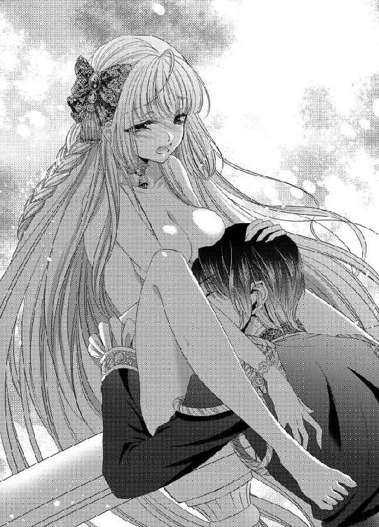

| ベル姫の華麗なる結婚 正しい初夜の奪い方 (蜜猫文庫) | |
| 斎王ことり | |
| 竹書房 (2014) | |
この作品は縦書きでレイアウトされています。
また、ご覧になる機種により、表示の差異が認められることがあります。
一部の漢字が簡略字で表示されていることがあります。
イラスト／佳井 波
序章 始まりのベル
「ヴィナス......！ ヴィナス？ どこにいるんだ？」
ヴィナスを呼ぶ声がする。
ヴィナスは、湖畔のリンデンバウムの木の陰に隠れて、その声が近づくのか遠ざかるのか聞いている。
柔らかな空に薄絹のような雲がたなびく。
こんもりと茂る深緑の大樹の梢は、白いドレスのヴィナスをすっぽりとその陰に包み込んでいる。母親譲りの澄んだ菫色の瞳はくるくると回り、黄金の髪は腰まで長くうねっている。
小さな天使のようなその姿は王宮一の人気を誇る。
今は、その輝くような姿を声の主から隠して、ごわごわとした樹齢五百年の老木の陰に潜んでいる。
「ヴィナス？ 返事をして」
少年の声が一度離れていくのを感じる。
こちらに背を向けたのだろうか。
下草を踏み、走ったり立ち止まったりする足音も聞こえなくなる。
（シグナス......行っちゃった？）
ヴィナスは少し寂しくなって、大樹のうねる太い根の中にしゃがみ込んでいた身体をそろそろと伸ばして見る。
周囲は灌木に囲まれていて、向こうの丘は木陰から覗くことができる場所だ。
そうっと自分の背丈ほどの灌木の陰に忍び寄って先ほど少年の姿があった丘のほうを見る。
日当たりのよい、若草色の丘の上に人影はない。
遥か向こうに運河の輝きを背景に純白の城が見えているだけだ。
「あ......？」
ヴィナスはがっかりとした表情で、指を口元に咥えた。
「あんなに......簡単に......諦めちゃうなんて......非道いわ」
「非道いって誰がだ？」
突然、すぐ耳元で声がした。
「きゃんっ」
ヴィナスは小さな肩をすくめて飛び上がる。
まさに地面から小さな飛蝗が撥ねるがごとく浮き上がって、そして両手を口元に当てて目を瞑った。
「こら。僕が呼んでいたのに、聞こえなかったか？」
おそるおそる目を開ければ、黒髪に輝く青い眼の少年が傍らに立っている。
「シ...グナス......」
白い上質のシルクのシャツを纏い胸もとに同じシルクのリボンタイを巻き、紫色のベルベットのジレと膝までのズボンをはいている。
白い靴下には汚れひとつなく、革の靴も外を歩いているというのに埃ひとつついていない。
王宮の庭園の一部とは言え、ほぼ王の狩りのための自然林へと変わりかけているこの森の入り口で遊ぶのにはふさわしくない姿だ。
三歳になるヴィナスが丘で蝶を追いたいと誘って連れ出していた兄だが、妹がどれだけわがままを言っても、蝶のようにひらひらと戸外を飛び回っていてもおとなしくあとを追っては見守ってくれている。
優秀で温厚で見目麗しい七歳年の離れた兄。シグナスだ。
「シグナス兄様......非道い......私......今......心の臓が唇から溢れでたわ......」
今もまだどきどきとしてそこが空っぽになるほど激しく動悸がしている右胸を抑えながらヴィナスは兄を涙目で見上げる。
「ヴィナス......心の臓はね、右じゃないよ。左になるんだ。こっちだよ」
兄はそういってヴィナスの左胸を指で触れた。
「きゃ......」
ヴィナスは恥ずかしくなって赤くなって左胸を両手で押さえる。
「私の家庭教師の先生が心の臓はこっちにあるって言ったのよ......非道いわ、違うのね」
ヴィナスは記憶がなかったが、とりあえず恥ずかしいから家庭教師の先生のせいにしておく。
だが、兄の指摘はそれだけでは収まらない。
「ヴィナス？ 返事はちゃんとするものだって家庭教師の先生にも言われているだろう？ そうだよね？」
今さっき、突然気配もなかったのにヴィナスの耳元すぐに声が聞こえたのは、彼がわざと忍び寄って、極力近くで唇を寄せて声を発したからだと言うことがわかる体勢。
今もまだ彼の上体はヴィナスのほうに偏っていて、そして怒ったようなむっとした唇を突き出している。
「シグナス......兄様......」
「ヴィナス。心配するじゃないか。いきなり姿を消すなんて」
言葉では怒ってみせても、十歳の少年にして気品ある優雅な顔立ちと仕草は、とても怒っているようには見えない。むしろ心配で仕方なかったという様子。
言葉もおっとりとして、発音も良い。声質も伴ってヴィナスには身内で一番好きなのが彼だった。
「だって......私がタンポポを摘んでいて振り返ったら、先に側からいなくなっていたのはお兄様よ？」
ヴィナスは逆ギレのように頬を膨らませてみせる。
「それは......ごめんよ。悪かった。でもヴィナスの側からいなくなったのはほんの数分だよ？ しかもあの茂みの奥にいただけだった。なのにヴィナスはわざわざあの丘からここまで登って。リンデンバウムの影に入り込んでいたんだよね？ それって......かくれんぼのつもりだったのか？」
黒色のさらさらの髪を微風に揺らして、少年にしては美しい彼が冷静に問いただす。
「か、かくれんぼだったわ。そうよ。かくれんぼなの？ って私茂みの中にむかって聞いたわ。だから......ここに来て......木の陰にいたの」
「そうか。それはごめん。僕が聞き取れなかったんだね」
「そうよ。悪いのはお兄様。シグナスお兄様なのよ？」
三歳の可愛らしい少女が頬をぷくっと膨らませ、言い訳をするたびにその頬を桃色に染めているのを見て、シグナスは、おかしくなったのだろう。
「ごめんよ僕が悪かった」
「そうよ、それなのに、私が少し見つからないからって、あっさりと宮殿に引き返していたでしょう？ お兄様意地悪だわ」
「ああ。本当にね。ごめんね。僕が悪かった。お詫びに......」
彼はそれまでごく自然に片手を背後に回していたが、ふっと花の香りをさせながら、ヴィナスの頭に何かを載せる。
「あ？」
ヴィナスの頭に、シロツメクサで編まれた花冠が載っている。
小さな金色の頭に、可愛らしいシロツメクサの花冠は、まるで本当に王女様になったようにヴィナスの姿を輝かせる。
「ウエディングドレスみたいだね」
彼は言って、七歳年の離れた妹の可愛さに頬を緩める。
白いシフォンのふんわりとしたドレス。白い靴に透けるような白い靴下。そしてシロツメクサの花冠をかぶったヴィナスは、まさに可愛らしい花嫁だ。
「綺麗？」
「ああ」
「花嫁様みたいなの？ 私」
「ああ。とても綺麗。花嫁様みたいだよ」
「や......見たい......私も......見たいわ」
ヴィナスはその姿を自分でも見たいと思ってきょろきょろと周囲を見渡す。
ここは王宮ではないから鏡はない。
湖もない。
それでその場からとことこと走り出して、丘を駆け下りる。石畳で散歩の小径が整えられた木陰の道を小走りに走って、水路の先の噴水へと向かっている。
「ヴィナス。ヴィナス。そんなに走ると危ないよ」
青い瞳の中に映るものを可愛らしいヴィナスだけにして、シグナスがあとを追う。
「ヴィナス」
ヴィナスは兄を振り向いて、
「お兄様。噴水の池に映せば見えると思うの。だから私そこに行くのよ」
そう言って、また前方に視線を戻した直後、ヴィナスはいきなり転んだ。
「んんぅ」
びたん、と音がするほど盛大に転んだ幼いヴィナスを、あとから追いついたシグナスが青ざめて助け起こす。
「ヴィナス。ヴィナス。大丈夫か？」
「んんぅうッ！ んう......」
ヴィナスは涙をぼろぼろこぼしながら唇を震わせる。
「ああ、膝が痛むか？ それとも掌？」
「うぅ......ぁんッ」
ヴィナスは最初は驚きで声も出なかった。が、次第に痛みも広がってきて、そして涙と共に鳴き声も喉の奥にこみ上げてくる。
「血は出ていないけれど」
ヴィナスの脚をそっとさすり、それからヴィナスの手を取って、掌を開かせる。そこが赤くすりむいて小さな石粒に傷ついているのを見て、彼は慌てて周囲を見る。まだ噴水の泉水盤までは遠い。シグナスはその掌に唇をつけて、舌先で小さな砂粒や石粒を取り除く。
「あ......」
「痛むか？ 大丈夫。少し我慢して......」
ヴィナスは、最初こそ彼の小さな赤い舌が、自分の掌に落とされて、傷口の上を這い回るのを痛みと共に怯えて見つめていたけれど、次第に舌を巧みに動かしては傷に触れないように汚れと皮膚の間に嵌ってしまった石粒を取り除いてくれているシグナスに見とれている。
兄はこんなに逞しかっただろうか。
頼れる存在だっただろうか。
半年前までは乳母とばかり散歩に出ていた。まだ幼いヴィナスは兄と遊ぶこともなかった。ここ数ヶ月、末っ子の自分を、一番年の近いシグナスがよく面倒を見てくれるようになった。
病弱な母にあまりかまってもらえないことも大きい。でもそれでもこれほどシグナスが自分に愛情を傾けてくれると思わなかった。
黒髪のさらさら鳴る額から、通った鼻筋。長い睫。そうした特別美しいものを、ヴィナスはじっと見つめている。
こんなに綺麗な少年が自分の兄。
こんなに綺麗な人を初めて見た、と改めて思う。
胸が小さくとくとくと疼く。
「い......たいわ」
「大丈夫。痛くないよ」
「痛い......わ」
「痛くない。ね？ 大丈夫だから」
彼はそう言いながら、ヴィナスの掌にねっとりと甘い舌を這わしてくれる。
甘い美感がヴィナスの掌から、ぞくぞくっと身体を巡る。
美しい兄。自分に尽くしてくれる優しい少年。
くるっとカールした睫の縁に触りたい。つんとした鼻先に触りたい。
彼の黒髪に触れたら怒られるだろうか。
ヴィナスはシグナスのことばかりじっと見ていて、自分の傷を見もしない。
傷は見ればそれだけ痛みが襲ってくるとも思っているから、丁度いい。
綺麗なシグナス。
美しいシグナス。
「さあ、一応砂利は取り除いたよ。血が止まってきているけど、早く乳母のところに行って手あてをしてもらわないと跡が残ったら大変だ。お医者を呼んだほうがいいかもしれないし」
のシグナスはヴィナスを抱きかかえて走り出す。
「あ......あれ......」
ヴィナスはふと頭をやんわり拘束する王冠がないことに気づいたが、そのときにはもうシグナスが走り出してしまっている。
ヴィナスは後方を見て、シグナスに声を上げる。
「ねえ、......シグナス。シグナス兄様......」
転んだとき、外れて弾んで転がっていったのだろう。後方に置き去りにされていくシロツメクサの花冠に手を伸ばそうとしたが、シグナスはそのまま王宮を目指して走っていた。
シロツメクサの花冠は、そのままヴィナスの視界から消えてしまった。
「私の冠......私の冠......どうして......拾ってきてくれなかったの」
ヴィナスは、ベッドに寝かされて、両方の膝を両方の手に包帯を巻かれてる。
「また、作ってあげるから。ヴィナス」
「本当に？」
いじけたような声で横目で見るヴィナスに、シグナスはなだめるように優しい声をかけてくる。
「本当だよ......だから、今は休んで。痛いだろう？」
「昼間だもの......寝たくない......」
「いい子だ。僕の愛する美しい姫君......君に傷がついたら......残ったりしたら......僕はお父様と亡きお母様に顔向けできないよ。可愛いヴィナス......この白い身体に僕のせいで傷がついたってなったら......僕は死んで罪を償わなくてはいけないから......だから休んで傷を治して」
シグナスはそっと金色の髪を撫でてくれる。
シグナスの線の細い指先が、優しいリズムを刻むように何度も何度もゆっくりと髪を撫でてくれる。
すうっと絹を引くような澄んだ音が指先から伝わってくる。艶やかな妖精の羽のような爪。
綺麗な肌。美しい青い瞳。凛々しい眉。
「シグナス......お兄様......ずっと......そうしていて」
「もちろん。安心して......痛くない......もう痛くないからね」
シグナスはヴィナスのころんと丸みを帯びた額に、唇を押し付ける。
柔らかな口づけ。
慈愛の口づけにヴィナスは嬉しくてきゅっと肩をすくめた。
「もっと......して」
チュ。
「もっと......もっと......して。お兄様......」
「おまえが望むまま......いくらでも......してあげるから」
チュ。チュ。
口づけの濡れた音が額に、頬に、そして唇に落とされていく。
「くすぐったいわ......お兄様......」
「だめだよ。くすぐったくても、やめないよ。可愛い僕のヴィナス......」
「お兄様、私も大好き......私だけの大切なお兄様」
「僕のヴィナス。大好きだよ」
（最愛のお兄様。どこにも行かないでね。ずっと私の側にいてね）
ヴィナスはほうっと息が穏やかになるのを感じて、辛い痛みも去っていくように感じながらベッドの中で眠りについた。
美しい曲線で作られた優雅なベッドに横たわる金色の少女と、それを見つめ愛撫している少年という絵になる光景は、端から見ればまるで王宮神話のように輝いていただろう。
幼い少女と常に彼女を見守る少年。
その構図は一年、二年後になっても変わらず、仲のよい美男、美少女と王宮の外にまで噂が知れ渡っていた。
第一章 美しき兄の帰還は秘密の序曲
「どこにいる？ 王女」
声が聞こえる。
低めの澄んだ男声。
その声で名前を呼ばれるのはとても好きだ。
白い離宮の影で、ヴィナスは東屋に隠れながら声の主が自分を見つけてくれることを願っている。
「ヴィナス王女？」
白馬を操り、丘の緑の中にやってきたのは緋色の軍服に身を包んだ青年だ。
しばらく馬上から周囲を眺めていた青年は、白馬の背から飛び降りて、そしてもう一度耳を澄ますようにして周囲に視線を配っている。
やがて、白馬をその場に残し、革のブーツで草地を闊歩しては王女を捜しもとめる声を上げる。
「ヴィナス！ ヴィナス・ド・ベル・ウイントレッド王女！ 乳母やからここにいると聞いたぞ？ かくれんぼでもしているつもりか？」
精悍な声が王宮の離れの東屋に向かって投げかけられる。
さわさわと深い緑の大樹が梢を震わせている中、青年は困惑気味の顔で再び声を上げる。
「ヴィナス。いい加減に出てきてくれないか？ 三年ぶりなんだ。おまえの顔を早くみたい」
シグナスが、黒髪を靡かせて振り返っては脚を止める。
周囲を見渡しているのは透明な青い瞳。すっと高い鼻筋と、引き締まった口元。少し厚みのある官能的な唇だとヴィナスはつねづね思っている。
周囲を見渡すその立ち姿の凛々しさは、影でこっそりと見つめていても、ため息が出そうなほどだ。
腰に差した長剣は、王家の紋章の入った権威の象徴。お飾り的な意味合いで身につけているのだが、またそれが凛々しさを際だてる。
黒い上衣、白いズボン、膝丈までのブーツを履いて、そのブーツにも裾の長い上衣にも黄金のボタンと金具が輝いている。
このブリアント王国の第三王子が、三年ぶりに王宮に戻ってきている。
（三年ぶりのお兄様......シグナス・ド・ラス・ウイントレッド公爵......）
その姿を東屋の影でこっそりと見つめていたヴィナスは、きゅんと胸をときめかせた。
変わってないけれど、変わった気もする。
少し背が高くなっただろうか。
少し陽に焼けただろうか。
艶やかな黒髪も伸びた気がする。
ああ、また美しく進化している王子に、ヴィナスは毎日甘えられるのだ。また一緒に昼下がりの木陰で樫の木の下で本を呼んだり、裏の森でピクニックが出来る。観劇も出来るし、音楽会も開ける。
それにしても、腑に落ちないのが、この王宮に戻ってきてからただひとりの妹である自分に会いに来るのに、時間がかかりすぎではないだろうか。
もしかしたら、兄は自分のことなどもう忘れているのではないか。
草に紛れて森にいたせいでヴィナスの肌にも髪にも露が彩っている。
もし兄が自分を忘れていたら、この露のように涙が瞳から流れ出てしまうに違いない。
（忘れてたら、死んでしまう。忘れてたらお兄様を恨んでしまうわ。大嫌いになるわ）
そんなことを瞼の裏に想像して目を閉じていた、ヴィナスの背後から、ふいに何ものかが近づいてそして腰を抱き寄せた。
「きゃ......ッ」
「やっと、捕まえたぞ。可愛い森の獣」
ヴィナスは、大きな手に細い腰を掴まれ背後から抱きしめられる。顔のすぐ横に鼻筋の通った青年の顔。頬をくすぐる黒髪。
青い瞳は宝石のごとくそこに合って、ヴィナスをただ見つめている。
「シグナスお兄様......！」
「ああ、おまえの唇から俺の名前を聞くのはいいものだな」
「お兄様。驚かせないで。突然こんなの......」
「おまえがいつまでも出てこないからだ。相変わらずかくれんぼが好きなのか」
呆れたような怒ったような口ぶりだが、その声の柔らかさからは、最愛のだだっ子を見つけて喜んでいるような気配も感じられる。
「私、怒ってるの。お兄様が......早くに私を見つけてくださらないから......だわ」
「怒ってる？ それを言いたいのは俺のほうじゃないだろうか。おまえが部屋にいればすぐに会えたのだぞ」
シグナスの口調は以前より男らしく、どこか堅苦しくもある。それはヴィナスの気のせいだろうか。だが、怒っているかのような兄の口ぶりに躊躇するヴィナスの肩が強引に抱き寄せられる。彼の腕が自分の腰を抱きしめたまま放さず、ぎゅっと背中を押し付けてきては顔をよせ、頬に口づけるのを、ヴィナスは心臓が止まりそうなほどの悦びで受け止めている。
「あ......お兄様」
三年ぶりの抱擁。三年ぶりの口づけは少し激しく情熱的で、ひたすら優しかった兄の口づけとは少し違っているようにも感じられる。
でもそれよりも、一番年が近い、仲のよかった兄とまたこうして会えたことがヴィナスには限りない至福だ。
兄もそう思ってくれているのか、優しい抱擁ではなく、力の込められた男の逞しい腕に力が込められて、華奢なヴィナスの骨は音を立てて軋みそうなほど、苦しい。
彼の顔をすぐそこにして、「痛い」と言えばきっと緩めてくれる手を、ヴィナスはなぜか言うことが出来ない。
久しぶりの兄の機嫌を損ねたくないからか、それとも、昔の兄とは少し気配が違っていて、簡単に口答えも反抗もできないような気がしているのか。
それとも、こうして強く抱きしめられているのが好きなのか。
しかも抱きしめられているのは背中だというのに、なぜか胸がきゅんっとする。
まだ硬い蕾のような乳首がむずむずとした。
これはなんだろう。
久しぶりに会った兄が、とてもまぶしい。
彼の唇が頬に落とされ、音を立てながら何度か親愛の情の口づけをするのを、ヴィナスは「もっと、もっと」と言う気持ちで受け止めている。
だが、シグナスは冷ややかな顔でヴィナスを見つめ、不機嫌なのかと思うほど冷静な声で命じる。
いい匂いのする兄は、ヴィナスをようやく離して、そしてこちらに顔を向けさせた。
「何か言うことはないのか？ 王女。第三王子のご帰還だぞ」
「お帰りなさいませ。シグナスお兄様」
ヴィナスは改めてシグナスの身体から身を離すと、ドレスの脹らみをつまみ、片足を引いて、優雅なケットシーをする。
王宮内で正式な客人相手にする格式張った挨拶だ。
その優雅さに兄は頬を緩ませた。
「三年ぶりか。久しぶりに会ったら、見違えたぞ。女性らしくなった」
だがその言葉は、やはり以前の兄よりも皮肉っぽく、そして男らしさがにじみ出る。
ヴィナスは戸惑いながら、反論した。
「お言葉ですけど、私は前から女性らしいです。それに三年たっているのだもの、一〇歳だったときよりもより淑女になっていて当然です。お父様だってブリアント国の王女としての礼儀作法には五月蠅いもの。もっと今の王妃さまのことにだけ、かまけていてほしいわ」
「それほどおまえのことが大事なんだろう。父王がもっとも愛した亡きルイゼ王妃の忘れ形見なんだからな。わかってやれ」
やはり兄は昔より明らかに男らしくなっている。以前のほうが柔和で、どこか女性らしい美しさがあったが、今は麗人というべき妖しさと青年の大人びた気配の両方を備えていてヴィナスが眼を合わせるのも怖いくらいだ。
「で、でも、私だけ舞踏会や夜会にはまだデビューさせてもらってないの。十五歳になったら普通はデビューさせてもらうでしょう？」
「宝物のように大事にされているのだからしかたない。おまえを大勢の男の前に晒したくはないんだよ」
「どうしてですか？ 他の姫君は皆そうやって愉しんでいるのでしょう？ お兄様が今まで留学していらしたイタル国でも、貴族の殿方や姫君は皆舞踏会や夜会に明け暮れているのでしょう？」
「おまえが、デビューさせてもらってないのにはわけがあるんだ。仕方ないだろう」
「どのようなわけですか？ 我が国の国王のたったひとりの王女として、少しでも早く、多く公式の場所に出ておくべきではないかと思うのです」
「おまえはダメだ」
ガンとして言い張るシグナスに、ヴィナスは、やはり違和感を覚えてしまう。
兄は以前ほど自分に優しくない気がする。
前までの兄なら、ヴィナスの言うことなら何でも頷いて聞いてくれたし、なんでもやんわりと受け止めてくれた。優しくて思いやりのある、ヴィナスの気持ちのわかる兄だったのに。
今の兄は、自分の気持ちをわかってくれない。このやりとりは、まるで普段ヴィナスが父王としているものとそっくりだ。
「お兄様も、私をまだまだ子供だと思っているのでしょう？ ご自分だけ異国で学んで来て、よその国で生活されて、私だけこの王宮に閉じ込めて子供扱いなんて、酷いです」
「おい。俺が好きこのんでイタル国に行ったと思うか？ そりゃあ行ってみれば奥深い国で勉強になったが」
「ほら、やっぱり」
シグナスだけ大人びて、シグナスだけ、他国の見聞を広めて、この王宮にずっと閉じ込められている自分の意見を否定するなんて、哀しすぎるし、腹立たしすぎる。
哀しくなってしまうヴィナスに、シグナスは驚いた顔をした。
「おい、なぜ涙ぐむ？」
「だって、久しぶりに会ったお兄様は、私のことなんて何もわかってくださらない偏屈になってしまってます。前までは私のことならなんでもわかってくださったのに。だからです」
「───、おい。何を訳のわからないことを言っている？ 今もこうしておまえの言うことをちゃんと聞いているじゃないか」
「聞いてません、反対意見ばかり。やっぱり異国に行って、お兄様は変わってしまったのですね。私のことなどどうでもいいの」
「そんなことはない。だからこうして捜しに......」
「そうでしょうか。帰られてから半日以上たってますけど」
押し問答を続けていたが、ふとシグナスは怒った眉を解いて、笑んだ。
「おまえは相変わらず馬鹿だな」
「ば、ばか？ お兄様。酷いわ。会った途端、妹に〝ばか〟ですか？ 本当に酷いわ！」
憤慨して身を翻して逃げ出そうとしたヴィナスの腕をシグナスが胸の中に引き寄せる。
「お兄様。離して......」
「だから最後まで話を聞けよ。それには、ちゃんと理由がある。おまえがどこの令嬢より姫君より特別に可愛くて美しいからだ。おまえだけは特別な存在だからだ。父上もおまえをどこの馬の骨とも知らない男の眼に晒したくはないのだろう」
「え？ 本当に？ 本当にそんな理由で私を社交界デビューさせないのですか？」
「嘘を言ってもしかたないだろう」
「でも、私は奥宮からもほとんど出してもらえないし」
「それでいいだろう。美しい王女は出し惜しみしてこそだ。不特定多数な男たちの前に安っぽく出していい娘ではないのだから」
シグナスにぴしゃりと言われて、ヴィナスもそれ以上の反論を諦めた。
確かに、王宮庭園を着飾って歩きながら男たちを侍らせている貴婦人たちを眼にしたこともある。
「でも......」
でも、王宮に出入りしている貴族の令嬢を窓から見下ろすだけなのは、さすがに寂しいと思いはじめているのだ。兄に涼しげな流し目でそう諭されると、本心なのか、適当に自分をあしらっているのかよくわからない。
もっと優しく、自分に好意を向けてくれていたのがシグナスだったはずなのに、なんだか彼は変わってしまった。
ヴィナスは、待ちこがれていた兄の帰還が、なんだかまったく別のものに感じられて、驚くやら哀しいやらで、心臓が痛いほど激しく打ち始めている。
「さあ、俺は父上への帰国の挨拶もせずに来ているんだ。早く王宮に戻ってご挨拶をしないと」
シグナスは馬の手綱をきつく握って、そして鐙で馬の腹を軽く叩く。そうすると白馬の動きは機敏になって、ギャロップ。そして早駆けになった。馬の背から振り落とされそうになったヴィナスの手を自分の腹に回させて、シグナスは前方を見つめる。
ヴィナスは、シグナスの腰に必死に手を巡らせて、激しい揺れに耐えていた。
「さあ、王女様。下りてください」
揺れが緩やかになった頃、ヴィナスがゆるりと目を開けるともうそこは王宮の真っ白な窓の並ぶ、大きな両開きの扉の前だった。
ヴィナスの手をシグナスは外させて、自分は先に馬上から下りる。それからヴィナスの脇を抱えて馬から下ろした。
「お帰りなさいませ。シグナス王子」
使用人たちが入り口を開け、一声に頭を下げる。
中から濃い緑のドレスを纏い白いエプロンをつけたメイドたちも現れ、黒い燕尾服の執事や、えんじ色の制服を纏ったフットマンたちも現れる。
皆が王子の帰還を歓待して、そしてシグナスはコートを預けて中に足を踏み入れた。
ヴィナスはそんな兄の後ろ姿を見ながらあとを追っていったが、シグナスはそれ以上はヴィナスをかまわず、王陛下のいる謁見の間へと階段を上がっていく。
吹きぬけに堂々とした存在感を見せる階段。豪華な黄金の飾りの付いたカーブを描いて伸びる手すりの脇にも使用人が居並び、シグナスが通り過ぎるまで黙礼を続けている。
ヴィナスも階段を上がり、王の謁見の間へと脚を運んだ。
「ただいま戻りました。国王陛下」
最奥の玉座まで続く長い緋色の絨毯の上で、まずシグナスは膝をついて一礼する。
広い謁見の間には入り口に、そして奥に、四方の隅にそれぞれ衛兵が立っている。
国王陛下は、黄金の獅子の頭が腕置きについた、緋色の玉座に座っていた。
長い葡萄色のマントを纏い、ベルベッドの黒の丈長の上衣で足元まで覆っている。
黄金のバックルのついた柔らかな革の靴の先が覗いている。
厳めしい容貌で、その評判も勇猛果敢。武芸に秀でてなかなかの戦い好きとされる、ガイナ王はシグナスを見て、口を開く。
「帰ったのか。シグナス王子」
王はがっしりとした体格で巨大な玉座に負けない威厳を見せているが、友好国への親善の役目を果たして自国に帰還した息子に灰色の目を緩めて声をかける。
「はい」
「元気そうだな。あちらでは国王に気に入られていたそうだが。シグナス」
「はい。コルダ国王陛下にはとてもよくしていただきました。ジョゼフィーヌ王女にも付ききりで世話をしていただき、客人として最高のもてなしを受けました。あちらの軍隊も視察させていただきました」
（ジョゼフィーヌ王女様に？ 付ききりで世話をしてもらった......？）
ヴィナスの耳にその王女の名前がしっかりとこびりつく。
シグナスの口から自分の知らない王女の名前が出たのは初めてだ。
それどころか、知らない女性の名前が出たのも、記憶にある限り初めてだと思う。
彼が男の顔をしている。
それだけで、またヴィナスの中で美しく成長して戻ってきたシグナスに対するもやもやした感情が増大する。
（お兄様の口から......私以外の女性の名前が出るなんて......）
それも帰って来るなり、父王に報告する彼の真意がわからない。
「かの国はとても優秀な軍馬を持っているからな」
「はい。そのほか、様々な城塞や湖。景勝の地も案内していただきました。王都はとても美しく整然とした都市が形成されており、文化レベルもとても高く、芸術性に富んだ国でした」
「女性も美しいと聞くが」
「ええ、むろんです。異国の血が混じっているようで、この国の女性より黒髪で黒い瞳の女性が多く見うけられたようでした」
「そうか。シグナス。その話はまた別の機会を設けて聞かせてくれ。それからヴィナス王女よ」
ヴィナスが入り口付近でじっと二人の会話を聞いていたのに気づいていた王がヴィナスを呼ぶ。
「はい。お父様」
「シグナスが戻ってきておまえも嬉しかろう」
「ええ......それはもう」
彼が戻ってくると聞いてからずっと、それだけを楽しみに過ごしてきた。
なのに、王宮に彼の馬車が到着してから、ヴィナスのところにやってくるまで半日もかかったのだ。それはかつてのシグナスならあり得ないことだ。だが、父王はそんなシグナスとヴィナスの今の関係を知らずに、二人揃った子供たちにあごひげを撫でながら笑む。
「シグナスの帰還を祝って、貴族たちも夜会や舞踏会に盛んに招待するだろう。おまえも特別に夜会に出席してもいい」
「本当ですか？」
「ああ。シグナスと同席すればいい。そして花神祭には共に輿に乗せてやってもいいぞ。それまでにちゃんとその神儀の所作と神文を憶えるならばな。おまえももう十五歳だ。〝花神嫁〟の資格もあるしな。ドレスをこしらえるように言いつけておく」
「はい。お父様。ありがとうございます」
「そのためにも、日焼けはするな。いいな。おまえの肌は母上譲りの白い肌で、繊細だ。焼けては大変だからな」
「はい。お父様」
ヴィナスはおとなしく一礼して、部屋を出る。幼い頃から身体が弱くて、外に出ることができなかったから、今、父からこうして皆が愉しむイベントに参加していいと許可がでたことがとても嬉しい。
初めて許された祝祭への参加。
初めての花妖精の祝祭。その輿に乗ってもいいなど、兄が帰ってきたからこその父の寛大な許可だろう。そう考えると、兄が多少自分の知っている優しくて思いやり深くて温厚で柔和だった頃と違っていても、許してやろうと思った。
嬉しくて弾む足取りで、部屋を出て両手を胸もとできゅっと握り締めてくるくると廊下を回ってしまう。
ドレスの裾もくるくると大きく翻って、桃色の足先が覗いている。
シグナスもあとを追うようにして謁見の間をあとにしてヴィナスに追いついた。
「ヴィナス！」
兄が自分と同じに喜んでくれるだろうと一瞬だけ思った。
でもその考えは泡のようにすぐに消え去る。
「お兄様！ ねえ、お兄様。輿に乗っていいのですって。花神のメインクイーンということよね？ お祭りの花嫁よね？」
「ああ、そうだな。父上がおまえにそんな賑やかな場に出ていいと言ったのは初めてだろうな。どういう心境の変化だろうな」
「お兄様が無事に王宮にお戻りになってお父様も特別嬉しいのです。おとなしく待っていた私にもご褒美なのだわ。一度は私もイタル国に行こうと思っていたのですもの」
ヴィナスはうきうきして両手を組んで胸もとに押し付ける。
たわわな胸がぎゅっと押しつぶされて、脹らみが盛り上がる。それを見てシグナスは少々困ったように視線をそらす。
「嬉しそうだな」
「もちろんです。お兄様だって嬉しいでしょう？ 私、妖精の仮装が出来るのですよ。ふふ、すごく嬉しいわ。お兄様も妖精王の仮装が出来ます。妖精王、黒いマントに黒い上着にズボン。甲冑も黒い鋼で......きっとお似合いになるわ。ねえ？ 一緒に仮装しましょう。するでしょう？」
「どうかな。仮装など、くだらないだろう」
「え？ どうしてくだらないなんて。そんなことないわ。私は白百合の花をあしらったエンパイアドレスがいいの。胸もとで金のリボンを結んでギリシャ神話の女神みたいな。そして体中にシフォンの透ける羽のようなものを纏って、そして背中にもシフォンの羽を......」
「神話の女神だと？ ますますどうかと思うな」
ヴィナスは、昔、三つ年上のいとこのマーガレットが纏っていた白いドレスに憧れていた。年頃の少女になったら、自分もあんな風な美しいドレスを纏い、華麗なる黄金の馬に引かれる輿に乗れるのだと思っていた。なのに、国王である父は頑としてヴィナスが華やかな場にでることを禁じていた。だから今回の寛大な措置はシグナスが戻ってきたがゆえの気のゆるみであり、一時的に気が大きくなっているのだろうと思う。
でも、当のシグナスがこんな様子ででは、ヴィナスは肩すかしを食らった気分だ。
「お兄様......」
回廊の中を花に囲まれていたヴィナスは、兄の冷静な声に完全に足を止めた。
先ほどまでくるくると回っていたドレスも黄金の髪もしゅんとしてヴィナスの華奢な身体にまとわりついている。
「そんなに浮かれていないで、早く部屋に戻ろう。陽射しが強くなってきたぞ」
「お兄様はご存じないのよ。私、三年前と違ってもうずいぶん丈夫になったわ。お医者様もそう言ってくださったもの。ほら、見て。お庭に出て走っても息切れもしないし熱も出ないの」
ヴィナスは、柔らかな菫色のドレスを広げながら、兄を追いかけ、その前に回り込んで後ろ歩きをしながら両手を広げる。
そのとき、後ろ歩きをしたせいだろう。回廊の石畳の継ぎ目にヒールが引っかかって、つまずき、後ろ向きに倒れ込んだ。
「あ......」
心臓がきゅっと縮み上がって、ヴィナスは宙に手を伸ばす。その手を、大きな骨張った手が掴んで、引き寄せた。
兄の手がヴィナスの手首を掴み、前方に引っ張ったのだ。そのまま、ヴィナスは兄の胸の中に抱き留められる。
「ヴィナス。後ろ向きに歩いたら危ないだろ。転ぶぞ」
シグナスは、叱責するが、その腕はしっかりとヴィナスを抱きしめしばらく離そうとしない。「お兄様......もう大丈夫......だから」
「大丈夫だって？ 言わないこっちゃないだろ。今俺が手を掴まなければおまえは後ろ向きに転んで頭を打っていたぞ？」
「大丈夫。頭は打っていないし、お兄様がいたから、大丈夫だったでしょ」
ヴィナスは、その腕の強さに、男の逞しさを改めて感じて、胸もとに顔を埋めながらも赤くなってくる頬に困惑している。
この腕の強さも、以前より強い。そして頬が当たっている彼の胸の確かさに、どういうわけか胸がどきどきしてきている。
兄は以前の兄ではないけれど、それでもこうして強い力で自分を守り助けてくれる。
「お、お兄様。もう大丈夫よ。大丈夫だから」
ヴィナスはしっかりと抱きしめてくるシグナスの手から身を離して、そしてはにかんだように笑む。
「私、これからもっと外に出て丈夫になるわ。乗馬もしたいし」
自分が少しぎこちないのは、久しぶりなシグナスが、ずいぶん男らしくなったせいだ。
それだけだ。
シグナスが以前と同じようにここにずっと暮らすようになって、また共にいることに慣れてくれば、このおかしな胸の高鳴りもすぐにおさまる。
兄も、イタル国から帰ったばかりだ、あの国での自分から、ここにいた当時の穏和な兄に戻るかもしれない。
知らない異国にいたせいで、彼も虚勢を張ったりとげとげしい言葉で武装したりする癖がついているのかもしれない。
こんな事なら、森にかくれんぼなんてするんじゃなかった。そのせいで、シグナスは、少し不機嫌になったのかもしれない。
彼ももっと早くに自分に会いたくて、でもやむにやまれぬ事態が起きていたのかもしれない。
「ヴィナス。手を繋いでいろ。おまえはふらふらしすぎるぞ」
「大丈夫です。ねえ、そうだわ。では、お兄様は黒い神様の仮装をしたらどうでしょう。それなら武神の衣装と変わりなく、勇ましい軍人として違和感はないでしょう？ くだらない仮装だなんて誰も思わないわ。私は花の妖精の仮装にするから......ああ、それとも花の精の花嫁の仮装がいいかしら」
「ヴィナス。それより部屋でおまえがどれだけ勉学に励んでいたのか、見せてもらわなくては」
「え？ 勉学ですか？ この国に久しぶりに戻ってきて、いきなり私の勉学の証を見せろと？」
「賢さは王女として必須だろう。おまえは頭はいいのだが、身体が弱くて家庭教師の時間もなかなかとれなかったのだから、今、丈夫になったというその身体とふさわしい知識と頭脳を見せてみなさい」
「そんな......すぐにですか」
「花神祭のセレモニーにもしもちゃんと参加するなら歌や踊りも覚えなくては。それに......おまえはやはりまだ公の場に出るには早いと思うぞ」
「どうしてなの？ お兄様は今の私を何もご存じないはずでしょう？」
「おまえは大切に育てられていて無防備すぎる。そう父上も心配されている。むろん俺もだ」
「大丈夫です。今度の花神祭でそれを証明して見せます。それに私、お兄様がいない間にダンスのレッスンも積んで頑張っているのですから」
「ほう？」
やはり以前の兄とは違う、シニカルな視線と大人びた相づち。
「どちらの先生についているんだ」
「舞踏会に来ていたルーシア伯爵の奥様です。いつでていいとお許しがでてもいいように」
「ルーシア伯爵だと？ 知らないな」
「お兄様がこちらにいない間にルーアンからいらした大使です。とても洗練されたダンスで、身のこなしも優雅で。でもこれから社交界に出る機会が多くなるなら、レッスンに来ていただく回数ももっと増やさなくては」
ヴィナスは、父が花神祭に出ていいと言ったことが嬉しくて仕方ない。
三年前でも兄には許されていた社交界。やっと自分も同じ空気の中に身をおける。窓の向こうに眺めるのではなくて、花園の向こうに眺めるのではなくて、あのにぎわいの中に入っていける。
「踊りだけで社交界に出て行けると思うなよ。俺は魑魅魍魎の渦巻く、貴族たちの集まりになど。おまえが出るのは気に入らない」
「お兄様は昔から社交界に出ていらしたわ」
「俺はいいんだ。男だからな。だが何も知らないおまえが出て行くのには反対だ。ヴィナス」
「安心して。私も色々と学んでいるの。フランス語の勉強も始めたのよ。歴史も、詩の朗読もピアノや歌もね。もっとちゃんと学んでブリアント国の王女として公の場所に出ても恥ずかしくないようにするわ」
「それはすごいな。幼かったおまえが、いつの間にそんなことを決めたんだ？」
シグナスは、次々と明るく将来の展望を語る、幼く可愛い妹を感嘆の眼差しで見つめる。
キラキラ輝く小さな顔をまぶしそうに見つめて、そしてなぜだかシグナスは、ふと不機嫌そうになって視線をそらした。
「どうかしたの？ お兄様」
「───いや。あの幼かったヴィナスが、ずいぶん大人になったものだと思って」
「そうでしょ。シグナス兄様が戻って来たときびっくりさせたくて、これでも色々お勉強してたのよ」
ヴィナスは、シグナスの手を取ってきゅっと自分の胸もとで握り締める。
シグナスの手が柔らかなパンのような膨らみの中に一度沈んで、兄が手を一瞬引き気味にしていたことにヴィナスはまったく気づかない。
「ねえ、お兄様。私のお部屋にきて。もう刺繍のベッドカバーが出来たの。ああ、それとピアノの連弾も出来るくらい腕を上げたわ」
「ヴィナス。刺繍を本当におまえがか？ 不器用でどれだけやってもなかなか作品が仕上がらなかったのに。ピアノだって、鍵盤を押す力もなかったこの小さな指先が？ 曲を弾けるって？」
「私もやればできるのだわ。それに......」
ヴィナスは部屋にシグナスを連れて行きながらふと声を詰まらせる。
「お兄様がいなかったことが......それだけ......つまらなかった......ということだわ」
「───そうか、それはすまなかったな」
伏し目がちの兄は、ヴィナスを見ようとはしない。
やはり何か、あるのだろうか。もしかしたら、自分は彼が期待していたようには成長していなかっただろうか。
「あの、お兄様......」
「なんだ」
「ううん。いいの、これからはずっとここでいられるのでしょ？ また他国に留学とかされないでしょう？」
「俺はするつもりはないけれどな。だが諸外国の情勢変化にもよるだろうし、また父上の胸先三寸のことでもある。けれど、まあ〝留学〟は当分ないだろうな」
シグナスはヴィナスの表情が次第に曇ってきているのを見て、きまじめな返答をやめ楽観的な予想に切り替える。
「今すぐに留学なんて......話は出るわけがないから、安心しろ」
「そうよね。またそんな話が出たら、私がお父様に反対するわ」
シグナスの答えに、ヴィナスはすぐに、表情を和らげる。
「父上には格別よい子のおまえに......そんなことできるか？」
「今度はするわ。今度こそ、するわ」
あのとき、どうして兄のイタル国行きをもっと反対しなかっただろう。今でも後悔している。こうなった今、よけい後悔が押し寄せてきて、あのとき胸を押しつぶすかと思った、寂しさと、無力さが今またヴィナスの胸に刻まれた最悪の記憶としてちらちらと甦ってきている。
「でも、もういいの。お兄様が戻ってきたのだもの。ねえ、私のお部屋に来て。見せたいものがあって......」
「いや。今夜は無理だな」
「どうして？」
「用事があるんだ。俺はもう自分の部屋に戻って、その用事をかたづけなくては」
「え？ もう？ もっとゆっくり......」
ヴィナスは兄の腕に手を絡めるが、その手を彼はそっと剥がす。
「だって、一緒にベッドでお話ししてくれるのがお兄様の役目でしょう？」
「役目？ おまえはもう赤ちゃんじゃないんだ。社交界にも自分でデビューしたいと言っているんだろう？ だったらもうひとりで眠らなくては」
「お兄様。それとこれとは別物だわ。だって、社交界というステージはいつも明るく輝いているし......それにお兄様は三年ぶりに帰ってきて、積もる話もあるのに」
「明日でいいだろう。俺も長い船旅で疲れている。おまえに話をしている最中に眠ってしまいそうだ」
「少しだけ......お願いよ。お兄様」
ヴィナスは彼と会えなかった三年分の時間と距離を埋めたいと思っている。そうして側にいて話題と会話を共有できれば、今の微妙な変化を遂げているシグナスと、以前と同じような甘い関係になれるに違いない。
「お兄様、お願い」
「子供じゃない。そうだろう？ おまえはもうレディになっているのだから、だだっ子みたいな事は言わずに部屋に行きなさい。俺は帰ったばかりでまだ色々と用事があるから」
「え......」
「さあ」
ヴィナスは肩をそっと押しやられる。
「額にキスはしてくれないの？」
いつも夜寝る前にも、そしてシグナスが外出するときにも、別れるときはどんなにその時間が短くても彼はヴィナスに口づけをしてくれた。
それが額であったり、頬であったり、鼻の先であったり様々なところに。
「仕方ないな」
そう言って、シグナスがしてくれたのは頭の天辺、髪だった。
「え......」
「なんだ？ まだ不満か？ さっさと部屋に行きなさい」
シグナスは言って、身を翻して去っていく。
ヴィナスはまったくおもしろくなくて、彼の凛々しいまでの立ち去り姿を見送りながら、ぶうっと唇を突き出した。
「王女様、どうかなさいましたか？」
自分の部屋に帰って、ソファに腰を下ろしたヴィナスにお付きのメイドのメイが尋ねる。
「え？」
「とてもお具合が悪そうですけど、またお熱が？」
「いえ」
「ですがシグナス様がお帰りになったのですよね？ 王陛下のもとに共にご挨拶に行かれたのでしょう？ シグナス様がお帰りになったというのにヴィナス様お一人でこのようにお早くお部屋にお戻りになるなんて」
「それは......お兄様がお忙しそうで......」
「シグナス様、三年の間にとても美しい殿方になられて、見間違いましたわ」
「メイ、あなた、お兄様を見たの？」
「ええ、ヴィナス様をお捜しにいらしてましたよ。それにきっと今頃、王宮の多くの女性の間でシグナス様のご帰還の話題が持ちきりでしょう」
「お兄様のお帰りのことが？」
「ええ。そうですわ。ルイ様やレオ様はもうご結婚されていますけれど、シグナス様はまだご結婚されておりませんし、あれだけの美貌でしょう」
「美貌......だと、誰もが思うの？」
「女性たちは色めき立っておりますよ」
「そう」
「ヴィナス様は、お兄様との再会をあまり嬉しく思っていないのですか？」
メイはヴィナスがどっかりと腰を落としているソファの前のテーブルに、紅茶を淹れてくれながら、そう尋ねる。
「そりゃ、楽しみにしていたわ」
「そうでしょう。シグナス様がご帰還なされるという知らせを聞いてから眠れなかったのですものね。なのにどうしてそのように優れないお顔をされているのです？」
「お兄様は......変わられてしまったわ」
「それはもう素晴らしく素敵になられましたわね」
艶やかな花柄のティーカップに、紅茶を注ぎ、そこにミルクを落としながらメイが頬を染めて応える。
「素晴らしく素敵に？」
「ええ。ああ、もちろん、以前のシグナス様もそれは美麗な王子様でしたわ。ですが、今は二十二歳となられて、ひときわ美しい殿方になられて。宮廷の女性たちが放ってはおかないでしょうね。お年頃ですし、国王様もきっとそろそろシグナス様をご結婚させるためにここへ呼び戻したのではないでしょうか」
「お父様が......お兄様を結婚させるために呼び戻したというの？」
「ああ、いえ、そういう話がメイド仲間で出ていたものですから。あくまで憶測に過ぎません」
ヴィナスが眉を顰め、懐疑的な声を上げたのをメイは察知して、慌てて今の発言を取り消した。
「お兄様は......他の人から見ると素敵なのね。前のお兄様のほうが優しくて、温厚で何でも私のことを優先してくれていたのに......他の人にはそれほど魅力的なのね。でもそれは変わってしまった内面を知らないからだと思うの」
「まあ、大人になられたのですから、あまり王女様とべったりするのも気恥ずかしいのではないでしょうか」
メイは取りなすように言って、そして紅茶のカップに手の伸びないヴィナスに、クッキーとケーキを勧めてくる。
美味しそうな胡桃の載った黄金色のクッキーと、ラズベリーやストロベリーの載った白いクリームで包まれているシフォンケーキ。それらはヴィナスの大好物だ。
でも、今日のヴィナスは楽しみにしていた分だけ、シグナスの変化に戸惑って、そして少々落胆して、ケーキに手を伸ばすどころではない。
「キスも......してくれなかった」
「キスですか？ シグナス様が......？」
「ええ、頭にちょっとだけ。それも一瞬なの」
「それは照れていらしたのでしょう。ヴィナス様もとてもお美しくなって、背も伸びていらっしゃるのだし」
メイのそれは、お為ごかしでもなく、ヴィナスのことを慰めているだけでもなくて、本心からのことのようだ。
「可愛い、じゃなくて美しい？ 本当に？ 私美しくなっているかしら」
「ええ。もちろんですとも。ヴィナス様は天使とも女神とも賛美されたお母様にそっくりにおなりです」
「そうよね。私が......もっとお兄様の心を解きほぐせばお兄様はもとのお兄様に戻るのね」
「どうされたのですか？ あの妹思いのシグナス様がそう簡単にお変わりになるわけがないではないですか」
「そう？」
「ええ。久しぶりに戻られて、まだ色々かってが違うことに戸惑っておられるのでしょう。ヴィナス様からシグナス様にもっとお気をつけてあげられてはいかがでしょう」
「冷たくなってたりしないわよね？」
「もちろんですとも」
「私を嫌いになっていたりしないわよね」
「ええ、ええ」
「私が子供だからいやだったりしないわよね」
「ヴィナス様の無邪気で純粋なところは誰もが好きになられるところですわ。急に何をおっしゃっているのやら。自信をお持ちください。ヴィナス様はすべての人に愛されているのです。王陛下も目に入れても痛くないほどのおかわいがりようではないですか」
「そう......よね。お父様は、過保護で五月蠅いほどだものね」
「ええ、そうですとも」
メイは、さすが長年ヴィナスつきのメイドをしているだけのことはある。落ち込んでしまったヴィナスの扱いに長けている。
それはともかくとして、メイと話しているうちにシグナスが少し冷たいのは慣れない場所から戻ったばかりだからだと思えるようになってきた。
それを思うと、さっきまでの鬱々とした気分から救われてくる。
「お兄様のところに行ってくるわ」
「ええ、そうなさるといいですわ」
メイの朗らかな笑みに見送られてヴィナスは部屋を出て久しぶりの兄の部屋に向かう。ヴィナスの部屋が東棟の三階なら兄の部屋は二階だ。階段を下がって、長い廊下を走り、目的の部屋に辿り着くも、兄は不在だった。しばらく入口で待とうかと思ったが、そこに通りかかったメイドに尋ねる。
「お兄様はお部屋に戻ったわね？」
ヴィナスは、遡って彼が行きそうな場所を駆け回って兄の姿を捜す。
「シグナス様でしたら、さきほど庭園の〝海神の噴水〟のほうへ歩いて行かれていましたよ」
「庭園へ？ わかったわ。ありがとう」
第二章 秘密の場所で、お兄様は処女を奪って
教えてもらった〝海神の噴水〟は、王宮の中でもっとも広大なメインの庭園のさらに奥にある。運河を見下ろせる高台にあって、シグナスは昔からその階段庭園がお気に入りだった。
ヴィナスは必死にドレスを抱えて石畳の遊覧回廊を走り、そしてまだ夕焼けのまぶしい陽射しが正面から射す階段を見上げる。
「あの、シグナスお兄様はどこ？ 見なかったかしら？」
階段式噴水庭園にたどり着いてヴィナスは庭を散歩し、ある花園を見つめながら談笑をしていた貴婦人たちを見つけ、駆け寄って尋ねる。
貴婦人たちは花弁のようなパラソルを差していたが、ヴィナスを見てそれを傾け、こちらに一礼してから優雅に応えた。
「王女様。ご機嫌麗しゅう。シグナス様でしたらあちらに」
貴婦人たちが皆で眺めていたのは、花ではなくシグナスだったようだ。
彼女たちが視線で示すほうには、噴水のほとりでくつろぐシグナスの姿がある。
誰か周囲にいるようだったが、ヴィナスはそれを気にすることなく、フリルのたっぷりとついたチューリップのようなドレスをかかえ上げながら階段を駆け上がる。
薔薇の花と蔓で出来ているアーチが水の流れる坂に沿って続き、その下には庭園を映す運河が流れる。
噴水の側にシグナスの姿が見えて、ヴィナスは声をかけた。
「お兄様、お兄様」
傍らに誰かがいたようだったから、ヴィナスは一度その方を見たが、そこにいた人物はヴィナスが階段を駆け上がる頃にはそこから姿を消している。
「お兄様。今どなたかとお話をされて？」
「いや。気にすることではない。それよりも、またどうした。ひとりでこんな庭園の奥深くにやってくるなど。俺が戻ってきたからには許さないぞ」
「私は丈夫になったと申しあげました。庭園を歩くなんて朝飯前です。ですから、お兄様がどんなに森の奥に行かれても、もう追いかけられます」
「王女。朝飯前などという砕けた庶民の言う言葉を口にするようでは、社交界には出せないぞ」
「お兄様の前だから......ちょっとはしゃいでみただけです」
ヴィナスは、あえて、自分に距離を取ろうとする兄の手を取って、幼い頃そうしていたように握り締める。
「それで、おまえはどうしたんだ？ おとなしく部屋に入ったはずだよな？」
シグナスは、すぐにヴィナスの体調を気遣うように顔を見て、額に手を当てて、そして自分の手を握っている小さな白い手を改めて握って、体温を確かめている。
「熱なんて出ていないから安心して」
「だが、ここまで来るなんて、何か急用か？」
「ええ。そうなの。急用なの。お兄様、ねえ、私と一緒にこちらに来て」
ヴィナスは階段式庭園を下り、王宮に戻ると自分の部屋にシグナスを連れて行く。そして、ソファにかけてあるレース編みの掛け物を取り上げて身に纏う。
「これ、私が作ったの」
「それは......ショールなのか？」
シグナスがいぶかしげに確認をしてきてもヴィナスはそれに気づかない。
「ええ。素敵でしょ？ ずいぶん乳母やとメイに手伝ってもらったけど」
ヴィナスは両手でそれを耳元よりも高く掲げて、マントのように広げてくるりと回った。繊細な花形のような蜘蛛の巣のような円形のモチーフを繋いでいった美しいレースのショールがヴィナスの黄金の髪に絡まりながらマゼンダ色の部屋の中で明るく輝く。
ヴィナスの部屋は女の子の部屋らしくマゼンダの壁紙に、マゼンダのソファやカーテン、他の調度品もその色に合わせて統一されている。
ソファは同じ色に花柄が浮き上がっており、黄金のランプや白のテーブル。白の暖炉などすべてにおいて華やかだ。
「そうだろうな、力作だ」
「それとこっちに来て」
ヴィナスはベッドルームに手を引いて連れて行く。
「これも私の刺した刺繍なの。狩りのときに小物を入れるポーチに刺繍をしたのよ」
美しいシルク生地に、豪華な金の刺繍糸で双頭の鷲が描かれている。とても王女が手習いでしたとは思えないものだ。
「ああ、素晴らしいな」
「そうでしょ？」
ヴィナスはショールも、そのポーチもしゃがみ込ませた兄の身体にかけて微笑む。
「これ、お兄様に送ろうと思って一生懸命作ったの。でも贈るより先にここに戻られて......こうして直接差し上げられたわ」
「俺がもらっていいのか？」
「ええ。お兄様のために頑張ったのだもの。絶対にいつも身につけてね」
「一番上のルイ兄さんや、カイ兄さんにも渡しておやり」
「ルイ兄様もカイ兄様ももうこのお城にいないから渡せないわ。それに、奥様や婚約者の王女様がもっと素敵なものを差し上げているわ。私が出る幕じゃないもの」
「おまえも......ずいぶん大人になったな」
「十五歳だもの。当然だわ。もうどこかの国には十五で嫁いだ王女様もいると聞くわ。だから私も舞踏会で素敵な方と出会えばもしかしたら......」
夢見がちな眼差しで口にした言葉をシグナスは鋭い刃のように切り落とす。
「おまえはダメだ。お話しにならない」
「どうしてなの？」
ヴィナスの長い金の髪をくしゃくしゃと撫でて、シグナスが言う。
「おまえは我が国のたったひとりの王女だぞ？ しかも特別可愛い王女だ。簡単に、どこの国のものとも知れない相手に結婚などさせやしない。結婚相手は俺が吟味する。特別な男でなくては」
そう言ってくる彼を見て、ヴィナスは妙に嬉しかった。
自分はシグナスに特別大事にされている。やはり、さっき素っ気なかったのは気のせいに違いない。
戻ってきて人が変わったような彼だったけれどやはり変わらず大切に想われている。
こんなふうに、くしゃくしゃと髪を撫でてくるのもシグナスひとりだから、とても嬉しい。
身体の弱い王女として隔離され、友達もなく、普段は年上の使用人や教師という少し距離のある人々にしか接していないヴィナスには、普段は大人たちも腫れ物に触るようにしてきていたからだ。
兄の手にもとても温もりを感じる。
「そうよね。他の国なんてこの国に比べたらよくないわ。他の国の人も戦いに明け暮れる野蛮な国も多いと聞くわ。そんな国の男の人は怖いもの。ねえ？ 他の国の女性も怖い？」
「怖いものもいれば怖くないものもいるだろうな」
「そんな。みんな怖いって言って。この国の娘が一番だって」
密かに先ほど王陛下に報告をしていたシグナスのイタル国の褒め言葉が気になっていたヴィナスは、ほっとしてベッドの上で身を弾ませる。
「ヴィナス。もうさあ、もう休んだ方がいいぞ。妙に興奮しているようだし」
「興奮もするわ。お兄様がやっと戻ってきたんだもの。そしてちゃんと私の部屋に入ってくれた。私におみやげ話がたくさんあるでしょう？ イタル国のことを聞かせて。お食事はどうなの？ 口に合わないのでしょ？ それにお花や鳥はあちらにもいるの？」
「ああ、もちろんだ。おまえへのみやげの中に植物帳や動物帳もあるぞ。壁に掛けるための美しい花の絵も持ってきた。あちらの国でたくさん採れる宝石のアクセサリーも、高価なドレスも、おまえのためにたくさん買い込んできたから楽しみにしていろ」
ヴィナスはシグナスの首根っこに飛びついて、そして兄は不意打ちを食らっておもわずよろける。
二人でベッドの上に倒れ込んだ。
「きゃ」
声を上げたものの、気づけばヴィナスがシグナスの上に倒れ込み、ベッドの上に重なるようになっている。
「ヴィナス。早くどけ、重いぞ」
「───お兄様......」
「なんだ？」
「お兄様の匂い......とても懐かしいわ。もっとずっと嗅いでいたいの。いい？」
「嗅ぐくらいなら許すぞ。いつでも嗅がしてやるから、どけ......」
「いやよ。今日は一緒に寝て頂戴。三年ぶりだもの。寝付くまでイタル国のお話を聞かせて」
「───それはできないな」
「どうして？」
「ここに戻ってきたばかりでしばらくは忙しい。やることが山ほどある」
「では明日なら......」
「ああ。だが夜は、この国にいない間の政治を大臣について学ばなくては。だからおまえの部屋にはいられないかもしれないな」
「じゃあ、明後日なら」
「それもわからない」
ヴィナスの身体を押しのけながら身を起こし、口を濁す兄に驚いて、ヴィナスも上半身を起こしながら見上げて詰る。
「どうして？ どうしてダメなの？ 私の添い寝をしたくないの？ そういうこと？」
やっぱり兄は離れている間に、自分のことを大事に思わなくなっているのかもしれない。ヴィナスは急に哀しくなって、兄を潤んだ眼で見上げる。本当にシグナスは三年の間に男らしく成長し、見違えるほど背も伸びた。こうしている今でもまだ成長し続けているのではないかと思うほどすらりとした体つきだ。
だから、ヴィナスは兄の外見の変化に戸惑いながら、また、自分の願いを拒絶してくる兄の変化にも戸惑っている。
「ねえ、お兄様はもう私と一緒にいたくないの？ そういうこと？」
だがシグナスはあえて否定してくる。
「馬鹿だな。おまえと一緒にいたくないわけないだろう。ただ、今日は忙しいだけだ。それにこの国に戻ってきたばかりだ。宮廷貴族たちの開く祝賀会やパーティーが多くなる。だからに決まってるだろう。荷ほどきをしなくては......おまえへのみやげも捜せない。トランク十二個分はあるんだぞ」
「でも、三年ぶりなのよ？ どうしてダメなの？ 荷ほどきは、メイドがするものでしょう？ 三十人でも呼び集めてさせればすぐ終わるわ。どうしてお兄様が自らするの？」
「大事なものがたくさんあるんだ。メイドたちには見せられない。誰にも触らせたくない。触らせられないものばかりなんだよ。父上へのみやげも、おまえへのみやげも」
「でも」
「特別大事なのはおまえへのみやげだ。俺が選び抜いてきたものばかりだ。それをおまえに見せるより先に誰かに見られたくはないんだよ。わかってくれるか？」
ヴィナスはシグナスの腕に抱きしめられて、それで仕方なくそれ以上だだをこねるのをやめた。おみやげを荷ほどきのメイドに見られるくらいなんでもないと思ったが、それも喉の奥に飲み込んだ。
「仕方ないわ。今夜は我慢するわ。でも早く片付けてね。私お兄様と早く一緒にいたい。昔みたいにいつも一緒にいられるようになりたいの」
「ああ。わかってる」
ヴィナスは、もう一度兄の胸の上に顔をつけ頬を寄せて鼓動を聞く。
トクン、トクン、トクン、トクン......。
心が落ち着く人の温もり。優しい鼓動。目を閉じて、懐かしい兄の香りを嗅いで、そして兄の鼓動に自分の鼓動を合わせていく。そんなヴィナスを胸の上に抱きしめて、金色の長い髪を梳いていたシグナスだったが、ふと、いちどヴィナスの背筋を撫でる手がお尻の膨らみに行きかけて慌ててその手を離す。
「ヴィナス様。いらっしゃいますか？ お父上が夕食にくるようにと......あら」
二人が重なり合ってベッドにいて、そしてヴィナスがシグナスに被さるようにしたまま寝入ってしまっているのを見て、乳母やは目を丸くした。
「し」とシグナスが唇に指を立てて乳母やが大声を出すのを止める。
「さっき......眠ってしまってね」
「ええ。ええ。そうでしょう。ヴィナス様はこの数日、シグナス様がお帰りになるからと興奮して夜もほとんど眠れなかったのですよ」
「ああ。ヴィナスらしいな......」
「三年ぶりですから、嬉しくてたまらないのですよ」
「───そうか」
「これからはまたずっとお二人で過ごせますのにね」
「───そうかな」
シグナスは目を閉じているヴィナスを愛おしげに見て、そして黄金の髪を撫でてやる。
「あら、違うのですか？ もしやまたすぐどちらかへ？」
「いや。まさか......父上もしばらくはここにおいてくださるだろう」
シグナスは、慌てたように言いつくろい、そしてヴィナスの髪を整えながらそっとその顔をずらしていく。
「では、お二人のお食事はいかがしますか？」
「ヴィナスは寝かせておく。目覚めたら食事は、部屋に運ばせてくれ」
「はい」
シグナスはヴィナスを起こさないように乳母やに囁くと、そっとひとりベッドから抜け出して、そのまま静かに部屋を去った。
父王は二人が遅いことに少々苛立っていたようだ。
「遅かったな。今また迎えをやるところだったぞ」
シグナスが食堂に顔を見せたことで、その迎えを取りやめる。
「ヴィナスはどうした？ まさかまた具合が悪くなったのか？」
「ああ、いえ。少し疲れが出たようで眠ってしまって。熱はありませんから御安心を」
広い部屋を縦断するほど大きなテーブルに、豪華な銀の燭台がいくつも乗せられ、灯りがゆらゆらと揺れている。
銀のコンポートには艶やかな葡萄や林檎、梨や桃が盛りつけられて彩りを添えている。
そこに美しい食器が並べられ、輝くカトラリーが並べられている。
三人分のセットは、一人分空席のまま、料理長が銀の皿からオレンジ色の人参のスープを盛りつけていく。
さらりと香草が落とされて、ふわりと甘い香りが広がる。シグナスがかりっと焼かれた狐色のパンに、黄色いバターを塗ると、表面からじわりと染みこむように溶けていく。
「ヴィナスは美しい外見だけでなく、その体質までも母に似てしまったな。幼い頃よりは病弱でなくなったとはいえ、普通の娘にしては身体が弱い。今でも外の風には晒さないように乳母に口うるさく言っているが、あの子はすぐ戸外に出てしまう。おまえからも気をつけさせてくれ」
「もちろんです。でもヴィナスは戸外を散歩して花や鳥や獣を見るのが大好きですから......やめさせるわけにはいかないでしょう。適度な日光浴は身体にいいと言いますし」
「そうだな。穏やかで獣や花にも優しい子だ。可愛くて美しくて、幼子のように人なつこくて、愛嬌がある。純真無垢なあの王女を......いずれ嫁にやるなど考えたくもないな」
「ええ、本当に」
王は目に入れても痛くない一人娘を思いながら、夢見るように言って、それから視線を改めて斜め前に座るシグナスを見やる。
「だがおまえは......花嫁をもらうか、異国に出て行くか考えたほうがいいだろう。まさしくそれにふさわしい年齢になったのだから」
「はい。父上。熟慮したいと思っております」
シグナスは、ヴィナスのことを語っていた柔らかな声とはうってかわって、険しい男の気配を漂わせる。
（『熟慮』......って、お兄様......？）
ヴィナスは大食堂の扉の前で、父と兄の会話を漏れ聞いて、身を固くした。
シグナスが去ってからしばらくして眼を醒まし、慌てて食堂に駆けつけたのだが、扉を開けようとした途端、飛び込んで来たのが彼等の声を低めた真剣そうな話で、小さな指先はそのまま凍り付いてしまう。
隙間を空けてのぞき見た空間からは、父と兄の姿は見えなかったが、とても深刻な声だった。
（なんの話？ 異国に出て行く？ ふさわしい年齢？ またお兄様がいなくなるの？）
なぜだか妙な間合いだった。父とシグナスには、自分に話していない、なにか計り知れない秘密でもあるのだろうか。
ヴィナスはそのまま後ずさりして、そっと扉を閉めた。
そして使用人たちに行き会わないように急いで階段を上がり自分の部屋に戻った。
「あら、お早かったですね」
部屋に入るなりメイが声をかけてくる。
「え......」
「あれだけ急いで夕方のドレスにお着替えをしたのですもの、まだ十分お父様と兄上様との夕食に間に合いましたでしょう？」
「そう......ね。まだ......お食事中だったわ......でも......」
ヴィナスはあの食堂での二人の会話を思い出す。
「あの、お兄様はまたすぐここからよその国にいくご用があるのかしら」
「シグナス様ですか？ いえ、聞いておりませんよ。戻られたばかりではないですか、そんなことは王陛下もお考えではないでしょう」
「そうよね、そうよ。やっと三年ぶりに戻ったのだもの。あれは先の話のことよね」
それで少し安堵して、ヴィナスは早くにここに戻った理由を彼女には告白することにする。
「あのね。実はメイ。私食堂で何も実は食べてきていないの。だから......ここで食べていい？ 何か作って持ってきてもらっていいかしら」
「あらあら、せっかく気づいて食堂へ行かれたのに、戻ってこられてしまったのですか？」
「ちょっと......入りにくくて......」
「そうですか。わかりました。シグナス様にもそのように最初から言いつかっておりましたし。ではオートミールと......牛のテール煮込みと、さよりのポワレ。そういうものがまだちゃんとヴィナス様の分、取ってあるはずですよ。そちらをお運びしましょうね」
「ありがとう、お願い」
メイは褐色の髪に合う、緑の目を緩やかにして去っていく。
（『シグナス様が最初から』？ お兄様は本当に私を気遣ってくれているのだわ）
なんだかやはりとても嬉しい。
ふうっと息をついて、ベッドに寝ころぶ。
兄の匂いのするベッド。
まだ兄の身体の窪みがわずかに残っているベッド。
二人の身体がこのベッドに合わさっていた。そう思うと、なんだかほほえましい皺だ。
このベルベッドの上に艶やかな黒髪が散っていた。あの青い瞳。綺麗な兄の顔。指先。そんなものが思い出されてくる。
（大丈夫。もうお兄様はどこにも行かないわ。やっと戻って来られたのよ。それより楽しいことを......考えなくては。そう、おみやげのこと）
昔からシグナスのくれるものはいつも素敵でヴィナスが心から喜んで飛び上がるようなものばかりだった。
（そういえばあの花冠......）
ヴィナスは奥のチェストに行って、一番下の引き出しを開ける。
そこには素敵なカルトューシュのついた木の箱があり、それを開けると緋色のベルベットの張り地が見える、その緋色の上に鎮座しているのは乾いたシロツメクサの花冠。
あのときなくした花冠。あのあと自分でこっそり作ってみた花冠だ。
自分で作って。大切に取っておいたけれどすっかり色あせている。
「でも......綺麗。お兄様の作ったもののほうが素敵だったけど......でもダイヤやルビーの冠よりも抜群にいいわ」
成長した今でもそれは大切な思い出で、かぶることもなく時々取りだしては鑑賞している宝物だ。
「お兄様から作り方を教わりながら作ったのだもの。これは一番大切な宝物だわ」
ヴィナスは冠をベルベッドの箱に収めて蓋を閉じる。そのときふいに、前の鏡に男の姿が映り込んでいて驚いて飛び上がった。
「きゃ」
驚いて背後を見返った。美麗な青の眼差しをした、シグナスが立っていて、シルクのフリルを揺らし、濃紺の丈長の上衣を翻して、ヴィナスのもとへやってくる。ヴィナスは慌てて花冠の箱をチェストの奥にしまい込んだ。
「お兄様ったら......いつからそこにいたの？ 驚くじゃない」
「まだ眠っていると思ったからそっと入ったんだ。目が醒めていたのか？ すまない。俺だけ先に食堂に行ってしまって。ここで俺を待っていたのか？ 怒ってないか？」
「怒ってなんか......ないわ」
ヴィナスは、自分があのあと食堂に行ったことをつい内緒にしてしまう。
あの会話を聞いたことをなんとなく話したくなかった。
でも、何とか兄と父のあの意味深な会話の内容を知りたくてヴィナスは探りを入れてみる。
「ねえ、お兄様。ここから......またすぐどこかに行ったりしないわね？」
「ああ。しばらくここで父上のそばで帝王学を学ぶよ。それに今しばらくは長い船旅の疲れをゆっくりと取りたいし、あちらの国で集めてきた書にも眼を通したい」
「私へのおみやげも捜さないといけないし？」
「そうだな。そのためにも俺はもう部屋に戻るかな。父上の話によれば、明日も朝からいろいろな行事が入っているし。留学していた王子として、あちらの見聞をこちらで広めないとな」
そう語るシグナスの顔は、やはり以前よりずっと雅やかに、それでいて精悍になっている。
ヴィナスの知らない大人の顔だ。
「お兄様。そうだ。ちょっと夜の庭園をお散歩しましょう。お兄様の知らない場所が出来たのよ」
「俺の知らない場所？ 身体の弱いおまえよりさんざん外で遊び回っていた俺の知らない場所だって？ それはすごいな」
「いいの。今行かないと、もう一生、そこに連れて行ってあげないわ、それでもいいの？」
「───な。俺はおまえを部屋に連れて行って寝かせたよな？ それなのに結局もう起きていてそしてどこかに俺を連れ出そうって言うのか？ さっき父上に言われたばかりだぞ？ おまえを外に出さないように見張っていろと」
「では見張っていて。いつも私の側にいて、怪我しないか。熱を出さないか見ていてよね」
「おまえは相変わらず、わがままでおねだりがうまいな。少しは乳離れをしているかと思ったが、そうじゃないようだ」
「乳離れだなんてひどい。そう言う意味では私、二歳のときにはお母様が亡くなっていて、お顔ももうほとんど覚えてないのよ？ 乳離れはその頃にしてるわ」
「ああ言えばこう言うのか。いたずらに知恵がついたようだな。可愛いヴィナス。しかたがない。戻って来たばかりだからサービスする。では行こうか。どこなんだ？」
「外よ。外」
「外だって？ もう夜だぞ？ 冷えてしまう。外套を着ろ」
「大丈夫。今のドレスは肩まで覆っているのだもの。それに今夜は寒くないわ。ねえ、早く」
もうじきメイが食事を持ってくる。メイが来れば、絶対に今から外に行くなど許してはくれないだろう。けれど兄とあの場所に行くことの方が大事だ。それにせっかくの兄との時間を邪魔されたくはない。
ヴィナスは兄の手を取っていそいそと部屋を駆け出そうとするも、シグナスはヴィナスの腕を一度引いて、ランプを手にとり、そしてソファにかけてあったショールをヴィナスに羽織らせてからゆっくりと歩かせる。
ヴィナスは兄を早く例の〝秘密の場所〟に連れて行きたくて仕方ない。
兄に一番に知らせるために、誰にも〝あれ〟をあんな場所に作ったのかを教えなかった。
はやる足で兄より先に庭園を歩きながら、ヴィナスは見上げるばかりの巨木の中の小径を行く。貴族の子供たちが稀に入り込むが、王宮に集う貴婦人も騎士も貴公子たちも狩り以外ではあまり足を踏み入れない鬱蒼とした森。
手入れのための木こりの荷車が入り込む、またさらに奥には、鹿たちの通る小径がついている。ヴィナスは子供の頃、その道を通って兄と遊んだ記憶を今また思い出して口元を緩めている。兄とまたこの道を行ける。そして散歩をして丘に行って野の花を摘んで、草の上に寝ころんで、語り合って本を読んで。
「ねえ、お兄様。私を見張るようにっていうお話以外、他にお父様とどのようなお話をしたの？」
「たいした話じゃない。おまえの体調のこと以外は父上は何も言わなかったほどだ。相変わらずおまえの亡き母、第二王妃のことは特別らしいな」
ヴィナスはシグナスの腕に手を絡ませて、恋人同士のように歩く。七つも年の離れたシグナスは、ヴィナスの望むことに反対もせず、いつも好きなようにさせてくれていた。
それは父もそうだ。この王宮でもっとも長く暮らしているシグナスと王はヴィナスを溺愛している。
「それよりまだなのか？ 秘密の場所は。おまえのみやげを捜し出すのがもっと遅くなってしまう」
「もうすぐそこよ。ほら」
静けさが支配している森の奥。
森の中は真っ暗であるはずだが、木々の梢の駆ける場所からはときおり高い空が見える。空には銀色の満月が上がっていて、その黒い葉陰からは光の雨が降り注ぐ。
ちらちらとした光の舞う暗い森を抜けて、ひんやりとした香気が流れてくる。
水の匂い。森の深淵。
「昔ここによく来たの覚えている？」
「もちろんだ。数年前の事じゃないか。おまえは俺を馬鹿だとでも思っているのか？」
「お兄様。あちらの国での生活が楽しそうでしたから、もうこの森の事など忘れてしまったかと」
「まさか、昔のこととはいえ覚えているとも」
ヴィナスは兄の手を取って、樫の大木の奥に回り込む。
周囲には美しい花が咲きそして可愛らしい東屋が建てられている。細かな鉄のレースのような鉄板で組み立てられている深い緑の東屋は、青灰の屋根も森に溶け込み一見そこに、人の造形物であるものがあるとは思えない。そしてそこに蔓薔薇が絡みついているから、よけい自然の一部のように溶け込んでいる。
「東屋か......前はなかったな」
「そうなの。お父様にお願いしてここに作ってもらったの。私専用の東屋よ。そしてね、お兄様。こっちに来て」
東屋の中に続く五段の真鍮製の階段を昇ると、ヴィナスは内側にぐるりと取り付けられているベンチに座り、身を低くする。小さくかがめるようにしながら、すぐそこに広がっている湖のほうに目をやった。
湖面に映る月灯り。その中に優雅に泳ぐものがいる。
「ほら、お兄様。ランプを弱めて、あそこを見て」
ヴィナスは声を潜めて湖の中を見る。それにシグナスも視線を向けてそしてほうっと優雅な眼差しになって言った。
「白鳥が来ているのか？ それは珍しいな」
「一羽だけ、こんな季節にここに白鳥がいるなんて珍しいでしょ？ もしかしたら迷って来たのかもしれないわ。ここ何ヶ月かずっと一羽で泳いでいるから」
「そうか。とても綺麗だ」
「でしょう？ 私がお友だちにしているの。だからここでこっそり湖を見ていられるようにお父様に東屋をお願いしたの」
ヴィナスは、そう言うとベンチの下にあった籠に入れていたパンくずを投げて呼び寄せる。
「こんな夜中に餌をやるのか？」
「ここに来るといつもあげているの。だってあの子、可哀想なのよ。翼が傷ついていて飛べないみたい」
「だが夜中だぞ？ 鳥は目が見えないんじゃないのか」
「月明かりで明るいし、私の声で寄ってくるわ。今呼ぶから見ていて。さあ、白鳥さん、こっちに来て私のお兄様にご挨拶して」
ヴィナスが呼ぶと白鳥はすうっと吸い寄せられるようにして近寄ってくる。そしてヴィナスが湖面に撒いたパンを次々と口に吸い込んでいく。
「ほら、おいで」
ふいに、ヴィナスの陰から見慣れない男が姿を現せたからだろうか。
白鳥は驚いて、湖面に立ち上がるようにすると、翼をぎこちなく広げて湖の中心へ戻っていってしまう。
「あ、待って。大丈夫。怖くないわ......」
ヴィナスは慌ててまたパンを投げ入れて白鳥を呼び戻そうとしたが、それでも白鳥は戻ってこない。もっと奥にパンを投げようとして、身を手すりから身を乗りだした途端、ヴィナスはバランスを崩してしまう。
「きゃ」
ヴィナスが手すりから落ちてしまいそうになったのを慌ててシグナスが腕を伸ばして助け止めた。
一度は落下を防いだかのように見えた。だが、ヴィナスの胸にからみつけたその手を、彼がどういうわけか弱めてしまったために、ヴィナスは手すりから湖に落ちてしまう。
「ヴィナス......ッ！」
闇の広がる湖の中で水音がして、ヴィナスは湖の中に一度深く沈み込み、そしてドレスの脹らみがすべて水を吸い込んでヴィナスの身体をがんじがらめにしてしまう。
「んぅ......」
突然、湖に落ちたせいで、息ができず、呼吸の中に水がたっぷりと混ざり込んでヴィナスは激しく咳き込んだ。
水音が激しくして、ヴィナスの周囲の水が泡立つ。
泳げないヴィナスは、目を開けることも出来ず、手足をばたつかせるが、足はドレスに絡まってよけい沈んで言っているようだ。
（お兄様......お兄様......）
水の中で咳き込むヴィナスの唇に、その水がさらに気道に入り込むのを防ぐように、何かが押し当てられてきた。
腕が強く引かれて、ヴィナスの唇にしっかりとした柔らかな唇が押し当てられる。
空気が唇から注ぎ込まれてきた。
長い金の髪が、水中でうねって、瞳をわずかに開けてみたが何も見えない。
黄金の髪が、流れるように水中に踊り、そしてそこに黒髪の美しい男の顔がある。
（あ......）
声を上げそうになるヴィナスの唇に、より強く押し当てられた彼の唇から多くの空気が注ぎ込まれる。
（ああ......ああ......お兄様......）
苦しいはずなのに、なんだかふんわりと体中が浮き上がって感じられる。水中なのに、空を飛んでいるような気にさえなってくる。
（もう大丈夫......）
そう思った。
「ヴィナス......ヴィナス......大丈夫か......」
目を開けると、そこに美しい顔を見せているのはシグナスだった。
（お兄様......）
ヴィナスがふうっと呼吸を楽にするようになった頃、身体はシグナスの強い腕に抱かれて、そしてぎゅっとされながら上方に向かって行っているのがわかる。
顔が水面を突き破って冷えた空気の支配する水上の世界に戻ったのは、長いようで短い一瞬だった。
「ヴィナス......大丈夫か？」
けほ！
ヴィナスは苦しい息で背中をさすられて、やっと水を喉の奥から吐き出した。
「ヴィナス」
「お兄様......」
「ああ、よかった......」
ぐっしょりと濡れそぼった身体を彼が抱きしめてくれる。
白い肌が月明かりでいっそう青白くなっているのを彼は心配したのだろう。
「まったく、おまえは......だから危ないと言ったんだ......」
「お兄様が......助けて......くれたじゃない......」
けほん、と苦しそうにむせるヴィナスをシグナスはまた強く抱きしめて、そして黄金の髪がくしゃくしゃになるほど指に絡めて抱きしめる。
「お兄様......苦しい......わ」
「当たり前だ！ 水に落ちたんだぞ？ おまえ。泳げないはずだろう？ それとも俺がいない間に泳げるようになったのか？」
「泳ぎの......練習はしてないわ......」
「そうだろうとも。おまえは、フランス語やダンスの練習より先に、泳ぎを学ぶべきだ。そうだろう」
優しい兄の見たこともない剣幕にヴィナスはひくっと呼吸をとめてしまう。
「ヴィナス......ヴィナス。呼吸をしろ。なにか喉に詰まっているのか？ え？」
抱きしめている腕がひどく痛い。
「お兄様......痛い......わ......」
「なんだって？」
「う......でが、とっても......それに......胸も......苦しくて......コルセット......」
「ああ、そうか。すまなかった。待っていろ。今すぐ......呼吸できるようにするから」
シグナスは自身もびしょぬれで、黒髪から水滴を垂らし続けているというのに、ヴィナスの世話に躍起になっている。
「お兄様......」
「ああ、大丈夫だ......さあ、コルセットを緩めるぞ」
シグナスは慣れた手つきでヴィナスのドレスの小さなボタンを隅々まで外すと、飾りとして胸もとにくくりつけられているリボンを解く。そして肩からドレスを滑らせると、濡れた肌を擦りながら、コルセットの編み上げを緩め始める。
ヴィナスは大きく呼吸をすることができずに、ただ落下したときの恐怖と、水中で息のできなかった間の酸素欠乏の状況から、肩で息をするほどの肺の悲鳴を今解放していく。
「どうだ？ ヴィナス？ 呼吸ができるか？」
「あ、ありが......と......」
シグナスは、胸もとからどんどんと腰にかけてリボンを解き、そしてまもなくコルセットをすべて外してしまっていた。
「ああ......」
深い呼吸をひとつつけば、ヴィナスの胸がふるんと揺れる。
草の上に横にされて、ヴィナスは乱れた胸もとから、とても端正な二つの乳房を天に聳えるようにして露わにし、そして大きな呼吸のたびに真っ白な肌を蠢かす。
濡れた肌から真珠のような雫が落ちる。
それを目の前にいるシグナスはじっと見つめ、そしていつしか口元を強く結んでいた。
「ああ......お兄様......ありがとう......やっと......深く息ができたわ......」
ほうっと、大きなため息をついてヴィナスは瞑っていた目を開ける。
だが、シグナスはどこかおかしかった。
見つめるヴィナスの言葉にも無言で、次第に怖い顔になっていく。
「お兄様？」
「立て......」
「え？」
「風邪を引いてしまうから、早く......戻らなくては」
シグナスは自分の上着を脱いでヴィナスにかけようとしたが、その上着すら濡れそぼっていることに気づいてその手を止める。
「ち」
昔だったらしなかった、舌打ち。
自分自身に苛立ったところなど、見せたことがなかったのに。
「お兄様......私なら大丈夫よ......」
シグナスが、自分自身が濡れてしまっていることを後悔し、ヴィナスにかけてやる服もないことを悔やんでいるのが伝わってくる。
「お兄様ったら......くしゅん」
身を起こしながら、思わずくしゃみをしてしまったヴィナスを、シグナスが驚いて支えた。
「ヴィナス」
一度は肌に触れた手を、まるで恐ろしいものに触れたように瞬時に引いて、そしてまた唇を噛んでいる。
そんな兄をヴィナスは不思議そうに見やった。
「お兄様？」
「───おまえは......」
ヴィナスは兄が低く唸るようにして言った言葉を聞き取れず、うつむき加減の彼の顔を覗き込む。
「お兄様。どうしたの？ お兄様のほうが顔色が悪いわ。寒いんじゃなくて？ 大丈夫？」
ヴィナスは様子のおかしい兄を心配してそして黒髪から落ちる水滴を掌で掬い取るようにしながら髪を避け、顔をのぞきこもうとする。
そんなヴィナスの両手をシグナスはやにわに掴んで、そして押さえ込んだ。
「お兄様？」
「ヴィナス......おまえは......どうしてそんなに......俺を......挑発するんだ」
「挑発......って......？ どういう......」
シグナスはヴィナスの緑の目を見つめ、そしておもむろにその顔に唇を押し付ける。
「は、あんんぅ」
思わず抵抗しようとしたヴィナスの声はすぐにシグナスの唇によって吸い取られた。
「あ、んんぅ......ッ」
シグナスは驚いて手を動かそうとするヴィナスのその力を凌駕する強さで押さえ付けて、ヴィナスの唇を貪る。
きつく押し付けた唇はやがて開き、中から恐ろしい勢いで濡れた舌がヴィナスの唇をなめ回し真ん中を割り、内側の桃色の粘膜を犯してくる。
食いしばった皓歯をも割って、舌はヴィナスの舌を犯して、なめ回してきた。
「あ......ん、ぅ」
ヴィナスは息もできずに、ただ目を丸くして兄の顔の影だけを見つめている。
そのままシグナスはヴィナスの身体を地面に押し倒し、膝頭で足を押さえ付けて、すべてを制した。
「お、にいさ......」
兄のいつもとはまったく違う気配にヴィナスは怯える。
暗い森の中。湖に落ちた身体は次第に冷えてくる。
ドレスを纏っていればまだしもヴィナスは髪までぐっしょりと濡れ、そしてドレスも下着も脱がされている。
シグナスは、ヴィナスの下肢にまといついているドレスを足で押え付けながら、また先ほどの口づけでぬるりと輝いている赤い唇に唇を落とす。
「お、にい......んぅ......っ」
ヴィナスの言葉を継がさずに、襲いかかる唇。そして彼の手はヴィナスの手首を片手に纏めて握りつけると、もう片方の手で腕をさすりながら胸を揉み始めている。
大きな掌で包み込むようにして、乳房を揉みしだく。
「んぅう」
痛くて、そして何か甘酸っぱい感覚を覚えて、ヴィナスは口づけされたまま呻いた。
ヴィナスが驚いて、抵抗の力も緩めていくうち、シグナスもヴィナスの腕から力が抜けていくことを感じていただろう。手首を離して口づけを激しくし、舌を小さな少女の舌に絡めつかせながらやがて強く吸い上げていく。
「んぅ......くぅん」
吐息も吸われ、舌も吸われてヴィナスは喉を震わせる。
華奢な身体の上にそそり立つ二つの乳房を大きな手で荒々しく揉まれながら自分の中におぼろげな欲望が頭をもたげていく事にまだ気づかないまま、ヴィナスが乳房を回されながら乳首を尖らせていく。
「ヴィナス......ヴィナス......俺を......欲望の塊に......するのかおまえは......」
シグナスはヴィナスの下肢からドレスを脱がし、真っ白な太股を晒させる、そして足の先まで引きはがして全裸にするとヴィナスの身体を真上から見つめる。
「ああ......なんて......美しいんだ」
「お、にいさま......見ないで......」
ヴィナスは自分をどうしていいのかわからず兄を見つめる。
兄はどうしたのだろう。
自分の裸を見つめるなんて。自分の胸を揉むなんて、今まで一度もしたことがない。
それにきっと三年前までヴィナスの胸はほとんど膨らみもなかったはずだ。
兄はいつの間に、自分の胸が膨らんでいることに気づいていたのだろう。
「ヴィナス......」
シグナスはヴィナスの胸を揉み続けそしてまたたまらなくなったように身体の上にのしかかってきて、唇を乳首に押し当ててくる。
「は、はんぅう」
ヴィナスは初めて乳首を尖らされ、揉まれながら尖りの先端を舌先で舐められてびくっと全身を震わせた。
「あ......おにいさ......」
「お兄様......と呼ぶな......呼ぶんじゃない」
「で、でも......痛い......」
ヴィナスは硬くしこった幼い乳首を彼が指の間に挟み込んで摘んでくるのに目を歪ませて耐える。
小さな突起はギュッとしぼんで高くそそり立って彼の舌先に舐められるのを望んでいるかのよう。そして濡らされながらなめ回されていく乳首と乳輪は濡れながら桃色を強めていく。
「綺麗だ......おまえは......なんて罪深い娘......こんなに......可愛く......美しくなって......俺を惑わす......耐えようとしていたのに......おまえに触れまいとしていたのに......おまえが俺を......挑発した」
「お兄様......い、い......たいッ、あん」
ヴィナスは足先を草むらに入れてその指の間を硬く締めながら痛みに耐える。
ちくんとする痛みはシグナスの舌先から乳首に伝わり、揉まれている乳房の中で大きく膨らんできている。
「いった......いの......」
硬い乳首はシグナスの口腔に吸われ、ねっとりと開かれた舌の中心で舐めあげられている。
そして時として尖りすぎた先端は舌で押しつぶされ、そしてまたきつく吸われる。ときおり彼の歯が当たってヴィナスはびくびくっと肌をおののかせた。
「ヴィナス......」
「あ、んぅ」
唇が震えながら言葉を呟くとヴィナスの乳首が小刻みに歯で刺されるようになってまた強い痺れをもたらせてくる。
喉から喘ぎが上がり、そして下肢にまで痺れが起きる。
舐め上げられ、揉まれるたびヴィナスはびくんびくんと身体を撥ねさせ、そしてシグナスが舐め上げてくる感触に何とも言えない媚感が込み上げてくるのを感じている。
どくどくと、蠢くのは驚いている心臓だけじゃない。
身体の奥底から、もっと甘酸っぱくて、恐ろしい熱がこみ上げている。
弄られて、揉まれている二つの乳房のもっとした。臍のあたりのその奥の、子宮のあたり。
もちろんヴィナスはまだ子宮などと言うものの具体的な存在を知らない。でもそのあたりがきゅんとなって重くなって、そして熱くなっているのだけはわかる。
「おにいさま......」
もじもじと足を擦り合わせる。そこから何かが漏れてきそうだったからだ。
「おにいさ......もお......帰りましょう......ねえ。もう......帰りましょう......寒いわ......」
そう言うのが精一杯だ。
兄がどうかしてしまったのか、それとも自分が知らないだけで、彼を何か怒らせたのかわからない。
けれど彼はいつになく激しい。
そしていつになく情熱的で自分にようやく積極的に触れてくれている。
髪を撫でるだけではなくて、遠慮がちに、手を握るだけでなくて。どこか他人行儀に髪に口づけをするのでもなくて。
視線をそらすのではなくて、今彼は真っ直ぐにヴィナスの濡れた裸体を見下ろしている。
君臨している。
ヴィナスの太股を肘で開かせて、そして片方の膝裏に手を入れて持ち上げてくる。
ひんやりとした空気が内股を犯し、濡れた足の付け根をひゅうっと冷気が通り抜ける。
「や......ッ」
思わずそう言ったヴィナスの唇をシグナスはまた、強引に塞いできた。
太股の内側を長い指先がまさぐってくる。真っ白な肌に象牙色の指先が潜り込みながら、桃色の脹らみに下りていく官能。
ふっくらとした脹らみの合わせの中に指の先がぬるりと潜り込んだ。
「あ、あんぅうッ」
ヴィナスの口から漏れたのは、悲鳴ではなく、甘い吐息。
それを聞いて安心したのかシグナスの指はもっと大胆に太股を開かせて、ぱっくりとザクロの果実が口を開いたかのような桃色の花弁を開いていく。
足の付け根を大きく指先が開くのをヴィナスはどきどきしながら受け入れている。兄が酷いことをするわけがない。そう思っているから不安でも耐えている。
そしてなんだかそれは愛されている行為の気がする。肌を撫でられるのは子供の頃から大好きだ。優しく撫でてくれるのは乳母や以外はシグナスしかいなかったのだから。
（お兄様......）
兄は唇にキスをしてくれる。
兄は舌をぬめらせながら絡めてくれる。そして身体の色々な部分を舐めて、そして愛をそそいでくれている。
兄の指は人差し指だけでなくてすべての指先を淫唇の中に差し入れてきた。
いよいよヴィナスは悲鳴を上げて身を捩る。
小さな尖りを指の先がひっかいた。
そしてそのまま指は秘裂の中を前後にそっと蠢かせてくる。秘裂の中は濡れていて、でも彼が指を前後に動かせば動かすほどそこは悶えるほど重くなってきて、そして奥から濡れてくる。
クチュ、クチュと彼の指先が音を立てる。
でもそれは彼の指が蜜を垂らしているのではなく、ヴィナスの身体が垂らしてる蜜音らしい。
「ヴィナス......よかった。感じているんだな」
「え......？ な、なに？ お兄様......何を？」
「おまえのここ......どんどん蜜が溢れてきている。ほら、俺が指を動かすたび......おまえのここから蜜が......」
水音は彼の指がヴィナスの淫唇の湿り気のある谷間を激しく前後に揺らすたび、激しく大きくなってくる。
「あ」
どくん、とシグナスが指を押し当て、クチュリと音を立てながら開いたつぼみから蜜が溢れだしてくる。
溢れだした蜜は谷間に広がり流れ落ちてヴィナスのお尻のほうにまで流れ込んでくる。
ヴィナスは谷間を流れる蜜の感触に怯えてお尻を締めた。
「ああ......」
すぐさまシグナスの喉から甘い溜息が聞こえる。
「あ？」
ヴィナスは何が起きたかわからない。
「おまえのここが締まったな。とても狭くなった。俺の指をおまえの蕾が締め付けて離さない......気持ちいいのか？ そうなんだ？」
潜り込ませたその指先をぐちゅぐちゅと谷間に沿って動かしてくる、そのたびに大きくなる水音とぬめり気で谷間が潤ってきて指通りがよくなってきている。
なめらかに蜜を掻き回される谷間と、指先が幾本も潜り込んでは抜く動作をくり返している小さな蕾がヴィナスを蠢かす。
「あ......んぅ、あんんっ、あああ......ンッ」
おかしな喘ぎが喉を震わす。
「おにいさ、ま......や、何をしているの、もうかえりましょ......ね？」
ヴィナスはシグナスの腕にしがみついて懇願する。
なんだか自分が淫らに感じられて仕方なくなってきている。
「お兄様......帰りましょう」
足をギュッと合わせる。濡れた淫唇がギュッと閉じられて中から蜜が吹きだした。
太股まで濡れてシグナスがその触れた桃にさらに蜜を塗り込んでくる。
濡れたそこに触れられるたび熱がこみ上げてきて潤んでくる。
「ああ......ああ......」
触れられる兄の手が熱いのか冷たいのかわからない。
「お兄様......私......ヘン。そこ......なに？ どうしてこんなに......水が溢れてるの」
「おまえが乙女になった証だ。おまえが幼い子供から大人になりつつある証拠だ。俺の指を気持ちいいと感じている証拠だ」
彼の声には感激しているような熱が込められて感じられる。
それと同時にもっとヴィナスを愛したくてたまらないのだろう。指に力が込められて太股にくい込んでくる。
大きく開かされた足の間に彼の腰が割り込んでくる。
兄の身体がのしかかってきてヴィナスはどうすることもできない。
ただされるがままになって、シグナスのズボンから何か大きな竿のようなものが突き出されるのを感じているだけだ。その竿のようなものがヴィナスの濡れた内股に触れて、濡れたそこに何度も擦りつけられる。
身体が熱くなってきてヴィナスは彼のものが擦り上げているそこから溶け出してしまいそうな恐怖と、そこがそんな風になって悶えていく自分を感じている。
怖いのに楽しみ。怖いのに気持ちいい。抱いてはいけないような淫らな感覚。濡れたそこがぐちゅぐちゅになってシグナスの指に開かれ、開かれたその膣道の中が気持ちいい。
触れられる粘膜と、そこに指が滑り込むたび押しつぶされながら尖っていく雌芯。
双方の花弁の真ん中で、蜜に濡れそぼりながら芽生えていく雌芯が、ヴィナスの官能を深く抉りつけていく。
「ああ......ッんッ」
ヴィナスが喉を震わせる。
「気持ちいいだろう？ 気持ちいいんだろう？ おまえのここ......こんなに熱くなって蕩けてきている。気持ちよくて流す淫らな蜜だ......」
シグナスの声は官能的に響いてくる。
（私淫らなの？）
「好きだ......ヴィナス......おまえがとても好きだ」
低くてセクシーな声。兄の声というより愛している男の声のように聞こえて、ヴィナスは甘い気持ちになってしまう。自分だけを見ているシグナス。自分だけを愛していると言うシグナス。恋愛している二人の関係のようでヴィナスはシグナスの腕にしがみついた。
「お兄様......気持ちいい......」
「そうか」
「きっと......なんだか、気持ちいいの......もっと触って......もっと......私に......」
「ああ、ああ。触るとも。おまえはとても綺麗で可愛くて......俺だけのおまえだ。おまえに触れるのは俺だけだ......さあ、ここにも触れてやる......どうだ？」
「んんぅ」
ヴィナスの中に、シグナスの長い指がぐぐっと奥まで挿入されて奥の肉壁が掻き回される。
指先を感じて胎内が疼く。そして気持ちよくて彼の指に絡みつく肉壁が、ざわりとしてヴィナスはいっそうたくさんの蜜が蜜壺から吐き出されるのを感じてしまう。
（だ、め......いやらしい蜜って......思われてしまう......。いやらしい妹だって）
ヴィナスはこらえようとして蜜口をすぼめる。
そうすると彼の指が締め付けられて、またそれがシグナスにとっても心地よかったらしい。「ああ。ヴィナス......ヴィナス。悪い子だ......おまえはとても......俺を誘惑する......俺をこんなに淫らな兄にして......ッ」
シグナスの声が濡れていく。シグナスの呼吸が荒くなってきて指を引き抜くと同時にもっと太い竿を蜜口に押し当ててくる。
「ひゃあ......ンッ」
濡れて指先で開かされる行為を甘んじていた桃色の蜜口に、シグナスの下肢から伸びた肉竿が突き刺さっていく。
「あ......ッ、あぁ......ッ」
指先とは比べものにならないほど太くて固いものが蜜口を開いて奥の蜜道に挿入されていく。
杭を刺されていくような痛みにヴィナスは腰を逃そうと後方にずり上がっていくが、シグナスが腰を押さえ付けてしまった。
二つ折りにされた身体、押し付けられたシグナスの腰。そしてシグナスの足の間からそそり立った男根がヴィナスの蜜口を押し開ける。
「っやあああああああ」
闇の森に悲鳴が響く。
「ヴィナス......ヴィナス......痛むか？ すまない。しばし......耐えろ」
あまりの硬さと太さのものが自分の胎内に押し入っていく。さっきまでシグナスが指先でそこを弄っているときは痛くはなかった。
おかしな感触だと思っていたけれど、シグナスがうっとりとしながらヴィナスを愛している気配が強かったからそのまま好きにさせていた。シグナスが自分に関心を持ってくれることは嬉しかったから。
でもこれは痛い。怖い。とても怖くてヴィナスは身体を捩って、その杭から腰を逃そうとするのに、シグナスがそれを許さない。
「あ......や......。お兄様......いや......怖い。痛い......いた......いたいの......」
初めて身体に男を入れた。
その驚きと痛みに、ヴィナスは軽くショックを受けている。
小さな一五歳の身体に、大きな男の鉄杭が穿たれている。先端の飛び抜けて形の変わった蛇の頭のような部分が、今もヴィナスの蕾を引き裂き、中で蠢いているなんてなんて恐ろしいことだろう。ヴィナスは怯えながら、それをどうすることもできずに荒い息で乳房を揺らして絶えるしかない。
「ヴィナス......ヴィナス。大人になる儀式だ。俺がおまえを愛していることの証だ。受け入れろ......受け入れてくれ......頼むから......ヴィナス」
「で、でも、痛いの......」
痛いというのに、やめてと頼んでいるのに、シグナスは、変わらず腰を強く打ち付けてくる。
ヴィナスがお願いをしているのに、なのにシグナスの方も自分に懇願しているなんてなんだかとても不思議でならない。
「お兄様......痛いの。ねえ、お願い。指なら......いいの。お兄様のものは何でも私受け入れるわ。でもそこに入れるのは、指だけにして......」
「すぐ......気持ちよくなる。俺のこの雄塊のほうがおまえは気持ちよくなる。太くて長いものでおまえのこの蜜道が擦られれば......気持ちよくなるから......今は我慢してくれ」
「で、も......。あぁ、んんぅッ」
挿入が柔らかく止まっていく。
「ヴィナス......亀頭が入った。痛いか？ 耐えきれないか」
頷くヴィナスにシグナスははっとして正気に戻ったようだ。
「───すまない......今抜く」
シグナスは、ヴィナスの蜜口に亀頭まではまりこんでいるその雄竿を抜き去ろうとして腰を引く。だがそれは亀頭のくびれまで飲み込まされているヴィナスの繊細な薔薇の蕾をまた傷つけることになった。
ぴりっとそこが裂けるのが感じられてヴィナスは叫ぶ。
「あッ、動かないで」
「動かないと......抜けないぞ」
シグナスが困惑した声でヴィナスを見つめる。
ヴィナスは声を歪め、上気した頬で唇を噛む。
「動......かない......で......痛い......のぉ......」
「すまなかった......そんなに......痛むとは......処女を......破るのは俺であって欲しかった......だから」
「処女を......破る？ 処女を破るというのがこの儀式なのですか？」
ヴィナスはゆるゆると涙ぐんだ目をシグナスに向ける。
「ああ......。そうだ。おまえを一番愛しているこの俺が、おまえの一番大事なものを欲しかった。おまえを手にしてはいけないと思っていたのに。おまえのことは、近く、遠くでそっと包み込むように見守っていこうと思っていたのに。父上にもそういわれていたというのに......おまえのあまりの、無邪気さに。美しさに、俺は......手を出してしまった」
「お兄様......私をそんなに好き？」
「ああ。ああ、おまえだけが好きだ。おまえだけ愛している。おまえを......どうしても......手に入れたかった。透き通るように純粋で可愛いらしいおまえを......容姿が大人びてもその心は変わらず可愛らしいおまえをどうしても俺は......！」
ギュッと抱きしめてくる。その上半身の動きで、下肢がまた奥に潜りこんで、ヴィナスの膣道を擦りつけてくる。
「あぁんぅ」
入口がまた巨大な雄棒によって裂かれて、中が擦られていく。はからずしもそれは、抜くどころかヴィナスの膣道により深く挿入されて、二人を深く繋げていく。
「ああ......あ、おにいさま......」
ヴィナスも痛みに耐えながら、兄の抱擁に応えるためにその背中にしがみつく。
痛みからしがみつく指先に力がこもる。
ヴィナスのほっそりとした濡れた肌に指先を絡めて、シグナスが首筋に唇を押し当てた。
「愛してる。愛してる、ずっと愛していたんだ。ヴィナス......」
「お兄様......」
熱烈な言葉。
愛を告白する熱い言葉。熱い吐息が周囲の冷気を温めていく。
下肢の雄塊だけでなく、シグナス自身も熱の塊のようになって意外としっかりと体中に筋肉を纏った青年の美しい身体を雲から抜け出た月に照らされている。
二人の身体が濡れてからみ合い、そしてシグナスは奥のほうに一度、二度、突き上げながらヴィナスの体中に熱い舌を這わせている。
「あ......んぅ」
「そっとして......るんだ、だが......痛むか？ おまえは......細いから......」
「いいの......処女......お兄様に......あげる......」
「ヴィナス......だが......」
シグナスが逡巡する。奪ってはいけないと心に誓っていた妹の処女。一度、たがが外れたものの、痛がる妹を前にしてやはり男としての本能より兄としての理性を押し出そうと決意した。なのにまた妹であるヴィナスは自分に処女をあげると言っている。
「ヴィナス......だが......おまえは......もっと素晴らしい王子との婚姻があるかもしれない。いやあるはずだ。それを思えば今ここで俺が......奪っては......婚姻に差し支えがあるかもしれない」
「いいの......いいの......だから早く最後までして。最後......まだ......でしょ？」
痛みに耐えながら、そう口にする。シグナスのいい香りのする肌。そこから立ち上がる蒸気を感じてヴィナスはいっそう強く彼の身体にしがみつく。
「痛むぞ。俺はそんなに痛がるヴィナスに無理強いはできない......俺の思いをおまえの痛みと引き替えにはできない」
「やるって......決めたの。お兄様にお兄様が欲しいものをあげる......わ......だから」
ぶるっと震える。シグナスに抱きついていても、背中が濡れた黄金の髪のせいでどんどん冷えてきている。
森の中は朝方は特に冷える。
「ヴィナス......寒いのか」
「寒いの......だから......お願い。早く......」
シグナスはしどけない姿で足を開いているヴィナスをみて、決意をまた新たにしたようだった。太股を押し広げ、角度を沿わせてヴィナスが痛くないように蜜を入口に撫でつけながら腰を穿つ。
「ふあ......」
雌芯が擦られてヴィナスは痛みと淫らな快楽が同時に押し寄せてくるのを感じている。
せり上がってくるシグナスの雄。
押し付けられるたび、雌芯が擦られて、そしてシグナスの手が肌を愛撫する。唇が肌を這い回り、口づけがヴィナスの乳首を吸ってくる。
「あ、ああ......」
気持ちいい。彼の唇を素肌に受けることでこんなに満ちたりた気分になるなんて思わなかった。
「お兄様......お、にいさ......」
「ヴィナス。ヴィナス......俺の......ものだ。なにもかも......ッ！ 俺の！ もの......おッ」
シグナスは挿入の穿ちのたびに黄金の髪を揺らし緑の大地に散らしながら耐えて呻くヴィナスを見て燃えていくようだった。
「ああ......ヴィナス......」
「んぅ、お兄様」
シグナスの腰の穿ちが深く、強くなっていき、押し戻される肉壁の強さもものともせず、掻き回していく。
蜜口からグチュグチュという淫らな音がいっそう強く響き初めて、竿とヴィナスの双葉を濡らしていく。
「ああ......シグナ......スお兄様......もっと、して......いいの......もっと......奥に挿れたいのでしょ......挿れて......突いて......もっと、もっと」
シグナスは眉根をきゅっと絞って目を瞑っているヴィナスを見て、そして肌を桃色にして痛みを受け入れている様子を見て、その耐えている愛しさに際限を失ったようだった。
腰を激しく動かしてヴィナスの濡れた肌に打ち付ける。折りたたまれたような身体が、シグナスの太股と竿で押し付けられるたび、ヴィナスの身体は前後に草の上で踊る。
「あッあッあ......ッ」
深く挿入されるたび、ヴィナスは中を裂かれていくのを感じている。
でも亀頭が中に挿入され、そして押し戻されるという動きをくり返すたびに次第に痛みが快楽にすり替えられていく。
愛されてる。
自分が誰より兄に愛されているのがわかって、幸せで仕方ない。幸福感でいっぱいになる。
（お兄様......好き......）
ブリアント国の温厚で聡明な王子。その王子がこれほど激しい情熱で求めるものがあるなんて。それが自分だなんて。困惑しながら、ヴィナスはじわりとこみ上げてくる愉悦を覚えている。
この蠱惑的にまで美しい青年に成長している兄が、自分だけにこれほど心酔しているなんて、なんて光栄なことだろう。
「ヴィナス......ヴィナス......もう離せない......おまえの側に永遠にいる......おまえは俺のものだ......そう言え」
「わ、わたし......お兄様の......あっ」
ぐぐっと彼の弾力性のある腰が深く穿たれ、ヴィナスの膣道の奥の膜が裂けていく。
「あ......んんぅ！ あ、は......ああッん......ん！」
ぐぐっと顎が引けて痛みを耐えながら、ヴィナスはシグナスの背中に爪を立てた。
「ヴィナス......ヴィナス......ッ、俺の......宝......俺の......宝石よ......」
ぐうっとしなった彼の背中、そしてヴィナスの中で何かが弾けて熱波が広がっていく。
真っ白な精液が中に放出されている。
「あああぁ......ッ！」
ぐぐっと男の強く抽挿を続けていた腰が、ヴィナスの濡れた恥丘と繋がって、そして上半身もヴィナスの硬くそそった乳房を潰すようにシグナスの胸が押し付けられた。
「ああ......ヴィ、ナス......おまえは最高に......素晴らしい......すばらし......すぎる......」
そう深いため息のように言って、シグナスはヴィナスの上で果てる。
「お、にい......さ、まあ......」
ギュッと、溶け合うほどしっかりと繋がりあった二人が、湖の畔で抱き合って転がっている。
そしてヴィナスは意識が朦朧としている中、シグナスが自分を舐めているのを感じている。
「お、にい......さ......くすぐったい......」
「待っていろ。すぐだから......」
シグナスはヴィナスの身体の水滴を丁寧に舌で舐め取ると、自身のシャツを脱ぎ絞ってヴィナスの身体に巻き付けた。
「さあ、帰るぞ」
そう言うと、ヴィナスの膝裏に手を差し入れ、かかえ上げた。
森の中、ランタンがゆらゆらと揺れ、その明かりの中をシグナスは逞しい身体に真っ白な肉体の少女を抱いて王宮に戻っていく。
ヴィナスは、抱かれて貫かれた身体を冷やすようにじっと動かず、ただシグナスの男らしい腕の中に抱かれていた。
身体に柔らかな乾いた布が巻き付けられたと感じたのはそれからどれほど立った頃だっただろう。ヴィナスはふと目を開けたが、そこに黒髪のシグナスがいるのを見て安心してまた目を閉じてしまっていた。
「ヴィナス......勝手に風呂に入れるぞ。そして着替えさせるからな。いいな」
シグナスの声は、命令形だというのにとても優しく感じられてヴィナスはうっとりと従っていた。
（お兄様......）
ヴィナスはシグナスの部屋に連れ込まれて、そして彼が従者とメイドに命じて用意させた湯気の上がる湯船の中にそっと落とされた。
湯船の中にはほどよい温度の湯が張られ、甘い香りのシャボンが埋め尽くしている、
そんな白い泡の中にシャツとタオルでくるまれていたヴィナスは、そっと抱きかかえられて陶器のバスタブの中に下ろされる。
「さあ、湯加減はどうだ？」
「丁度いい......わ。お兄様......」
柔らかな湯船に落とされて、ヴィナスは薔薇の香りに包まれる。
真っ白なシャボンはそれまでヴィナスが見たこともないほどクリームのように芳醇に泡立ち、また甘い香りもこれほど甘い香りのシャボンもないというほどのもの。
シグナスが肩から胸もとにかけてそっと手でなで上げてくれれば、ヴィナスは甘い官能に蕩けそうになってしまう。
（だめ......よ。こんなところでまで蜜を溢しては......）
今のヴィナスは、シグナスに触れられて起きたあの感覚が、恋慕と言うより欲情というものだと言うことに気づいている。
ゆっくりと背後から身体を撫で洗いしてくれる兄。そして濡れた黄金の髪も、彼がシャボンで洗って丁寧に湯で流してくれている。
「お兄様が......そんなことまで......しなくていいのに」
「メイドにも触れさせたくないんだ。特に今のおまえの身体は繊細過ぎるほど繊細になっている。そうだろう？」
胸もとを撫でながら、シグナスが低い美声で囁く。
「扇情的な......身体になったな。ヴィナス」
「扇情的？」
「男の欲望を刺激するということだ。男に女としての魅力を強く感じさせることだ」
「男の欲望......？ 魅力を強く......？」
「ああ。そうだ。おまえはなんて純粋にそして小悪魔のように育ってしまったのか......何も知らないというのにそんなふうに赤い唇を尖らすのか？ それがわざとキスを誘っていないなんてことはありえないんだぞ」
「誘ってはないわ。たぶん......」
「ああ、そうだろう。おまえは天性の魔性の王女だ......いけない子だ」
結婚のことも男女間の性的な事も具体的には教えられていなかったヴィナスには、そういう言葉による常識がわからない。
ただ、男と女は年頃になったら恋をして、抱き合ってキスをするのだということは知っている。夜を共に過ごすのだと言うことも。
「おまえのように、可愛く、そして美しくなられたら......俺はどうしたらいいのかわからない。必死に抑えていた衝動を抑えきれない。一度おまえをこの手にした今ですら......俺の欲望を打ち付けた今ですら、また理性による情動の制御が......難しくなっているんだ」
蒸気が立ちこめる白いバスルームの中でも、黒髪に縁取られたシグナスの輪郭ははっきりとしている。
心を翻弄させるような妖しい美貌。それは濡れた黒髪がひときわ際だたせていて、ヴィナスはすぐ横に見えるシグナスの横顔を目にするだけで、胸がどきどきと高鳴ってくるのを感じている。抑えようのない、ときめきを感じている。
「お兄様......」
輪郭線は硬く鋭い男らしいものだというのに、長い睫は濃く艶めき、美少年と名高く、幼く繊細な美を見せていた兄の面影をくっきりと残している。
「お兄様のほうが綺麗よ......？」
「おまえは......自身を知らなすぎる」
シグナスは黒髪の下から青く切れ上がった目を見せてヴィナスを見つめる。
その視線はあれほど強引な手段に出ていたケダモノのような男と同じ人物と思えないほど、恥ずかしそうに控えめだ。
確かに彼の手はまた泡に隠れた湯の中でヴィナスの白い乳房を揺らしている。
乳首は森の中での彼の愛技によって、とても敏感になってるから少し指先が触れただけで感じてしまう。
ヴィナスは赤い唇をぎゅっと結んで、それから彼のもう片方の手が下腹部に下りていき、臍の窪みを弄りながら黄金の産毛のような毛に覆われた恥丘を撫でていくのに、思わず「あ、ぁあッ」と声を漏らす。
「お兄様......」
人払いされているバスルームは、二人だけの空間。
そこでヴィナスはまたシグナスの器用で繊細な指使いによる愛技を受け始めている。
「ヴィナス......可愛いヴィナス......、俺のものだ......俺だけのもの」
「わた......し......お兄様のものなの......？」
「俺が留守の間......誰にもこの美しい身体を触れさせていないのだろう？」
「え、え......もちろん、誰も。......あ」
「なんだ？ 誰かいるのか？ この妖精のような身体に触れた罪深い男が？ そんな男がいたら俺は......俺はこの手を罪に染めるぞ。染めてしまうぞ」
シグナスの焦りを帯びた声に、ヴィナスは怯える。
「男じゃないわ......乳母やと......それからコルセットを新調するときのデザイナーが男性だったから、彼の前で裸に......なったの。それだけ、決してこの足の間には何も......」
「男のデザイナーだと？ すぐ首にしろ......」
「クビに？ でも腕のいいデザイナーなの。いとこのマーガレットがやっと紹介してくれた人で社交界の花形ですって......だからドレスもとても綺麗で......」
気位が高くて有名な三つ上のマーガレットが、やっと紹介してくれたのだ。そのときも本当に綺麗なコルセットを作ってくれたし、ドレスも彼の制作したものはとても優雅で華麗で、あれなら初めての舞踏会にも自信をもって行けそうなものだ。
「ダメだ。どれほど素晴らしいドレスデザイナーでも男だろう。それは俺が許せない。それだけだ」
「お兄様ったら......傲慢だわ......前まではそんなことは言わなかったわ。私が嫌なことはしなかったのに......」
ヴィナスは乳房を揉まれ、その指で乳首を柔らかく摘まれながら「んぅ」と喉を反らす。
水面下ではもう片手が谷間に下りて秘裂の中をまさぐっている。
「嫌なことを多少はする。でもそれはおまえのためになることだ。ほら、ここも俺が開発しておまえの身体を気持ちよくしているだろう？」
本当にその指先は魔術のようにヴィナスの下肢をゾクゾクさせて蕩かせていく。
「あ......そこは......ま、まだ......あんっ」
「ふふ、そら、どうだ？ 感じて気持ちいいのだろう？ どくどくと、おまえの中の淫らが呼び起こされていくのがわかるぞ。ヴィナス」
「いたい......の......さっき......お兄様が......指でひどく擦って......」
「ああ」
「それにお兄様がなにか......すごい太いものを......私の中に入れて......この尖ったところのこの下の中に......入れたでしょう？ 突きたててきた棍棒のようなもの......あれが......ひどく太くて......痛くて......だから......」
「ここは可愛い雌芯だ。ヴィナス。ここを触れられるのは気持ちいいだろう？ 医学用語ではクリトリスという場所だ。可愛いおまえのクリトリスが、傷が付いてしまったのだな。すまない。ヴィナス......おまえの細さを考えれば、俺はもっと遠慮すべきだったのに......」
「いいの......いいの......」
ヴィナスの太股を深く割って、シグナスの指はそこを労るように撫でてくる。
雌芯が柔らかな指の腹でくすぐられてヴィナスは身を捩った。
しなやかな黄金の髪が湯船に入って、そしてバスタブの縁にも広がって輝く。
「ヴィナス......せっかく洗った髪が......また濡れてしまう......」
シグナスは慌ててヴィナスの髪をそっと戻してねじって頭の上に束ねてやった。
「お兄様は......器用ね......だから......私に触れていても気持ちいいのかもしれないわ」
「気持ちいいか？」
「ええ。とても......」
彼の人差し指がヴィナスの蜜口の中にそっと忍び込んで愛撫し、重ねられた中指や薬指が纏めて小さな秘孔をまさぐり撫でてくる。
「ああ......んぅ、ふ......」
痛い気がした。
何度も擦られ、広げられた小さな秘孔。でも彼の優しい愛撫はそこを柔らかく解きほぐすようにしてくれて、ヴィナスの緊張して固まっていた身体を緩やかにしていく。
「ああ......お兄様......」
「その呼び方は......やめてくれ......特にこうしているときは......」
「どうして？ お兄様はお兄様よ。大好きな......呼び方だわ......」
「いけない気持ちになる......んだ」
「どうして？」
「父上に止められている。おまえを傷つけてはいけないと。無茶をさせてはいけないと。外にも......」
「〝外にも連れ出してはいけない。外に行きたがったら止めろ〟でしょう？」
「ああ」
くすっと笑った。
「大丈夫、お父様は御仕事で忙しくて、私があの白鳥に会いに行っていることも知らないわ」
「だが」
「お兄様と一緒に行ったことも言わない」
「本当だな」
「ええ、あ......ふうッんッ」
中のほうが重ねられた指の束で擦られて、肉襞が疼く。
そして子宮の奥深くに挿入しようとする彼の指にヴィナスの襞が悶えた。
「あ......んぅ」
とろとろと、湯の中に蜜が溢れる。
「あ、きゃ......んぅッ」
驚いて膝を閉じようとしたがシグナスの手がはまりこんでいる。
ヴィナスの柔らかな内股はシグナスの腕を挟み込んで、まるで彼の腕をそこから外すまいとしているようだ。
「ヴィナス。手が抜けなくなったぞ」
シグナスが驚きながら呻く。
「あ......違うの......」
「違う？ 何がだ？」
「違うの......その......お兄様。抜いて......」
感づかれてしまう。
蜜が蜜口から溢れだしてしまう。
湯の中で彼は気づかないだろうか。それとも......。
「ああ、大丈夫。快楽の蜜が流れたのだろう」
「あ、やめ......そんなこと......あ、はずかしい......」
「恥ずかしくなどない。おまえの身体が正直なだけだ。嬉しいよ。ヴィナス......俺は嫌われたらどうしようと思っていたから」
「私がどうしてお兄様を嫌うなんて......」
「おまえを優しく守るだけの兄でいたかった。でももうダメだ」
シグナスはヴィナスを優しく抱いてそして髪に口づけた。
「ああ......お兄様......」
「ヴィナス......ヴィナス......」
背後からヴィナスの身体を撫で、そして蕾の奥に束ねた指を何度も挿入してシグナスが囁く。
それと同時にヴィナスも彼の熱い吐息と共に......。
そのときだった。
「シグナス様？ お湯をお注ぎしませんと......冷めてしまわれたのではないでしょうか」
暗色の燕尾服に身を包んだ、厳めしい顔つきのシグナスの執事が、扉から顔を覗かせてシグナスの指示を煽っている。
「きゃ」
驚いて、湯船の中で飛び跳ねたヴィナスの身体を、シグナスが隠し、もう一度ゆっくりと湯船に沈めると、彼は執事に去るように指示を下す。
そうして一度唇まで泡の中に沈み込んだヴィナスをすくい上げると、睫に乗った雫をそっと舐めてくれた。
そんなヴィナスを大事そうにもう一度抱きしめ、シグナスはヴィナスの中途半端に発情した下肢をもう一度愛撫してくれる。
後の蕾も、指先で丁寧に洗ってくれているシグナスの指の淫技にヴィナスはびくびくと肌を震わせ、官能の表情に染まっている。
「ヴィナス......ヴィナス......気持ちいいか？」
「あ、はい......ええ......」
「本当に？」
「本当......に、と、とっても......気持ちいい......の」
「では......もっとしてあげる。可愛いヴィナスが薔薇色に染まるところを......もっと見たい」
「お兄様は......い、いの？」
「夜が明けるまでヴィナスに尽くすよ......俺はさっき三年の思いを......いやもっと長い思いを遂げたから......」
そう耳元を蕩かすように甘い声で囁くと、シグナスはずっとヴィナスを愛撫して秘所を撫でながら蕾の奥を掻き混ぜてくる。
水が入り込んでびちゃびちゃと濡れた音を立てていたけれど、それは湯船の音だと思いながら熱くて悶えるような愛撫を受け、ヴィナスは兄の指先だけで、淫らに上り詰めていく。
「あ......ああんっ、そこ......あ、そこは......」
「ああ、ここがいいのか。一番いいのか？」
腹部の内側、そこを指先で擦られて雌芯を押しつぶされながら秘裂を擦られる。すべての動きがヴィナスの卑猥な肉体を開花させていく。
「あんぅッ！ ふは......ぁッ」
ヴィナスはまだ硬い乳房を湯の外に放り出すように身体を上下させながら、シグナスの指先が激しく蠢くのに呼応している。
「あ......んんぅ、あ。あああ......ッ！」
「もっとイッていい......ヴィナス。もっと喉をのけぞらせて下腹部を俺に預けてイキなさい。気持ちいいだろ？ 何も考えず、俺の指で......快楽に溺れろ！ ......ヴィナスッ」
潜めた声がヴィナスのうなじを撫で、耳朶を加えられて、ヴィナスは恍惚としていく。
「ああ......イクって、イクってな、に......なんの......ひゃあッ」
ぐぐっと、シグナスの四本の指が膣口を掻き撫でた。
「これがイク準備......わかるだろう？ 俺のヴィナス......」
「ひゃうん......ッ！ ひゃ......ぁッ」
そして親指がビブラートを奏でるように雌芯を踊らせて、ヴィナスは喉をのけぞらせ、背筋をぶるると痙攣させながら、腰をくねらせ、吐息を荒くして、達していった。
第三章 これがいわゆる蜜月なのかも？
「ヴィナス......ヴィナス......美しいヴィナス......」
兄の声には魔力がある。
どんなに寂しいときでもどんなに動揺しているときでも、どんなに哀しいときでも落ち着かせてくれる、優しい声。落ち着いた声。
彼にかかればヴィナスは三年間の寂しい思いも帳消しにできてしまう。
あれほど寂しかった日々も、こうしてシグナスが戻ってきていればそれだけで過去の辛いことは忘れられる。
「髪を乾かして寝なかったせいで......癖がついてしまったな」
くるくると毛先の巻き毛を指に絡めながらベッドの中でシグナスが言う。
「お兄様がそうして絡めてくださっていればそれで癖があってもいいと思えるわ。どうせ舞踏会に行ったりするのではないのですもの。この王宮の中で散歩して、こっそりと白鳥に餌をやりに行くくらい。あとは図書館に行って......花園を見て回って......」
「花園を？ どの花園を？ おまえは白い花と赤い薔薇が好きだったな。あとは......キンポウゲと......」
ヴィナスはベッドの中でシグナスの腕枕で横になっていながら、うっとりとしている。
逞しくなった兄の腕。低くなって落ち着いた兄の声。
そして自分の髪を弄り、肌をそっと掻くようにさすってくる長い指先。
この指先が子供の頃から器用だった事を思えば、ボタンを外すのも、得意であって不思議じゃない。花冠を編むことも簡単にしてのけた。
（お兄様は......私があの丘を好きなことを覚えてないのかしら）
あの丘も、兄がいる頃から行かなくなっていた。父が兄の勉学を厳しくして武芸の先生をつけてしまったから。いつも妹と遊んでいるわけにいかなくなっていたからだ。
（だからシグナスお兄様が忘れていても仕方ないけど......）
「ヴィナス？ また眠ったのか？ そろそろ食事をして父上のところに行かなくては」
「え......」
ヴィナスは驚いて目を開けて、この部屋の遥か向こうの壁際の暖炉を見やる。
そのマントルピースに黄金の振り子時計が乗っていて、小さな音を立てて時を刻んでいる。
「今何時？」
カーテンが掛けられていて隙間から射し込む灯りは一筋の糸のよう。
その白い糸だけではベッドの天蓋から落ちているカーテンの中までは光として届かない。
時間まではわからず、ヴィナスはまだ明け方だろうと思っていた。
「もう......朝食の時間なの？」
自分で口にしながら、どきっとした。
朝、寝室に自分がいなければ、メイドのメイや乳母やが心配して捜しだすだろう。
そして心配性の二人が、さらに多くのメイドを動員して王宮中を捜し回ったならば、この兄の寝室も捜しに来られて簡単に見つかってしまうだろう。
兄と一緒に裸でベッドに入っている自分をどう思うだろう。年頃の娘になるにつれ、ヴィナスの周囲の大人たちは口うるさくなっている。兄であっても同じベッドに裸で寝るのは問題があると目くじらを立てられるに違いない。そしてもし兄でなくても男性とベッドで裸で眠るのは早いといわれるに違いない。
「お兄様の部屋に入り込んでいるのを見つかったら、はしたないと言われるわ。怒られて、外出禁止になるわ。寝室から一ヶ月でられなくなるかもしれない。お父様に告げ口されたら、教会の修道院に閉じ込められてしまうかも。早く部屋に戻らないと！」
想像しているうちに、どんどん焦ってくるヴィナスと違い、シグナスは冷静そのものだ。
「そんなに焦る必要はない」
「でもそれはお兄様が最近の乳母ややメイたちの厳しさを御存じないからよ。少し庭園に散歩に出るだけなのに、本当に口うるさいの」
ヴィナスは腕枕から顔を起こして、ベッドから抜け出そうとするが、足が押さえ付けられていてシルクの毛布を乱すだけだ。
それはシグナスが膝でヴィナスを押さえ込んでしまって、起きあがれないように意地悪しているから。
「お兄様......足をどけて頂戴。起きあがれないわ。ねえ、本当に大変なのよ。王女が、王子の部屋で寝ていたなんて知られたら、お父様、頭から火が噴くかもしれないわ」
「そうだな。俺が父上だったら高熱病になるな。自分は一ヶ月間寝込んで、おまえは牢獄に監禁する」
「お兄様。私が白鳥を見に行っているのも、絶対に内緒よ」
「ああわかってる。俺とおまえの秘密だな」
「お兄様と見に行くだけでも怒られかねないわ。お父様もメイたちもは本当に厳しいの」
「一国のただひとりの王女が、婚約もかわしていない男と共に逢瀬を重ねていたら、国王である父上にとっては大問題だ」
「他にも王女がいればもう少しは自由があったと思うのに。お父様は昔から私を王宮の一室からほとんど外に出さなかったわ」
「ああ、おまえはとても大事な忘れ形見だからだ。王の最愛だったソーニャ王妃に生き写しであるおまえを、ひとりだけの可愛らしい娘を大事にするのは当然だろう」
「それは......私、褒められているの？」
シグナスはうっすらと笑みながら頷く。
「他の国の王女様もこんなに自由がないのかしら」
「イタル国のジョゼフィーヌ王女は王女が他に五人もいたが自由は少ないお方だ。大人びた考えの方だから自分自身で自分の価値をご存じだった。自分が価値のない男と浮ついた交際をすれば国家の損失になることを知っている。つきあうとしても身分も地位もあり教養もある方とつきあうだろうな」
「そう。ジョゼフィーヌ王女様はおいくつなの？」
「一八歳。おまえより三つ年上だな」
「お兄様より四つ年下ね。ご結婚相手には丁度いいと言われているわね」
ヴィナスはシグナスがイタル国の王女を褒め称えるのを面白く思えない。
どうしてだか、兄の口から女性の名前が出ることはほとんどなかったから、今こうして自分が知らない女性を褒められるのは、初めてというほど面白くない。
力づくで兄の膝を手で割って身を起こすと、ベッドの縁に寄って足を伸ばして床に下りる。
初めて他の人に触れられて、他の人の身体を受け入れた秘所が鈍い痛みを伴っている。
でも、それは兄と親しいときを過ごせたヴィナスにとっては些細なことで、それよりも下着の一枚も着けてないことのほうが、気づくと恥ずかしい。全裸で兄の前にいることに羞恥心を煽られ、ヴィナスは顔を赤くして、シルクの毛布を引きずり寄せて身を包む。
「お兄様、あの、私の下着はどこかしら？ それにドレスは？ 私どこで脱いだかしら」
人払いされているこの部屋つきのメイドに頼むわけにもいかず、シグナスに頼む。
「ドレスも下着もあの場所に脱いで置いてきただろう。だから今ここにはないな」
「そんな。ではお兄様のシャツを貸して。そうだわ。上着もキュロットも一式全部貸して頂戴。そうしたら私、男の方の振りをして自分のお部屋に戻るわ」
「戻らなくていい」
「でも、そんなことはできないわ。何か良い言い訳を考えて欲しいの。そうしたらもしかしたら怒られずに済むかもしれないわ」
「言い訳などする必要はない」
シグナスが緩やかな夜着を脱ぎ捨て、自らシャツとズボンを着込んでいる。普段は一国の王子ともなれば洗顔や入浴、着替えなどの身支度はすべてメイドに任せているはず。だが、この部屋にヴィナスが裸でいるから、使用人といえど中に入れるわけにはいかないのだろう。
「俺がここにいていいと、すでに許しをもらってあるから大丈夫だ」
「え？」
「だからここで昼食をとれ」
シグナスは余裕の表情で、髪を指先で梳かし上げるとヴィナスのほうに歩み寄る。そしてその身体にシャツを掛けてやってから長い髪を両手で持ち上げてクルリと頭の上で止める。
「昼食？ 朝食ではなくて？」
シグナスのシャツを纏うと、ヴィナスは胸と股間を押さえている手を自由にできる。それで改めて窓辺に寄ってカーテンを押しのけ、閉ざされていた鎧戸を開けると、眩い陽射しが一気にヴィナスの顔を襲ってくる。
「あ......」
もう青い空に陽は高く昇っていて、眼下に望む庭園は色とりどりの花が咲き誇っている。
鮮やかな緑と花の中、貴婦人たちがぽっこりとしたパゴタのような形の日傘を差し、談笑しながら歩いている。生成り色のガーデンパラソルも整形庭園のそこかしこに立てられていて、王宮を訪れた客人が憩いの場として使えるようにされている。その周辺の木々の手入れをしているのは王宮お抱えの庭師だ。
「もうお昼......なのね。では朝食にも部屋にいなくて、メイと乳母やはとっくにお父様に告げ口をしているわね」
「だから、その前に手を打った。俺のところに来て、荷ときを手伝ってもらっていると言っておいたから大丈夫だ。乳母やにも父上にも許しをもらったからな。どうだ。できた兄だろう」
シグナスはヴィナスのいなくなったベッドの上に座ると、けだるげに首にタイを巻き、上着も羽織って、自身で靴下を穿きながら、黒の革の靴を履いている。
「乳母やとメイは私がここにいることを知っているの？」
「ああ、俺の部屋でみやげ物を開いているからと言っておいた。大量のトランクがあることだし、メイと乳母やには、素晴らしいブローチをやっておいたし、大丈夫だ。今後しばらくは父上にも密告はしないだろうから安心しろ」
「お兄様。すごいわ。ありがとう。悪知恵が回るようになったのね？」
「悪知恵とか言うなよ。気遣いとか、人心掌握術を会得したと言え」
「そうするわ」
心の重荷がなくなったヴィナスが部屋を見れば、テラスのほうのテーブルにはもう食器がセッティングがされていて、そのわきに銀のワゴンがつけられている。そのワゴンには銀のチュリーンや肉料理の載ったプレートが綺麗に並べられている。
いい香りがしてくるということはそこに料理がもう用意されているに違いない。赤い薔薇と白い薔薇が陶器の花瓶に飾られていて、皿には焼きたてのクロワッサンが載っている。
「さあ、お腹が空いているだろう。座って食べよう」
「私の分も......あるのね」
「当然だろう。さあ、そこに座って」
大人になった兄の部屋でこんな風に朝食を食べる事ができるなんて、なんだか夢のようだ。
シグナスはヴィナスを席に座らせて、前の皿にワゴンに載っている銀器から鱒のムニエルのオレンジソースかけをよそってくれる。そしてスープ皿には真っ白なジャガイモのビシソワーズを器用な手つきでよそうと自分の皿にもよそい、そして席に着いた。
「さあ、お食べ」
「はい。戴きます」
ヴィナスは普通より少し緊張しながらスプーンでスープを掬う。そしてムニエルをナイフで切り分けながら口に運んだ。
シグナスのクロワッサンをちぎる様子や魚にナイフを入れる所作は、戦いで領地を拡大してきたという軍事大国で三年も過ごしていたとは思えないほど優雅なもの。
伏し目がちに物音も立てずに食事をしている彼を見ていると、昔のままの、優しく温厚なシグナスのように思える。ヴィナスは羊肉のクリーム煮と、若鶏のパイをも切り取ってもらってそれも美味しく戴くと、シグナスの大好物だった焼きトマトを彼の口元に運んでやった。
「なんだ？」
「お兄様が好きな焼きトマト。どうぞ食べて」
「おまえも好きじゃないのか？ 好みが変わったか？」
「いいえ。だってあちらの国では焼きトマトはなかったかもしれないでしょう？ この王宮ならではのものだって前に乳母やが言っていたの。だとしたらお兄様が久しぶりに食べられるトマトだと思って。そうじゃないの？」
ヴィナスがスプーンで掬って口元にやったこんがり焼けたトマトをシグナスが口に入れた。
そして「とてもうまいよ。では代わりにこれを」そう言って、ヴィナスの口にスプーンで掬ったパンプディングを入れてくる。
甘いバニラビーンズの香りがして、お日様のように黄色いプディングがぷるんと揺れながらヴィナスの舌の上で溶けていく。
「ふふ、おいしいわ。とっても美味しい。お兄様ありがとう」
「どういたしまして」
やはり照れたようにそう言う兄は昔のシグナスそのままだ。
やはり優しい彼は変わっていない。ただ、成長して、男らしくなり、ずっと独りで異国にやられて、逞しくなっただけに違いない。
（そしてずっと私を好きでいてくれた......私を欲して強く抱きしめたかったのに違いないわ）
そう思うと、身体の痛みと夕べの驚きはすべて幸せなものに変わっていく。
「ヴィナスの好きなものばかりだろう」
「え？ ええ。そういえば」
シグナスは満足そうにヴィナスを見つめる。そして傍らに輝きを見せていたクリスタルのグラスの中にデキャンタに入っていた赤いワインを注いでくれた。
「すまない、忘れていた」
「あ、いえ、いいの。普段は使用人がすることですもの」
「自分でできることはしてもいい。そのほうが煩わしいこともないし」
「煩わしいのですか」
「今はここでおまえを見ながらおまえのためにサービスしているのだから、何もかもすべての手順が愛おしい。おまえが喜んでくれると思えばおまえの好きな料理を頼むし、おまえの好きなドレスをいくらでも与えてやる。三年間なにもできなかったのだから」
シグナスはデザートのマカロンを食し、コーヒーを小さなカップで一口で飲み干すと、隣室に行き、何か大きな包みを抱えて戻ってくる。
「さあ、これを開いてみろ」
その包みを開けば、そこには金糸で花柄が刺繍されているオレンジ色のドレスがたたみ込まれている。広げるとふんわりとドレスのスカート部分が広がり、シフォンが中にたっぷりと仕込まれている大変豪華なもの。胸は大きく抉れていて、細やかなシルクのリボンがかけられていて刺繍のフリルがたっぷりと膨らんで揺れている。
見たことのない形のドレス。前スカートは大きくベルベットが割れて、中からアンダースカートのシフォンが大輪の牡丹の花のように広がっている。とても魅惑的だ。
「これ、どうしたの？」
「おまえの着替えだ。一国の美貌の王女をここからそのシャツ一枚で出すわけに行くまい。おまえがさっき、欲しいと言ったんだぞ？ 包みの中をもっとよく捜してみろ。他にも望むものが出てくるかもしれないぞ」
茶化すように言ってシグナスは、黒髪を揺らす。
「ドレスを着たいと思ったけれど、普段着にはもったいないわ......それに下着もないのに」
「下着はその包みの中にあるだろう。ほら、貸してみろ」
シグナスが言って、ヴィナスの手にしている包みを奪い返す。すると中からシルクのドロワーズとキャミソール、そしてコルセットとパニエまで現れた。
「あ」
「だからよく捜せと言ったぞ。これでいいな？ 文句はないな。一緒にこの食事をしよう。これからも」
「これからも？」
シグナスがヴィナスを鏡の前に連れて行き。ドレスを着替えさせていく。
ドロワーズを穿き、コルセットを締め上げていけば、白い素肌の恥ずかしい部分はすっかり覆われ、シグナスの前に立っていても恥ずかしくない。奥の金の装飾鏡にヴィナスは向かい、自分の白い裸体が次々と豪華な絹を纏っていくのを、余す事なく見つめている。
緋色の絨毯からシグナスがヴィナスの金の髪を手にして持ち上げながらぴったりと美しい曲線を描いている背筋のパールの釦を留めていく。
「さあ、できたぞ。綺麗なヴィナス。おまえをもっと美しく着飾らせてやるからおいで」
シグナスは満足そうに言いながら、ヴィナスを言葉巧みに自分の胸の中に誘い込み、髪型も彼の好みの形に結い上げていく。カチューシャで頭頂部に髪を纏め、そこから幾重にも三つ編みを編んで頭囲に巻き付けながら、縦ロールを作っていく。
左耳にコテを使った美しいロールを垂らすと、右耳にも同じように垂らし、そして耳朶には真珠とルビーのイヤリングを装着する。
「さあ、完璧だろう？」
ヴィナスは改めて鏡の中の自分を見つめる。
先ほどまで、ベッドの中でくしゃくしゃだった黄金の髪。その髪が三つ編みで整えられて、縦ロールでとても豪華に見せ、そしてイヤリングで髪から出された耳を豪華に飾っている。
「このイヤリング、初めて見たわ。綺麗ね」
蝶の形をしたそれは真っ青なブルーでできていておそらくはラピスラズリかターコイズだろうと思われた。
「それはターコイズだ。蝶の形もそのクリスタルとルビーの多面体のカットもイタル国の得意技だ。ターコイズはあの国では鉱山があり、他国よりはターコイズの鉱山も潤沢にあると言われているが、それだけ目に鮮やかなターコイズはそうはないらしい」
「本当に綺麗ね。ありがとう、お兄様......」
「その中を見てご覧。黄金の星の形の粒が見えるだろう？ それを身につけていると願いが叶うそうだ」
「そうなの？ よく見えないけれど、星の形なのね？ 素敵だわ。これは晴れた夏空の色ね。すっきりしていてとても綺麗」
「おまえの紫の瞳ともよく合うぞ。それだけじゃなくもっとみやげはあるんだ。あのトランクに」
「私へのおみやげがそんなに？ 嬉しいわ。では後で私が荷解きをお手伝いします」
「いや。ひとりでやった方が効率がいい。おまえがいてはああだこうだと足手まといだ」
「そんなことはないわ。お兄様少し口が悪くなったわ。前はもっと私の力を認めていたのに」
「おまえにはやることがあるだろうと思ったから言ったんだ。マナーや、踊りの授業で忙しいのだろう？」
「それは。でも、お兄様が三年ぶりに戻ってきたのだもの、やっぱりもっと側にいたいわ」
「───こんな俺でもか？」
どきっとする。それにはどんな意味が含まれているのだろう。男の人としてのシグナス？ それとも逞しく、少し粗野な雰囲気になった兄のこと？
「ええもちろんよ。私、お兄様のことが好き。とても好きだもの......」
「そうか。では、あとで遠乗りに行こう。二人きりになれるし、俺もヴィナスに見せたいものがある」
「本当に？ ええ。楽しみにしているわ」
実はヴィナスは一人で王宮の外に遠乗りに行ったことはまだ一度もない。馬場での一人乗りも何年もしていない。一度乗馬の練習の時、高熱が出たことがあった。それを境に父が戸外での授業をやめさせて、ヴィナスには刺繍やレース編みを教えるように乳母に言いつけたのだ。
「ターコイズはお守りになる。いつもつけていていいぞ。おまえの装飾品は他にも色々あるんだが......それも後で捜しておこう」
シグナスはヴィナスの身体に美しいアクセサリーをつけてやってそう呟く。
「こんなに綺麗なものはやっぱりお茶会や夜会でつけたいわ。これだけ輝くのだから他の貴婦人方もうらやましがるわね。きっと。マーガレットもうらやましがるに決まってるわ」
キラキラして金の粒まで輝くような透明なターコイズをよく見たくて、ヴィナスは窓辺に寄る。それでも金の星砂はよく見えなくて、テラスへの扉へ行ってそこからテラスに飛びだした。
「ああ、これが星の形なのね。見えたわ。綺麗。私のお守りね」
子供のようにはしゃぐヴィナスを眩しそうに見て、シグナスも靴を手にしてテラスに出てくる。
「靴もちゃんと履かないと、おまえの肌は繊細なんだ。何かで切るかもしれないぞ」
「どうもありがとう、お兄様。靴もお兄様のおみやげなの？」
「ああそうだ。おまえに似合いそうなものは手当たり次第買ってきたからな」
シグナスはヴィナスの前に恭しく跪いて、そしてオレンジ色の革の靴を履かせてくる。
「綺麗ね。こんな綺麗な色の靴は初めてよ。こんなに美しい宝石の入ったバックルも見たことがないわ」
「あちらは今芸術や美術の全盛期だ、女性のドレスやアクセサリーは特にとても綺麗なものが溢れている」
「そうなの。素敵ね」
「でもおまえはあちらにはやらない」
シグナスがヴィナスの身体をふいに強く引き寄せて抱きしめてくる。
「お兄様......」
「おまえはどこにもやらないからな。おまえはもう俺の腕の中から少しも出したくはない、出さないからな」
「お兄様......」
口づけがヴィナスを襲う。このまま、またベッドの中で兄の身体に蹂躙され、愛されるのだろうか。そう思ったとき、戸口から執事が顔を覗かせた。
「シグナス様。王陛下がお呼びです。至急、執務室に来るようにと」
「ああ、わかった」
シグナスはヴィナスの身体を名残惜しそうに離して、自身の身なりを鏡でもう一度見ながら調える。
「お兄様......まさか、お父様に何か知られたのではないわよね？」
国王が執務時間にいきなり王子を呼びつける事は珍しい。ヴィナスは急に不安になって、胸元をぎゅっと腕で締め付ける。シグナスの指で触れられて、硬くしこった乳首が自身の腕で擦れて痛む。
そしてはち切れそうになっている乳房が、腕の中で緩やかに潰れた。
「大丈夫だ。何もわかりはしない。おまえの身体を俺と同じように抱かない限りは」
シグナスはまたヴィナスを抱きしめて、唇にキスを落とすと今度こそ扉に向かって消えていく。
ヴィナスは軍服のような勇ましい衣装に身を包んでいたシグナスの雄姿を改めて思い起こして、ほっこりと幸せな気分になる。
あの逞しくしなやかな身体に抱かれていたと思うと、独占欲が満たされる。そしてあの熱い身体と、いやらしく求めてくる指先や彼の凶器が自分だけのものだったという事に満足感を覚えてしまう。
あんなに不安だったのに。
シグナスが三年の間に変わってしまったのかもしれないと怯えていたのに、彼は彼でヴィナスが美しく変化していたことに恐れと不安を抱いていたのだ。
そして抑えきれなくなっていた欲望をヴィナスにぶつけていいかどうか悩んでいた。それはヴィナスにとって勝利を感じるほど、彼の弱みを握った事になる。
シグナスが、自分を好き。自分をずっと手に入れたかった。そしてそれに葛藤してあんな風に素っ気ない態度を取っていた。
（可愛いわ......あんなに逞しく美しくなっているのに中身はやっぱりシグナスお兄様のまま）
そうしてきゅっと唇を撫でてから、ふと昨晩のあの湖の事を思い出す。自分のドレスを引き裂いて全身を舐めてきたシグナス。何もかもを彼は知っている。ヴィナスですら見たこともない秘所や後の蕾や、前の蕾のこと。ヴィナスは一五年間この身体で生きてきて、そんなところは見たこともない。ヴィナスですら見たことのない恥ずかしい部分を熟知しているのは、乳母やとメイ以外ではシグナスだけだ。
触れられて、見つめられていた秘密の部分がどんな形でどんな色をしているのか、考えているうちに恥ずかしくて仕方なくなってくる。
（そうだわ。あのとき脱がされた下着とドレスを取ってこなくては）
あの豪華なドレスが見つかれば、王女のものだと知られてしまう。あんなものを湖の畔に残してくるわけにはいかない。それこそ、もしも万が一あれを拾った木こりや猟師がこの王宮にやってきて、「落ちていた」と言ったら、ヴィナスはどう言い訳をしたらいいかわからない。
そんな恥ずかしいことは、避けなくては。
ヴィナスは逡巡したあげく、テーブルに残っていたパンをナプキンに包んで手にすると、部屋を出て庭園へと抜け出す。そうして白鳥が見られる森の奥の湖にと足早に急ぐ。
今なら、まだ人目についてはいないはずだ。あの森の奥には貴族は滅多に行かないはずだから。そう心を慰めながら、ヒールの靴で森を急ぐ。
森の中に破かれて濡れているドレスと下着を探しにいくのに馬車を出してほしいとは言えなかった。
（とても歩いたから、だいぶ裾を汚してしまったけど......洗えば平気よね）
『ヴィナス王女様......』
乳母やの言葉が甦ってくる。
『いいですか？ 森には何がいるかわからないんですから。十分に気をつけるんですよ。人食い狼だっているんですから』
子供の頃からいつも口を酸っぱくして言われてきたけれど、今まで一度も恐ろしい目にあったことはなかった。
（───乳母やの作り話よね。本当じゃないわ。でも、狩りをしているのはそういうケモノがいるからかもしれないし......）
結局、大袈裟に言っているだけだろうと、本気にはしなかった。
あの湖の場所で身分がわかる衣装や下着が散らばっているなんて、そのほうが人食い狼に食べられるよりも怖い。
「そうよ。どうして思い出してしまったのかしら。白鳥を見に行っていたときだって何もあったことはないじゃない。昼間だもの。狼だっていやしないわ。昼間はそういうものはでないはずよね」
そう思えば、またずいぶん気が楽になる。
鳥のさえずりが可愛らしく聞こえてくるし、ひんやりとした空気が肌に心地よい。
深緑の独特の木々の香りが呼吸をするたび鼻の中を伝って、身体の中にすうっと冷えた香りが広がってくる。
「森の中って......こんなに気持ちがいいのね。私は小さな頃、外出を禁じられていたから、森にキノコ採りにも来たことがないわ。お父様やお兄様たちみんなに止められて、王宮から出たことがないのだもの」
こんなに素晴らしい世界を、他の子どもたちは独り占めしていたのだと思うと、すごく悔しくなった。
「今もキノコが採れる季節だとよかったのに。ああ、でも寄り道はダメよね」
ヴィナスはヒールの靴で、ずんずんと小径の奥を入っていく。
澄んだ水の香りがしてくれば湖は近いはずだ。
「もうじき湖よね」
木々の向こうに水鳥の声。
でも、水鳥のものとは思えないような、大きく水面を叩きつけ、掻くような水音がする。
「何？ 動物が溺れているの？ それとも......」
灌木をかき分けて、湖の水面が輝く方に身を乗り出す。
キラキラ輝く美しい湖に、白鳥がゆったりと泳ぎ、そして水音がしいていたほうに視線をやると、人の姿が水面に潜っていくのが見える。
（誰か溺れているの？ 助けないと......）
湖を覗き込むと、その人物が意外と近くまで寄ってきていて、湖面に浮かびあがっている。
驚いて、声を上げる。その人影が男の姿だったからだ。
自力で縁まで泳ぎ着いたのだろうか。葉陰の向こうになっていてよく見えない。
（助け上げてあげるべき？ でも今の人、明らかに青年だった。そして裸だったわ）
そう思い確かめようと灌木の中に割り入って、湖のほうをのぞき込んだ。
でもその灌木のすぐ向こうに、まだ地面があると思っていたヴィナスだったが、そこは、湖に張り出した大きな木の枝だったらしい。
「きゃ」
ヴィナスは、前と同じように、湖の中に滑り落ちてしまった。
「ひゃぅ......」
驚いて近くの木に掴まったが、足がしっかりと水面に落ちている。
必死で手をばたつかせたが、すでに水に濡れたドレスが重い枷のようになって足に絡みつく。
「お嬢さん、大丈夫ですか？」
男の声がかかって、ヴィナスの手首がすごい力で引き上げられた。
「あ、ありがとうございます......」
膝が地面を感じ取って、水から解放されたのがわかる。ヴィナスはとっさにそう礼を言って、腕を引き上げてくれた人物を見る。
青年の濡れた頭がそこにあって、黄金の輝きを放っている。
緑の澄んだ瞳があって、ヴィナスを見つめている。
水滴の流れ落ちる頬。水滴の弾けている精悍な筋肉質の肩。そして鎖骨。
綺麗な乳首に盛り上がった胸筋。綺麗に引き締まった腹部。なんて綺麗な青年だろう。
だが、その青年がもっと身体を上げたときに、下半身もまるで何も身につけていないことが判明する。
「や......」
知らない人の裸なんて、見てはいけない。
王女たる者、結婚まで男の人の身体など見てはいけないと父王に厳しく言われて育てられた。
兄のシグナスの身体だけは別と言うことになってしまったけれど、貴族でもない。見知らぬ村人のような青年の身体をまじまじと見たとあっては、王女としての品格まで損なわれてしまう。
草陰に隠れてこの場をしのごうとも思ったが、隠れられる葉陰はない。
むしろ、隠れるべきは自分ではなくて相手の裸の男なのではないだろうか。そう思って、ギュッと目を瞑ったまま後を向いた。
そのまま逃げ出すしかないかもしれない。でも、このあたりに自分の脱いだドレスがあると思うとそれもできない。
「あの、服を着てくれませんか」
「服？」
彼はそう怪訝そうに言って、ヴィナスの腕を引き自分のほうに向けた。
「きゃ、あの......私困ります。困るんです」
「もう着てますから、大丈夫です」
そう言われて改めて目を開けると確かにそこにはもう白いシャツを纏った姿がある。
精悍だった身体がシャツの下に透けて見えていたが、やはり裸ではないその姿には安心できて、ヴィナスはその青年を軽く睨んだ。
「驚きました。溺れているのかと思って......私......」
まだ二十歳前か、シグナスより少し若いくらいに見える美しい青年だ。
このあたりでは見かけないほど美しく、そして高級そうなシャツを纏い、ベルベットのズボンを穿いている。
「あなたは......どなたですか？ このあたりの方ではないですよね？」
気品がある顔立ち。貴族だろうか。ここに迷い込んだのかもしれない。
「あの、溺れていたのですか？」
「溺れたと思って助けてくれようとしたのですか？ 優しいのですね」
男は反対にヴィナスに微笑みかけてきた。
「溺れていなかったなら、私、こんな事にはならなかったのですけど。でも、無事でよかったです。湖には白鳥もいるので脅かさないよう気をつけてください」
言ってから、彼の身体をもっと心配したほうがいいのかしらとも思う。いきなり白鳥の話をされて相手も驚いたかもしれない。
「白鳥に......餌を与えようとして落ちたんです。それで服を乾かしていて、その間にちょっと湖で泳いでみようかと思って」
「寒くないのですか？」
「私の国ではこれくらいの水温で泳ぎますから」
「どちらの......お国ですか？」
やはり異国の貴族だろうか。
尋ねてから、自分のドレスがそこに脱ぎ捨てられていたとはほど遠い場所にきちんと畳んでかけられているのに驚いてヴィナスは顔が真っ赤になった。
「あ、あれは......」
「ああ。あれはここに脱ぎ捨てられていたのです。ですから......かけて置いたのですが」
ヴィナスは眩暈がした。
この人物が自分の下着までかまったと言うことになる。
恥ずかしさに失神しそうだ。
一刻も早くあのドレスを奪い、森に潜って身を隠そう。そして走って王宮に戻らなくては。そう思った。
「美しい人ですね。お嬢さん。お名前は？」
彼はドレスに手を伸ばそうとするヴィナスに紳士的に尋ねながら、上着を掛けてくれようとする。
「あ、あの......ヴィナス......と」
「ヴィナスさん？ 可愛いお名前だ。風邪を引いてしまいますからこれを羽織ってください」
濡れた肌に吸い付く布地がヴィナスの身体をぞくぞくと脅かしてくる。
自分の服を見知らぬ娘にかけてくれようだなんて優しい人だ。でもこの感覚は危険。こんな感覚を抱いてはいけない。
どこの誰だか知らない者に迂闊に近づいてはいけないと言われている。
ドレスも濡れて靴もびしょぬれだなんて。シグナスになんて言ったらいいだろう。
ヴィナスは慌てて、ぼろ布のように裂かれてしまっているドレスを手に取ると抱え込んだ。
「あの......もしやそれはあなたのドレスでしたか？」
「違います。取ってくるように......言われて......お願いですから、どうか向こうを向いていてください」と頼む。
濡れたドレスを捜しに来て、また湖に落ちるなんて、恥ずかしくて仕方ない。
そしてこんな森の奥にこんな美しい青年がいることにも驚いていて心臓が口から飛び出そうに鼓動を早めている。
しかも彼もこんな場所に娘がひとりでいることに驚いているようで、不思議そうにヴィナスの顔を見つめている。
「見ないでください！ 私をそのように見ると、憲兵に突き出されるか、護衛隊に捕まって一生暗くてじめじめした地下の牢獄に入れられますよ」
「それは恐ろしいな」
「そう思われるのでしたら、早く向こうを向いてください。むしろ、早く森からでたほうがいいです。ここには狼がいるそうですから」
ヴィナスはいい加減困惑して、わざときつく声を張る。
なのにやはりその青年は動じずヴィナスを見ている。
「狼か。昼間はでないと思いますよ。それよりこの国の森の狐は美しい女性に化けるのかな。それとも魔術を使った魔女か？ いずれにせよ森の中にどうしてこのように麗しい女性がひとりでいるのかわからないな。それもこのように妖艶な姿で......」
なかなかあちらを向かないと思ったら、幻か狐が化かしていると思っているようだ。
ヴィナスは呆れてしゃがみ込んだ。
「あの、私は狐でもないですから......どうか......」
王女として、このような失態を民に知れるのは許されない。教育係のマーテルヘイヤーに知れたら両手の平を鞭で百回叩かれ、食事を抜かれて塔の上に監禁されてしまうだろう。
ヴィナスがドレスを抱え込んで後を向くと、男は靴を履いて、そしてヴィナスの腕をとった。
「ひゃ......ッん」
ヴィナスは男の肌がまだ水滴に濡れ、シャツから透けて見えることで兄の行為を思い出して怯えてギュッと目を閉じる。
「これをかけてください」
彼はどこかに脱いであったのだろう。自分のマントをかけてくれる。
そしてマントをたどたどしくかけるヴィナスをしばらくじっと見つめている。
何で見ているのだろう。見ないで欲しい。
首筋に、キスのあとがあるかもしれない。広く開いたデコルテにもキスの跡があるかもしれない。そんな淫らな身体を見て、彼は何があったかわかるだろうか。
白い身体に無数に散る赤い口づけのあと。
「送っていきましょう」
温厚で優しそうな青年だ。自分だってびしょ濡れなのに、ヴィナスの事を気遣っている。
なんて親切な人だろう。
身体を覆い隠そうとして、失礼なのではないかと思ったが自分は王女で訳ありの身だからしかたがない。
「見ないで......ください。無礼ですよ」
「ああ。失敬。ではこちらへ来てください」
美しい金の髪の青年は、緑の瞳を柔らかくしてヴィナスに微笑む。
なんだか。不思議な人だ。
きつく「見ないで」などと言って悪かっただろうか。
「あの、ごめんなさい」
「なにがですか？ さあ、馬に乗れますね」
「いえ、私馬には......全然」
彼が腕を引いていったところには、栗毛の牝馬が繋がれていて、おとなしく彼の帰りを待っていたようだ。
豪華な鞍がつけられていて、ヴィナスは彼にかかえ上げられて鞍にまたがる。その背後に青年がまたがってきて、そして手綱を取ると森の中からゆっくりと馬は走り出していた。
しばらくして王宮の庭園に入ったところでヴィナスは馬から下ろされた。
「本当にここでいいのですか？ ヴィナス嬢」
「ええ。ここで十分です。ありがとうございます。あなた様もお風邪を引かないように気をつけてください」
「ええ、あの白鳥のこと。あなたはご存じだったのですね。怪我をしていることも？」
馬から下りて青年が尋ねてくる。
「あの白鳥の怪我のこと......気づいていたのですか？」
「ええ。この時期にここに白鳥がいることもおかしいですしね」
「そうですか」
「ときどきあの白鳥を見に行きます。ああ、毎日。あなたも来ているのでしょう？」
「どうしてそんなことが？」
驚いて見上げるヴィナスに、また青年は緩やかに微笑んだ。
「東屋に餌がありましたから」
「あ......」
「では、お気をつけて。またお会いしましょう」
青年は馬にまたがって、庭園の向こうに駆け抜けていった。
ヴィナスが部屋に戻って、濡れたドレスを着替えると、すぐ王宮が騒がしくなっている。
自分が勝手に森に行ったことを怒られるのではないかと思ったがそうではないらしい。
「まあ、お客様がいらしたようですわ」
メイドのメイが窓の外を見ながら言う。
「お客様......？」
「シグナス様が無事ご帰還されましたから、祝祭の行事が色々とあるそうですわ」
「そうなの」
「舞踏会や音楽会、夜会などもあるそうですからお忙しいですわね。シグナス様は」
「そうなの......」
どうせ自分はそう言う賑やかな場所にはまだ出してはもらえない。
ヴィナスには無関係なことだ。
でも多くの貴族たちがこの王宮に集まるのだと思うと、複雑だった。
美しくなったシグナスの元に美しく着飾った貴族の令嬢たちが集う。それはあまり面白い事ではない。
ヴィナスは蚊帳の外に置かれることがわかっているから。
そうしてヴィナスも窓の外に目をやった。
豪華な黄金の蔦飾りの馬車が走ってきている。
お付きの馬車もあって、真っ白な馬が八頭もで引いているから、相当な権力者の馬車だろう。
「お兄様のことを......皆様で祝ってくださるのね。それは......喜ばなくてはね」
「ええ、もちろんですとも。シグナス様は留学経験をこちらで有効にお使いになっていますわ。お忙しいと伺っております」
「そうよね」
だから、今朝もシグナスは王陛下に召喚されたまま、まだ部屋には戻っていないようだ。
（戻っていなくてよかったわ。知らない人に助けられて、馬に乗ったなんて知れたら、お兄様はきっときつく叱ってくるわ。お父様にも知られたら部屋から出られなくなってしまう）
「それより、あのドレス。いかががされるおつもりですか？ まったくあんなに汚してしまって」
「あのドレスのことは内緒よ」
どきっとした。でもメイが言っているのは、さきほど足下を濡らしてしまったシグナスにもらったドレスのことだ。昨日湖でシグナスが切り裂いてしまったドレスの事ではない。湖から持ち帰ったドレスは、もうしっかりと誰にも見つからないところにしまい込んだから大丈夫。あれの事を追求されることはないだろう。
「それより、今日はおかしな人がいたの」
「おかしな人......ですか？」
「そう。今時、まだこんな陽気なのに、湖で泳ぐ人なんているのかしら」
「ヴィナス様。森の中に行くなんておやめください。王陛下に見つかったら怒られます。あの東屋を建ててくださったのも、あそこに行くときは必ずお付きの者が同行するからという条件でしたわね？ 今日はまたおひとりで行かれましたよね？」
「そうね。だってあの白鳥が恐がりだから......他の人が一緒に行くと怯えて近くに来ないの。特に男の人は苦手みたいで」
「そうですか。でしたら私を同行させてくださいませ。王陛下に怒られるのは私ですわ」
メイが言って、困ったように眉を落とす。
そうしてヴィナスの髪を優雅に巻きつけて整えると、鏡の前に立たせて見る。
「さあ、こちらでよろしいですね」
「ええ。ありがと」
「それより、王女様。首に紅いあとがいくつかありますわ。もしや......」
どきっとした。
キスの跡がやはりまだ残っているのだろうか。
メイはそれに気づいてしまったのだろうか。
「蛭にでも吸われたのではありませんか？ お薬をお付けしなくて大丈夫でしょうか」
「大丈夫よ。蛭じゃないわ。痛くないもの」
「そうですか？ 一応おしろいを塗っておきますけれど」
「ありがとう」
大丈夫、メイは気づいたわけではなさそうだ。
「ねえ。メイ。メイは好きな人がいる？」
「ええ？ はあ......そうですわね。特にはおりませんけれど......でもシグナス様はとても美しくなられましたね」
「ああ、そうなの？ そうかしら」
「ええ。多くの王子様方の中では幼い頃から格別に美しい方でしたが、留学からお帰りになって磨きがかかったようですわ」
「ではメイが好きな殿方はシグナスお兄様なの？」
「いいえ、いいえ、滅相もございませんわ、そのようなこと......」
「いや、俺は嬉しいよ、メイ」
そう言った声が戸口から聞こえてきてヴィナスは頬を赤らめる。
「綺麗だ。ヴィナス」
美しい軍服を纏ったシグナスが、部屋の中に入ってきていて鏡に映るヴィナスを見て褒め称えた。
メイも豪華な軍服に身を包んで禁欲的な美を感じさせる妖艶なシグナスを見て、頬を染める。
そんなメイにシグナスは微笑みを向けて、それから鏡の中に映るヴィナスにも笑みを向ける。
「とても美しいよ、ヴィナス」
ヴィナスは鏡の中のシグナスに微笑みを返す。
「ありがとう、お兄様。お兄様もとても美しいわ。今、そうメイと話していたの。お兄様が他のお兄様方より特別に美しいって」
「そうか。それは嬉しいな」
兄が傍らにいることがこれほど嬉しい。同じ鏡に着飾った兄と映り込める事が、こんなに嬉しいと思わなかった。
「こうしているとお兄様と私の肖像画のようね。嬉しいわ......」
「俺も嬉しい。今まで以上に綺麗になったおまえをこうして側に置けるなんて......とても......」
ヴィナスの肩に手をかけて、そう言いかけてシグナスはふっと手を取り除き言葉を切った。
「『とても』、なあに？」
「いや。父上がお呼びだ」
「お父様が？」
「ああ、すぐに謁見の間に来るようにと」
「何かしら」
「客人が来ているようだから紹介するつもりだろう」
シグナスは、少し妙な間合いでそう告げると、ヴィナスがドレスを着替えているのを気にしたようだ。
「ヴィナスあのドレスは気に入らなかったのか？」
「いいえ？ どうして？」
「あれからすぐに着替えてしまうなんて」
「あら、私お客様のいらしているときや、先生がいらして色々なものの授業を受けるときはそのたびに着替えているのよ？ 踊りと詩の授業で着るドレスは違うもの」
「そうか。そうだな。よかった。気に入らなかったかと思って心配した」
「お兄様はヘンなところに心配性だわ。あのドレスを私が気に入らないわけがないわ。お兄様がくださるものは何でも私の宝物だわ」
「そうか。それは嬉しいな」
「お兄様」
「なんだ？」
「抱いてほしいの、もっとぎゅっと......強く......」
「───だだっ子だな。俺のヴィナスはこんなにだだっ子だったか？」
『俺のヴィナス......』
シグナスの低くなった声。美しく、どこか芸術的な響きのある声で名前を呼ばれることが嬉しい。とても嬉しい。どうしてこんなに嬉しいのか。身体の奥が火照ってきそう。
「さあ。早く父上のところに行くんだ。食事の時のようにまた待たせてはいけない」
「お兄様は？ なんのご用で呼ばれていたの？」
「おまえには関係のない、政治的に重要なことだ。さあ、早く行くんだ。ヴィナス」
シグナスにせき立てられてヴィナスは部屋を出て、階段を下りていく。
謁見の間で誰が待っているのだろう。
シグナス目当ての貴族だろうが、自分が挨拶に呼ばれると言うことは父王にとって、とても重要な人物なのだろう。
「その大事なお客様に、お兄様はご挨拶せずに......いいのかしら。それとももう......」
白い大理石のタイルがはめ込まれている美しいエントランスを抜けて、長い廊下の奥へ進む。
幾人かの護衛兵が槍を持ち立ちはだかる、王宮でもっとも警備の厳しい場所。そこを通り抜けて進めば、どこかの部屋から出てきたばかりのメイドたちが、口さがなく騒いでいる。
「王子様と王女様ですって。それぞれお国が違うらしいわ。おいとこ様でいらっしゃるようだけど」
「まあ、おいとこ様でも別の王家の方なのね。王女様も王子様も大輪の向日葵のようで、とても気高そうですわね。あれが軍事国で名高い、戦いの血脈の王女様だなんて信じられないわ。てっきりもっとケダモノのような王女様かと思っていましたから」
「ええ、ほんとうね。でも、花神祭がある上に、シグナス様の祝祭があるから本当に忙しいわ。客室だけで何百用意しなくてはいけないか」
「さあ、急ぎましょう。まだまだ今日もお客様がおいでになるに違いないわ」
「本当にね。やっぱりあの噂の王子様が王宮に戻られたからでしょう。それに噂では王陛下が王女様と王子様に縁談として連れてきたとも言われてるわ」
「まあ。シグナス様は大変ね。やっと留学からお戻りになったとたんそれでは」
「本当に」
ヴィナスがシグナスに言われたとおり、謁見の間に入ろうとすると、食堂の入口では様々な食事の用意をしているメイドたちもこそこそとうわさ話に花を咲かせている。
ヴィナスは、すぐにも謁見の間に入って行こうとしたが、そのメイドたちの言葉には大いに興味を引かれた。
縁談と言っていた。もしやシグナスに縁談がもたらされたのだろうか。だが聞き耳を立てているとそれはシグナスではないようだ。
「結婚相手になるんじゃないかしら。そういうお年頃だって、先日お話されていましたもの」
「ええ。あの大変なハンサムな王子様とヴィナス王女様が？ お似合いすぎるわ」
ヴィナス王女。自分の名前が出ている。ヴィナスは足を止めたがすぐ前方から王の第一執事が現れて恭しく頭を垂れた。
「ヴィナス様」
髪の薄くなった第一執事は濃紺の長衣を纏い、首に鎖をかけている。長い袖は大きなカフスで手の甲まで覆われており、そこから執事の証である大きないぶし銀の紋章の指輪が覗いている。
「ただいま王陛下は少々込み入った事情がありまして、少々こちらのお部屋でお待ちください。お茶をお淹れしますので」
執事は、一礼してひとつ手前の部屋の扉を開けてヴィナスを中に通す。
だが、ヴィナスが部屋に入るか入らないかの時に、外から新たに声がかかった。
「ヴィナス様をお通しするようにと、王陛下のお達しです」
込み入った事情がなんなのかわからなかったが、父の用事が気になっていたからヴィナスはいそいそと謁見の間に入っていく。
「ヴィナス。よく来た。少し遅かったようだな。兄が戻ってから気が緩んでいるのではないか？」
玉座に座する大柄な国王がどっしりと両手を肘置きにおきながらヴィナスを奥へと手招きする。
そこにはすでに二人の来客の姿があって王の前に膝をつくような形で恭しく頭を下げている。
豪華な毛皮のマントを纏った女性と同じく毛皮のマントを身につけた男性。
どちらも黄金の髪をしている。
「さあ、ヴィナス。こちらがルードヴィッヒ王子だ。おまえより七つ上。シグナスと同い年の王子だ。粗相のないよう、十分に歓待をして差し上げるのだぞ」
手前にいた男が顔を上げてそして腕の動きをつけてもう一度ヴィナスに向かって一礼してしゃがみ込む。
「───初めまして。ルードヴィッヒ・ケルヒャー。グレイン国の王子です」
「私は、ヴィナスと申します。ようこそいらっしゃいました」
優雅なケット・シーを行いながらヴィナスが挨拶をした青年は、とても美しい緑色の眼をしている。そして眩いばかりの金の髪。まるで宗教画の聖人のようなその顔には見覚えがあった。
どこかで見た黄金の髪だ。そしてどこかで見た澄んだエメラルドの瞳。
「あ......あなたは......さっきの」
「───ヴィナス。おまえはもう王子にお会いしていたのか？ どこでルードヴィッヒ王子とお会いしたのだ？」
国王が疑問を抱いたようで、不可解だという顔をしながら二人の顔を見比べている。
「あ、あの......」
ヴィナスは焦りを浮かべて逡巡した。
『森の中の湖で。私がドレスを捜しに行ったときに湖で泳いでいた』などと言えるわけがない。湖に言っていた事を父に言う時点で、かなりの厳しいおしかりを受けてしまうことは確実だ。
どこまで話していいのか、何を説明すればいいのか、困惑して不自然に間が開いてしまった。ヴィナスにはできるだけ内緒にしておきたいことだからだが、王はヴィナスとルードヴィッヒ王子の関係をどこか疑っているような視線だ。
「偶然......庭園でお会いしたの。今朝、散歩をしている最中に、お会いして......それでそのときは名前を存じ上げなかったので、今驚いて......つい......それだけなの」
「ああ、そうか。それならわかる。ルードヴィッヒ王子も草花がとてもお好きな方だから庭園にいたのだろうな。王子が来訪した途端、出会っているとは、気が合う証拠かもしれないな。王子におまえがこの王宮の庭園を案内して差し上げろ」
「はい。お父様」
「それから、花神祭にでるのなら、ルードヴィッヒ王子にエスコートしてもらうがいい。ルードヴィッヒ王子はとてもそういうことに手慣れた方だからな。私はおまえを安心して預ける事ができそうだ」
王の笑みを含んだ瞳に不快感は覚えなかったが、言っていることはまるでこれが見合いだと示すようなものだ。先ほどメイドたちが話していたことが現実かもしれないとヴィナスは思い始めている。
（この人と私の縁談が上がっているの？ この大国の王子様と、まだ幼い私の縁談が？）
「お父様、ですが私は社交界への準備で色々と忙しい身です。身体も丈夫ではありませんからルードヴィッヒ王子様にご満足いただけるような、ちゃんとしたご案内はできないかもしれません」
ヴィナスが正直に言うと、国王はものともしないように、笑った。
「ああ、わかっている。おまえは忙しいしな。それに朝晩と、外に出ることを禁じられているのだから、無理はせず、ルードヴィッヒ王子が望むことをできうる限りで、取りはからってくれればいい」
「はい......」
そこまで頼まれては仕方ない。ルードヴィッヒ王子が花が好きで庭園が好きだなどと聞けば親切にせずにはいられない。
「国王陛下。そろそろ私も、ヴィナス王女様にご紹介いただいてよろしいでしょうか」
部屋の中央。絨毯の上に、跪いていた女性が顔を上げて国王陛下に進言する。
父王は、「うむ。すまなかった。ジョゼフィーヌ王女」そう言って彼は腰まで黄金の髪がうねっている豪華な女性を促した。彼女は腰を伸ばして立ち上がるとヴィナスを見つめる。
波打つ金の髪がふわりと浮き上がって、謁見の間が明るくなるほどだ。
「初めまして。ヴィナス王女。私はイタル国の第一王女、ジョゼフィーヌ王女と申します。このたび、国王陛下のお招きに預かりましてシグナス王子様の祝宴の儀に参加させていただくべくこの王宮に参りました。しばらくの間の滞在、よろしくいたします」
そう毅然と言った彼女の目は薄いブルーで、ヴィナスの目をずっと挑むように凝視している。
その視線のありようが彼女の癖なのか、ヴィナスに対して挑戦的な態度なのか、わからなかったが少なくとも、争いを好まない穏和な性格ではなさそうだ。
（いとこのマーガレットと......似ているのかしら......）
マーガレットも自意識の高い、気の強い少女だ。
負けん気が強くていつもヴィナスがやりこめられているという間柄だった。
「こちらこそよろしくお願いいたします」
そう型通りの挨拶をするも、彼女はヴィナスを強い水色の視線でじっと見つめている。
何ごとも見過ごすまいと観察しているかのような視線にヴィナスはたじたじとなっている。
「あ、あの......まだ何か？」
「目があまりよくないの、ごめんなさいね」
「いえ」
「ああ。こちらのルードヴィッヒとはいとこ同士なの。国は違うのだけれど、母親たちが血縁関係で、兄妹なのよ」
「そうなのですね」
どうりで、黄金髪が似た色だと思った。そしてあのときメイドたちが話していた内容もほぼあっていることがわかった。
（では、本当に父上が決めた結婚相手なの？）
きらきらと輝く髪を窓辺からの光に照らされながらジョゼフィーヌ王女は圧倒的な力でヴィナスを見つめている。
「あの、まだ何か？」
「いいえ。ただ、シグナス様が気にしていた妹さんが、このように幼い顔立ちで女性としての成熟もまだであるということに喜びを禁じえません。王陛下と、有名な美姫であったソーニャ王妃様の間の宝物と称されるヴィナス王女様......でいらっしゃいますね？ このようなお顔立ちだとは思っていなかったので」
「ジョゼフィーヌ王女。それは私の大切な妹への褒め言葉ですか？」
そう鋭く威圧してきたのは彼女の向こう側にいつの間にか立っていたシグナスだった。
ヴィナスは細い肩と、白い手をそっと掴まれる。
漆黒の髪。青い宝石のような鋭い瞳を持ったシグナスは、まるで最初からそこにいたかのようにこの場に馴染んでいる。
国王の前で若い男女が数人、見えない火花を散らしているのに王は気づいていないだろう。
口ひげを生やした三十代後半の王は、だが空気が妙に悪くなっていることくらいは感じたようだ。コホンと咳払いをしてシグナスを諫める。
「シグナス。ジョゼフィーヌ王女様はおまえを追って来られたようだ。本来は彼女の父上を招待したのだから。だからおまえがジョゼフィーヌ王女のお相手を務めなさい」
「──はい。国王陛下」
尊大な様子の国王にシグナスはおとなしく従った。
「では客人たちはどうかこちらで有意義な時間を過ごしていただきたい」
王は豪華な彫刻の施された王座から立ち上がると白テンのマントを床上に擦りながら去っていく。
尊大な様子の大柄な男が去るのを見て、ふうっと息をついたのはルードヴィッヒ王子だった。
「さすが、ブリアント国の王陛下。ですね。素晴らしい威厳です」
彼は今はマントを外し、ビロードの肩の脹らみがたっぷりとした上着、その腕の宝石ボタン留めのスリットから白い下着を覗かせ、ベストを身につけている。
そういう着こなしと、シグナスの衣服はやはり国の違いを感じさせる。
シグナスもいつもなら首周りと腰回りの重たそうな黄金と宝石の飾りも付けているが、今ここではそれすらも外している。ただ以前なら決して身につけていなかった立派な長剣は、腰の黄金の剣帯から目立つように下げられていた。
立ち上がると、上衣を翻し、ヴィナスの側に歩み寄る。
王の退室を見届けると、部屋の隅に立っていた執事も戸口から後を追い、部屋に残された王子と王女たちは、部屋の中央の複雑な形に彩られた円形のモザイクの中央に何となく集まっていた。
砂漠の広がる国から買い上げた高価な絨毯の上に、ヴィナスは立って呆然としている。
父の言いたいことはなんだったのか。やはりこれはそれぞれが婚姻相手と引き合わされたと見るべきだろうか。
「なかなか見所のある国王陛下だわ。そう私の父上に報告させていただきますね？ シグナス様」
波打つ金の髪がふわりと浮き上がって、彼女の背中で踊る。
シグナスはヴィナスの傍らに来て、そして肩を抱いた。
ヴィナスはされるがままに身体を抱かれ細い肩を縮こませる。そして白い手をそっとシグナスの身体に置いた。
「どういうことだ？ 既にルードヴィッヒ王子と会っていただなんて」
当然のことのようにシグナスがヴィナスを問いつめてくる。
小声ではあったが、その責めるような視線もヴィナスの心をどきどきさせる。
「ごめんなさい......本当は湖にドレスを探しにいってお会いしたの。お兄様に言ったらご自分で行くと言い出すし。そうしたら行事と儀式で忙しいのにお手間を取らせてしまうと思ったから......」
「わかった。おまえが俺を気遣ってくれたのだと言うことはよくわかった。でも、今度からそう言うことも俺に話してくれ。心配になる」
「ええ、ごめんなさい。お兄様」
ヴィナスはシグナスがようやく柔らかな視線になったのを喜んで、ほっとして身を翻そうとする。だがそこに立っているルードヴィッヒ王子が立ちふさがった。
「すみません。私の部屋に案内をしてくださいますか？ 国王陛下がヴィナス王女様が私を連れて行ってくれるとおっしゃっていたので」
「あ、申し訳ありません」
確かに父王はそう言っていた。そして彼がこの王宮に滞在する間中、世話をして差し上げるようにとも命令していた。
父がヴィナスに客人のもてなしをさせるなど、初めてのことだから緊張してしまう。
「よろしいですか？ ヴィナス王女」
ジョゼフィーヌ王女のいとこだと紹介された黄金色の髪の彼が、ヴィナスのほうへ一歩二歩近づいてくる。
「ええ。あの......はい。もちろん喜んで」
「では、図々しいお願いですが、これからこの王宮である式典や花神祭でのお相手もお願いしてよろしいでしょうか」
「式典や花神祭......ですか？」
「ええ。さきほど王陛下より、社交界への参加をお許しいただきましたから」
ヴィナスは驚いて彼を見た。
今まで頑なに社交界へでる事を禁じてきた父が、どうしてこのルードヴィッヒ王子にはあっさり自分の社交界へのデビューやエスコートを許すのかわからなかった。
それほどこの王子が父のお気に入りなのだろうか。
確かにグレイン国と言えば軍事産業、農産業、採掘業、領土もとてつもなく広くどの分野でも優れた国家だと聞いている。その国の王子が、わざわざこの国に来てヴィナスに執心しているなんて、少しできすぎのような気さえしてしまう。
父は彼とどんな密約を結んだのか。
そしてシグナスとジョゼフィーヌ王女との間のことも、とても策略の匂いがしている。
「あら、では私もシグナス王子に花神祭のエスコートをお願いしたいわ。シグナス王子もその花神祭というものにご出席されますの？」
ジョゼフィーヌ王女がシグナスに尋ねる。
その尋ね方が、ヴィナスにはどうも媚を売っているように思えて仕方ない。彼女の顔のかしげ方や視線が、シグナスに向けられているような気がして、心が落ち着かなくなっている。
彼女はシグナスに愛の気持ちをアピールしているのだろうか。シグナスは勘が鋭いところがあるから、王女の気持ちに気づかないはずがない。
なんと返事をするのか、ヴィナスはその答えへの長い間合いに心臓が痛いほど掴まれてしまっている。だが、シグナスの口をついて出たのはジョゼフィーヌ王女への返答ではなかった。
「ルードヴィッヒ王子。あとで私が王子様の事もお部屋までご案内しますのでしばしお待ちいただいてよろしいでしょうか」
シグナスはあまりに冷たい視線でルードヴィッヒ王子を見ていて、当の本人のルードヴィッヒ王子よりも傍らにいたヴィナスのほうが怖じ気づいた。
「ではしばらく美しい庭園を散歩しておりますよ。この王宮は本当に美しいですね。これほどの花々が咲き誇っている庭園は始めてみました。特にあのキンポウゲと菫やレンゲは美しい。王宮にはあまりない花ですよね」
ヴィナスは、長い緊張を強いられた後だっただけに、ルードヴィッヒのその言葉で表情を輝かせる。
「ルードヴィッヒ王子様もそう思われますか？ 私も一番好きなお花なんです。可憐で繊細で......思わずしゃがみ込んで話しかけてしまいたくなるようなお花たちですよね」
ヴィナスが、興奮気味に言ったせいだろうか、彼は驚いて目をぱちくりとさせている。
だがすぐ、満面の笑みになってヴィナスの手を取った。
「ええ、ええ、本当にそう思います。森の中が好きなことと言い、白鳥が好きなことと言い。水が好きで......我々は趣味が合いそうですね」
「ヴィナス！ 髪が濡れているぞ。水に落ちたのではないだろうな」
二人の盛り上がった空気を、シグナスがぴしゃりと叩いた。
「いえ、髪は一応メイに乾かしてもらっていて......」
「いいから、もっとちゃんと乾かしておいで。そして部屋でおとなしくしているんだ。いいね」
ルードヴィッヒが取り成すように間に入った。
「すみません。シグナス王子。お気を悪くなさいましたか？ つい、ヴィナス王女様が美しくあまりに可憐でしたので嬉しくなって。無礼をお詫びいたします」
「可憐だなんて......」
ヴィナスはその褒め言葉がとても嬉しくて、頬を緩めて喜んで、シグナスは綺麗な顔を軽く歪める。
（いやだわ、なにか変なことを言ったかしら）
「ヴィナスもそろそろ年頃ですので、間違っても森の中などに誘わないでいただきたい。ルードヴィッヒ王子」
「ええ、すみません」
シグナスはようやくジョゼフィーヌに向き直って、そしてトランクを手に運び始める。
「綺麗な方ね。ヴィナス王女様」
「妹のことはどうぞお手柔らかに。身体が弱いもので、何よりも大切に扱っていますから」
シグナスの言葉はヴィナスをとてもいい気分にさせる。
何より大切な宝物。そう男性に言われるのは頬が緩んできそうなほど心地いい。
「ええ。もちろん。私の大事なシグナス様の妹君ですもの。私の義理の妹になるのですし......」
ジョゼフィーヌ王女は、ヴィナスを一瞥してそう言った。
そして踵を返すとき、今度は軽く鼻を鳴らしたように感じられる。どういう意味だろう。
「あ、あの。私もう一度ジョゼフィーヌ王女様に改めて、ご挨拶を......」
「その必要はないですよ。彼女は気位が高くて、ちょっとお冠になっただけです、でもシグナス王子が慰めて、つきっきりで世話をしていればすぐ上機嫌になりますから心配無用」
ルードヴィッヒ王子がヴィナスの手を引いて、窓辺に赴く。
シグナスがジョゼフィーヌ王女と共に部屋の向こうに消えかけているのを見越しての行為だ。
「ヴィナス。早く部屋に戻っていなさい。今日は朝冷えがしているから、もっと着込んで暖炉の側にいるんだ。風邪を引いてしまっては、どの祝宴にも参加できなくなるのだから」
シグナスは戸口からもう一度顔を覗かせて、そう言ってヴィナスを部屋へ戻るように促す。
「でも......」
なんだか複雑な気分だ。私の大事なシグナス様、とジョゼフィーヌ王女は言っていた。そして彼女はヴィナスが自分の義理の妹になるとも言った。
（やはり......シグナス兄様と結婚するっていうことなの？）
さっきのメイドの言っていたシグナスのことが頭にこびりついている。
父王もシグナスとあの王女を結婚させる気なのだろうか。
それで王女をこの王宮に招いたのだろうか。
「では、私がお部屋にお連れします。ヴィナス王女の髪が濡れたのは、私の責任でもあるのですから」
今のルードヴィッヒ王子の言葉に引っかかりを覚えたのだろう。
シグナスが振り向いた。
「どうかなさって？ シグナス様」
シグナスがヴィナスとルードヴィッヒのほうに巡らせた視線を、ジョゼフィーヌ王女が遮る。
シグナスは、はっとしたようにジョゼフィーヌ王女を見て、そしてすぐ何ともなかった顔に戻って戸口へと足を運ぶ。
「それより王女様のトランクを早く運んでしまいましょう」
「ええ。ありがとう。嬉しいわ」
ジョゼフィーヌ王女は、本心から喜んでいるようで、シグナスの側から離れない。
「私は留学中にあなたには大変お世話になっていましたから、ここにいらした折にはできる限りの事をさせていただくつもりでした。どうぞ、なんなりとお申し付けを」
シグナスは、この国の王子だというのに、まるでジョゼフィーヌ王女のしもべのように従順だ。
ヴィナスは、そんなシグナスをどこか歯痒い思いで見つめている。
（あれが、ジョゼフィーヌ王女様。お兄様がイタル国で世話を受けていたという第一王女様......）
自分より遙かに大人っぽい王女だ。三つ年上、ともなればその身体つきは女性特有の胸が張りだし、大きくて衣装を突き破りそうなほど。
コルセットで強調されている腰は一握りで測れそうなほど細く、そしてお尻は男性でなくても目が行くほど後方に張り出している。容姿はどの女性にも引けを取らない豪華なもので、その上身につけているものがすべて特上品となれば、そこが太陽の在処のように輝くのも無理はない。
（お兄様もあの王女様をずっと身近に置いていて......何とも思わなかったのかしら......）
父王がルードヴィッヒを自分の花婿にしようとしている事よりも二人の事が気になって仕方ない。
「シグナス様。王女様のお荷物はどちらのお部屋に？ 〝黄薔薇の間〟でしょうか」
「ああ。それは俺が運ぶ。王女の一番大事にされているトランクだ。そして日傘も繊細なレースだから俺が運ぶ」
「いえ。シグナス王子にお荷物を運ばせるなど、王陛下に怒られてしまいます」
「平気だ」
「いえ。めっそうもございません。シグナス様」
「大丈夫だ。世話になった方の荷物くらい運ぶ。それに王女のお荷物は繊細なものが多いから」
シグナスが気を遣っているのがわかるのだろう。ジョゼフィーヌ王女は、嬉しそうに赤い唇の口角を上げて、くっきりとした目元を柔らかくする。
「嬉しいわ。相変わらず優しいのねですね。シグナス様」
王女は衣擦れの音を立てながら飛びついて、シグナスの首根っこを抱き寄せるとシグナスにキスをする。それも感謝のキスというには唇に唇を合わせる濃厚なもので、見ていたヴィナスが頬を染めるほど情熱的だ。
「あ、あの......っ。お兄様......私に踊りを教えてくださるって......」
「ジョゼフィーヌ王女の用事を済ませたら、教えるから待っていなさい」
シグナスは兄風を吹かせるように言って、そしてジョゼフィーヌ王女と階段を上がっていった。後には王女が連れてきたらしい、お付きの者たちが二十人も三十人も付き従い、それぞれが手に大きなトランクを持っている。
「何年も滞在するような大荷物と使用人だけれど......」
思わず呟いたのが聞こえたのだろう。背後からルードヴィッヒ王子が笑いをこらえきれないと言うようにして話しかけてきた。
「ヴィナス王女。すみません。我がいとこは昔から荷物がとても多いのです。大国の王女である事も含め、荷物が多いほど尊敬に値すると言う国民の認識が大昔からあるので」
「そうなのですね」
「あのドレス、ちゃんと処分されましたか？ 宝石つきのドレスをあのような場所に脱ぎ捨てておいては、誰かに持っていかれてしまいますよ」
「それはそれでよかったの。あれはもう着ることはないもの」
「そうですね。ずいぶん大胆に裂けていましたから」
ルードヴィッヒ王子は、ヴィナスを見つめて、また笑んだ。
「それはどういう意味ですか」
「意味など何も。その言葉のままです。何かお気に障りましたか？」
ルードヴィッヒ王子のそれは、嫌みでも脅しでもないようだ。ヴィナスは、彼を疑った自分を恥じた。
「いえごめんなさい。あのドレスをあそこで脱いだのには、ちょっとわけがあったの。それで......」
「ええ。誰にも言いませんから安心してください」
ルードヴィッヒなら信用できるだろうか。兄とあそこで初めて結ばれたなど、さすがに彼も想像できないだろうけれど。
「あなたはいつから私が王女だと気づいていたのですか？」
「あのときお名前を伺ったときには見当がついていました。ですが、大変お体が弱くて、部屋から外に出ることもないと伺っていたので、もしかしたら人違いかもしれないと......。それであえて名乗ることをしませんでした。ご無礼をお詫びします」
「いいの......私もおかしな人がいると思って警戒してたから」
「ええ。そうですね」
「あなたの国では、あのように冷たい水でも泳ぐのですか？ それともあなたが変わっているだけ？」
「ひどいですね」
ルードヴィッヒ王子はおかしくてたまらないように身を折って笑う。
「だってあんなに氷が張りそうな湖で私たちは泳がないわ、もっと暑くなってからでないと、風邪を引くわ」
「幸い風邪は引きませんでした。ヴィナス王女。あなたと出会って、とても身体が熱くなっていたせいです。そしてあなたを思って、ずっとどきどきと心臓が激しく動いていたから、風邪を寄せ付けなかったのでしょう」
「──あ」
ヴィナスは一瞬彼が何を言っているのかわからず、それから次第にその意味に気づいて頬を染めた。
「そんなこと......ちょっと会っただけでおっしゃるのは......軽薄です。お互いをよく知ってからでないと」
「一目惚れと言うこともあるのです。それに白鳥を見るために東屋を建てるような王女様は最初からお気に入りでした。私と同じ金色の髪もその菫色の瞳もとても好きです。ずっと見ていたいと思っていますよ。これは愛の告白ですから」
「はあ」
大胆なほど率直に言われて、またヴィナスは困惑しながら心臓を高ならせている。
「あの、ルードヴィッヒ様？ そんなに急いで私のことを......」
今はシグナスのことで精一杯だ。大好きな兄の帰還と、少し偏屈になったところもある兄の愛をどうしたら自分につなぎ止めておけるか、気になって仕方ない。
ヴィナスには初めての愛と恋だったから。
「私のことはルードでいいですよ。愛称で呼んでください。あなたにはそうしてほしいから」
「はい......」
ヴィナスは彼の屈託のなさに少々面食らったが、出会いが出会いだったから、気にしないことにする。それよりもシグナスのことのほうが気にかかる。
だがヴィナスには彼らを観察にいく間もない。
「滞在中、食事は一緒にしてくださいね」
「ええ」
ルードヴィッヒは涼やかに笑った。
第四章 甘く淫らな快楽に堕ちて
王宮の賑やかな日々が始まった。
来賓の二人に加え、ヴィナスのいとこで気位の高い派手好きな令嬢、マーガレットをも迎えたが、多忙なシグナスは滅多に同席せず、もっぱら食事はルードヴィッヒとジョゼフィーヌ王女とマーガレットで摂ることになる。
王女のためのとても高価な食材が大きなテーブルに所狭しと並ぶ。
それをジョゼフィーヌ王女は当然のこととして受け入れて、好きなものだけを吟味して少しずつ食べていく。
「ジョゼフィーヌ王女様は、小食なのですね」
「そうかしら。よく食べていらっしゃると思うけど」
マーガレットはその品数に驚いていたから、はっきりそう言ってテーブル上の料理の数の多さに目を丸くしている。
「私も食事はよく摂るけれどこれほどの料理が並んだ事はないわ。もう端から落ちてしまいそうね」
最高級の銀器が並び、最高級の陶器のお皿のセットが並んで深紅の薔薇がそこここに飾られている。
確かに少しでもテーブルが震えれば、お皿の一枚や二枚は簡単に落下してしまいそう。
「ヴィナス様は、あまり召し上がらないのね。だからお体が弱いのかしら」
離れた席から、ジョゼフィーヌがヴィナスに問いかけてくる。
「あ、そうかも知れません。母譲りなので」
「まあ、お母様もお体がお弱かったのですね」
「ええ」
「ではシグナス様はお父様に似ているのね。あまり病気はなさらなかったもの」
「そうですね。お兄様は......小さな頃から怪我もせず、病気もしなくて手がかからない王子様でした」
「シグナス様は特別よね。前の王様の子ですもの。お父上が亡くなったのも事故だったしお母様が亡くなったのも事故だったから前王様のお体が丈夫だったのね」
「御両親が違うのですか？」
マーガレットは、よけいなことを言ったという自覚もなく、そのまま「ええ。ご存じなかったのですか？」と、話題にしなくても良さそうなことを平然と言っている。
「ああ、そうなのですね」
ヴィナスのとなりの席で静かに食事をしていたルードヴィッヒ王子も感心した声でシグナスの生い立ちを聞いている。
「あの、ええ。ですから......」
「ではヴィナス様とシグナス様は血が繋がっていないのですね。お父様同士がご兄弟だというだけで」
「ええ」
「そうなの。それは......複雑なのね。シグナス様がたったひとりの妹君を気にされていた理由がわかったわ」
「それにヴィナスは王家でただひとりの姫君なので大切にされているのですわ。ジョゼフィーヌ王女様」
マーガレットは、軽く僻みめいたことを言いながら、テーブルの下に寄ってきている自分の飼い猫、栗色の毛並みのマロンにスズキのポアレをやっている。
テーブルの下に落とした魚をマロンはたいそうな巨体でぺろりと一口で食べ終えてしまっている。
「ヴィナス。あなたこの城の猫はどうしているの？ 今日は見ないわね」
「ああ、あの......乳母やが部屋で抱いていると思うわ。乳母やの膝の上が好きで......」
「あの黒い猫、まだそんな風に室内で甘やかされているの？ 野良猫よね？ 早く追い出して血統書付きの猫を飼いなさいな。気品や毛並みが全然違うのだから」
「ええ。でもブラックは野良猫ではなくて、メイの家からもらった猫だから......」
「王家のものが、血統書も着いていない猫を飼ってはいけないわ。そうですわね？ ジョゼフィーヌ王女様？」
マーガレットは食後のデザートのストロベリータルトにクリームをたっぷり載せて食べていたが、そのタルトもマロンにやろうとしてテーブルの下をのぞき込む。そうしてしばらく捜し回っていたがマロンがそこから姿を消していることに気づくと顔色を変えた。
「どうしましょう。マロンがいないわ、外に出て行ってしまったみたい。捜して」
「猫でしょう？ 大丈夫、戻ってきますよ」
ルードヴィッヒ王子が蒸気の立つコーヒーを飲みながらマーガレットをなだめるが、マーガレットは勢いをつけてイスから立ち上がり、鬼の形相になって部屋から飛び出していく。
「ああ、ヴィナス。そこの籠にオレンジを入れておいて」
オレンジはオレンジ色の虎柄の猫で、やはりマーガレットの飼い猫だが、テーブルの下に置かれた籠に半分身を割り込ませている。
ヴィナスがその猫をちゃんと籠に入れようと身をかがめたとき、窓の外からマーガレットが呼びかけてきた。どうやらマロンを捕まえたらしい。
「この子、預かっててちょうだいな。ヴィナス」
「え？ あのでも私はマロンが苦手で......」
ヴィナスが遠慮がちに断るのも聞かずに、マーガレットは大きな猫の入った籠を預ける。
ヴィナスは仕方なく籐の籠を預かったが、傍らにいるオレンジが早くも耳を下げ、唸りを上げているのが気になって仕方ない。
「あ、誰か......メイドを呼んで」
他の者に預けておくのが無難だと思い、メイドにあずけようと思ったのだ。だが、メイが向こうからやってきたときには、籠の蓋が大きく開いて中からマロンが飛びだしてくる。
「マロン......ダメよ、戻って」
だが、一度自由になったマロンは、飼い主でもないヴィナスの事など聞くよしもない。
もともとわがままな猫であるマロンは自分のいた籠の中に違う猫がいるのが面白くなかったらしい。
オレンジのほうに飛びかかって、ヴィナスを驚かせた。
「きゃ」
ヴィナスの緩んだ腕からオレンジが飛び降りる。
それをマロンが追いかけ、オレンジが逃げる。だがオレンジが木に登るとマロンも勢いのまま追いかけて樫の大木の木の枝の中に二匹の姿は見えなくなった。
「あ......マロン！ オレンジ」
ヴィナスは慌てて樫の木下に駆け寄ったが、木の葉が邪魔をして二匹の姿は見えない。激しく唸る声だけが聞こえてきて、木の上でやり合っているようだ。
「オレンジ。やめなさい。早く下りてきて。あなた高いところが苦手でしょう？ 下りられなくなるわ」
叫んでもいっこうに猫は下りてこない。そして二、三度頭上の木の枝の中から激しい悲鳴が聞こえたかと思ったら、木の葉がはらりはらりと降ってきて、そしてその中からマロンが落ちてくる。
「マロン」
マロンはさすが太っていても猫の風格で、地面には見事に四本の足で着地した。
「オレンジ、早くおりておいで」
だがマロンが早々に下りてきたのとは違ってオレンジはまったく下りてくる気配がない。
それどころか葉陰に姿を隠したまま悲痛な鳴き声を上げはじめていた。
「怖くて下りられないんだわ......だから言ったのに」
こうなったらもう自力で下りてくるのは無理だろう。
「誰かお願い、庭師を呼んで。そしてすごく長い梯子を持って来るように言って」
そうメイドに頼むが、そのヴィナスの肩を背後から押さえ、押しのけるようにした人物がいた。黒髪を流して、軍服の裾を翻したシグナスだ。
「お兄様」
ヴィナスは木に向き合ってそして両手を合わせて何かの呪いのようにしているシグナスをどうするつもりなのかと見つめる。
「お兄様？」
「ヴィナス。どいていろ」
彼はそう言って、するすると大木に昇りはじめた。
「でもお兄様はオレンジが......苦手でしょう？ オレンジもお兄様のこと......嫌いで......」
オレンジを助けるときに怪我をしないだろうか。そもそも、あれほど大柄な猫を抱えて木を下りてくることだってままならないはずだ。
「誰か......お兄様を助けて」
「ヴィナス様。今庭師が梯子を持ってきましたよ」
メイがヴィナスの背後に付き添うようにしながら、その場から少し遠ざける。
「さあ、危ないですから」
「でも」
はらはらしながら、見ていると間もなくシグナスがオレンジを抱いて、木から下りてきた。地上に降りたとたん、オレンジはすぐに腕から抜け出して走ってっていってしまう。
「あっ......」
「お任せください」
遅れて駆けつけたものの、結局、役に立たなかった庭師がはりきったように後を追う。
「お兄様ありがとう......ああ、傷が」
シグナスの方を見ると、彼は少し顔をしかめて左手を押さえていた。助けられる時にオレンジがひっかいたらしい。血が滲んでいる。ヴィナスは慌てた。
「さあ、早くこちらへ。水で洗って消毒しないと」
ヴィナスは、シグナスの手を抱くように包んで噴水のほうへと誘導する。
「手当てを......」
「そんなことより、おまえが食べたい」
シグナスが言った。
「え？」
「おまえが舐めてくれ。そっと」
傷から紅い血。
ヴィナスはふらふらと近付いて、それを舐める。しょっぱい。
「俺は何があってもおまえを守る。おまえの味方だ」
囁くシグナスの唇が、ヴィナスの唇に覆いかぶさる。躊躇して逃げかかったヴィナスの顔を、彼の指先が押さえ付け、顎を、頬をその長い指先で拘束してしまう。
逃れられない口づけ。少し強引に深く忍び込んでくる舌先を、ヴィナスは震えながら受け入れていくしかない。
（だって、お兄様が......口づけてくれているんだもの......頭だけじゃなく、鼻先にではなく。頬にでもなくて......）
ヴィナスの赤い唇が、いっそう赤く濡れて、果実のようにぷるると震える。
シグナスの唇が乙女の小さな唇をすべて吸い尽くしてしまいたいとばかり強く吸い付き、そしてまだためらうヴィナスの舌先をなめ回しては吸い出していく。
「んんぅ......ッく」
あまりに激しい舌先の責めに、ヴィナスが声を出そうとしたが、シグナスはヴィナスの顎をいっそう強く押さえつけて、その声も、動きも封じてしまう。
「ふ、くッ」
ぐったりとなってしまったヴィナスの身体を、シグナスは支えるようにして抱き締めて、自分の部屋へ誘った。
二人きりになって、ヴィナスは拗ねてみせる。
「今までどうしていらっしゃったのですか。私を放ったらかしにして」
「政務が忙しくて暇がなかったんだ。どうした？」
ヴィナスはシグナスに寄り添ったまま呟く。
「お兄様が綺麗になりすぎて......使用人たちも熱い眼差しで見つめているの。気づいてないのですか？ ジョゼフィーヌ王女様だってあんなに......」
「俺だって、いつの間にか美しい女神に成長した妹のことが気になってしかたないんだ」
「私をおだてて、言いなりにしようというのは無駄ですから」
ヴィナスは軽く唇を突き出して睨む。
「本当だ。今までよりずっと綺麗になっていて、わからなかった。最初は森で見つけた......女神だと思ったよ」
「本当に？」
「ああ」
でもジョゼフィーヌ王女のことが気にかかる。気になって仕方ない。
「じゃあ、お兄様。キスして。毎晩のおやすみのキス。三年間してくれていなかった分」
「三年分？」
「そうよ」
「一年が三六五日として、三年だと何回だろう」
「一二〇〇回」
「それはサバの読み過ぎだろう」
「でもだいたいそうよ。だから......早くして。そうしたら眠ってあげてもいいわ」
「おい。俺のヴィナスはどん欲な王女になったな」
「お兄様が三年も私を愛してくださらなくて、お手紙もくださらなかったからよ」
「俺は出した」
「そうなの？ 私受け取っていなかったわ」
「おまえこそ手紙くらいよこしてもよかっただろう。だからてっきりおまえにはもう俺は必要ないのかと思っていた」
「私はお手紙を書いたわ。それはもう何度も。でも去年はもうあまり出さなくなっていたわ。お兄様が私などに時間を割きたくないのかと思って」
「手紙が......事故に遭っていたのか......」
「そうね。きっとお互いの国で......あまりうまくコミュニケーションが取れていないのね。国境で没収されていたのかも知れないわ......」
残念だけれど、それがなかったからこそ、こうして今お互いがお互いを貪っているのかも知れない。
「俺は......おまえがずっと好きだ。王宮に長く止まっていたのも、おまえを見ていたかったからかも知れない......離れたとき、改めてそう思った」
「私も......私もだわ。社交界にでなくてもいいと思っていたのはお兄様が私を世話してくれていたから。お兄様が私と遊んでくれていたから......」
ヴィナスの身体をひしと抱きしめて、あたまの先から首筋まで、愛おしくてたまらないと言うようにシグナスが口づけを落としていく。
「あ......」
「キス一二〇〇回なのだろう？ 早めにしておかなくては......しきれないかもしれないからな」
「くすぐったい、そんなところ......だ、めえ......」
胸のレースをぐんと下げて、シグナスがヴィナスの乳房を鷲掴む。そしてその乳首をコルセットからもドレスの胸もとからも露わにして唇で挟み込んできた。
「きゃうッ」
ヴィナスはぎゅっと挟まれる乳首に悲鳴を上げる。
ちょっと痛くて、まるで茨の棘に刺されたような甘美さがある。
「もっと......啼け。可愛い声でもっと啼くんだ。ヴィナス......」
「きゃ......あんっ、お兄様ダメ......」
「誰かに見つかってはいけない。このことは秘密だから......だからこそ......見つからないようにするんだ。ヴィナス......」
「あ、んうん......は、はあ......」
口づけだけで身もだえがする。
シグナスの指先も唇もキスと軽い愛撫だけでもヴィナスの身体を発情させる見事な技を備えている。
「お兄様まさかこれも......こんなことも......イタル国で......覚えてきたのですか？」
「まさか。いつもおまえを思い描いて、想像していた。おまえと会ったらこんな事をしたい。あんな事をしてやりたいと......だから......」
シグナスは言葉をヴィナスの乳首の中に埋めてくる。
さらさらの黒髪が、ヴィナスの唇と胸もとをくすぐってきて、ヴィナスの身体はいっそう彼のすべてに溶かされていく。
「さあ、早く。数えて......キスの回数......」
「お兄様が......ひどく......するから......なんて数なんて......わた......し。あぅ......」
こっそり部屋に戻ると、ルードヴィッヒ王子がヴィナスの事を待ち受けていて、テラスでお茶に誘ってきた。
「どうして、私の前になかなか姿を現してくれないのですか？ ヴィナス」
「申し訳ありません。ルード様。社交界に出る準備のために色々と忙しくて」
「謝ることはありません。ただ、もう私は父上に、あなたとの結婚を申し込んでもいいですか？ このままではあなたがいつか消えてしまいそうでなんだか怖い。誰かに掠われそうで」
ヴィナスは驚いてルードヴィッヒを見る。
「ルードヴィッヒ王子様。誰に掠われると言うのですか？ おふざけが過ぎます」
「私は少しもふざけているつもりはないのですよ？ ヴィナス王女。私はあなたほど可愛らしく美しく純粋な王女に出会ったことがない。あなたが誰かを思っているようなのも気づいている。でもその人物には渡したくない。結婚して幸せにできるのは私ですから」
「光栄です......でも、結婚に関して私には決定権はありませんから、父にお伝えください」
逃げようとするも、彼はヴィナスの腕をしっかりと握り掴んでくる。
「───あッ」
「逃げないでください。私はあなたの秘密を握っているのですよ？ 父上や他の人に話してもいいんですか？ ジョゼフィーヌ王女にその秘密を話してもいいのですか？」
「え......それは......秘密っていうのはいったいどんな......」
どきっとして、ヴィナスは王子の顔を見つめる。
その瞬間、彼の影がヴィナスにのしかかって、唇が柔らかなものに覆われていた。
「ん、はぅ......ッ？」
「好きです。このままあなたを奪いたいほど愛しているのです。ヴィナス王女」
ルードヴィッヒ王子は、ヴィナスの身体を拘束したまま唇を押し付けている。
「あ......んんぅ、や......やめてくださ......」
ヴィナスが身体を離そうとしても、腕を押さえ付けられて身動きができない。背中を壁に後方に逃げることもできない。
そのまま口づけを受け入れていたが、彼の舌が唇をヴィナスの舐め、押し開いてきたとき、思わず足を踏みつけてしまった。それでも彼はヴィナスの唇から唇を離そうとしない。
かえって手首をひどく拘束して舌を口腔に差し入れてくる。
「や、ぁんぅ......」
彼の舌が上顎を舐めていく、そして歯茎を舐めながら舌を吸い上げてきた。
ヴィナスはそれを仕方なく受け入れる。
「私のキスでは嫌だというわけを教えてください。それが正当なものでしたら、私はおとなしく引き下がりましょう」
真剣なルードヴィッヒ王子の問いかけに、ヴィナスはどう答えていいのかわからずにいる。真っ直ぐ見つめてくる青年。囚われそうなエメラルドの瞳。
それが「シグナスのキスじゃないから。他の人に触れられたらシグナスに怒られてしまうから」そんな理由では到底通用しないだろう事はヴィナスにもわかっている。
それに自分とシグナスとのキスや、身体の関係があることは誰にも言ってはいけない、二人だけの秘密だとシグナスに言われているのだから。
「やはりあなたは......素敵です。可憐な花の香りがする女性は初めてです」
そっと唇を離しながらルードヴィッヒ王子は囁く。ほうっと蕩けるように見つめてくる緑の瞳。金色の髪は太陽の輝きのようで、まるで天の祝福を受けているように快活で素直な青年だ。
甘く囁く言葉は、純真さを表しておりヴィナスが好きな言葉を彼は知っている。
「私は、花の香りがするのですか？」
「ええ。シロツメクサの香り。スズラン、タンポポの香りキンポウゲにレンゲ......そういう野の花の香りがします。お好きでしょう？」
「え、ええ」
彼は、言い当てられて視線を落として躊躇するヴィナスに、怒ったのだろうかと不安になったのだろう。ルードヴィッヒは戸惑ったようにヴィナスの手を握り、そして顔をのぞき込む。
「気を悪くしましたか？」
「え？ どうしてですか」
「今例えたのが、野の花ばかりだったから。この王宮の貴婦人や令嬢たちは、皆この王宮の庭園に咲く大輪の薔薇のように例えた方が喜びそうな方が多いから」
「私は別に......まだ正式に社交界にもでていませんし、そういう見栄はないので」
「怒っていないならよかった。でしたら私は結婚を父上に申し込みに行きます、いいですね」
彼は心から安堵した顔を見せてから、また慎重に引き締まった顔をする。
ルードヴィッヒ王子の思いやりはヴィナスにとっては心休まるもので、嫌いじゃない。むしろ、遠慮がちに自分を好きだと告白してきたことには、惹かれるほどだ。
いい人だからこそ、自分を好きにならないでほしいと思った。
自分はシグナスが好きだから、そんな自分を好きにならないでほしかった。
でも、父王は彼を自分の結婚相手と決めているのだと感じている。
彼はここに父の招待で招かれている。
ジョゼフィーヌ王女のいとこであり、自分の花婿候補であるルードヴィッヒ王子は王家のためにも有益な結婚になるのだから。
彼はここに花婿候補として招かれた時から、ヴィナスを花嫁として映しているのだから。
「ジョゼフィーヌ王女様とシグナス様。私とヴィナス王女。それが最良の組み合わせです。ほら、あそこにジョゼフィーヌとシグナス様が。お似合いだと思いませんか」
彼が視線で見るほうに庭園で散歩しているジョゼフィーヌ王女とシグナスがいる。
二人は仲睦まじそうに微笑みをかわしていた。
「私のことを......本当に好きですか？ 父に言われたから好きになっているのではなく？」
「私はあなたに湖で会った時から恋してます。王子と知らないのに、親切にしてくれた。そしてとてもユーモラスだと思った。結婚して永く共に暮らすなら、自分の好きな人がいいに決まっている。政略結婚で自分の好きな人と結婚できる事などほとんどないのだから、私は今のこの縁を繋ぎたいと思っている。それはおかしな事ではないでしょう」
真剣な眼差し。それは強引な求婚をしてきていたルードヴィッヒ王子の繊細な気遣いを思わせて、ヴィナスの心を揺るがせる。
彼は彼で国を背負ってここに招待されている。
父王に花婿として見込まれている。自分の花婿候補としてここに呼ばれ、花嫁候補としてではない自分に、偶然森の奥で出会った。そして恋に落ちたとあのときから言っていたのだから、それは彼を信じるべきだ。
（でも私はシグナスが......お兄様が好きなの。ルードヴィッヒ王子様がいい人でも......彼に靡くことはできない）
「ヴィナス王女。もしかして......彼を気にしているのですか？」
「え？」
「シグナス王子です。あなたは彼をいつも見ていますね」
ヴィナスは驚いて、ルードヴィッヒに背を向けて歩き出す。
「そんなことありません」
「いつも彼をじっと見ているのを知っているのです。兄妹なのに愛し合ってる。あなた方の仲の良さは昔からだとマーガレット嬢にも聞いていますよ。それでもそんなに熱い眼差しで見つめているのは愉快ではないですが」
ルードヴィッヒ王子はヴィナスの心を見透かすように見つめてくる。
「私は......知りません。そんなこと......あの、失礼します。私ドレスの仮縫いが......」
「それが終わったら、私と踊りに行きましょう。今夜は音楽堂で舞踏会があるそうですよ。シグナス王子の歓迎週間だそうですから。あなたが踊るのを彼が見れば驚くと思います」
「私それほどうまく踊れません。それに今私にはまだ社交界の催しに関する事は父に禁じられているの」
「音楽会は社交界でもそれほど危険な場所ではないけれどね」
「でも父は......過保護で、私を人目にはつかせたくないようなの。子供の頃からずっとそう」
「そう。でもあなたは、社交界に出たいのでしょう？ ダンスパーティーにもお茶会にも夜会にも参加したい年頃なのでしょう？ 私があなたを幸せにしますよ」
「でも今度の花神祭にはもう参加が許されているの。ですから私はそのための花神歌を覚えて、そしてその日のために踊りをもっと練習しなくては」
ヴィナスは、シグナスを思うと、とてもルードヴィッヒ王子と舞踏会に出て行くような気分ではない。
「では......私があなたの弱みを握っていたらどうですか？ 私と踊ってくれますか？」
「弱みってなんのことでしょう？ ルードヴィッヒ王子様は冗談がお好きすぎます」
「もしも私が思っているようにあなた方二人が兄妹で好き合っているならそれは罪ですよ」
「でも私にとって......お兄様は......シグナスお兄様はずっと面倒を見てくれていた特別な方で......それに実の兄妹ではなくて」
ヴィナスは、初めて言われた〝罪〟という言葉に心が鉛を飲み込んだように感じている。
「今までは、そうであっても、あなたはこれから年頃の王女としての身の振り方を考えて行かなくてはいけない。そうでしょう？ そして外から見たら、あなた方は兄妹だ」
「あ......」
父が彼をここに招いた理由。
あのときの食事の席で兄とかわしていた会話。自分に虫がつかないように大切に育てて、この国に有益な国の王子と結婚させること。そしてシグナスも、この国に有益な花嫁を娶るべきだと暗に言っていた。
（五番目の王子では、もうこの国の王にはなれないだろうから、シグナスは別の国の婿になるか、別の領土の王になるかをそろそろ考えろと......）
それは二人は別々に結婚することを意味している。
いくら父がシグナスを特別扱いして自分の側に置いていたとしても、そういう男として論外だからだというなら、そうなのかも知れない。
「───では、濃い血が繋がっていなくても兄妹では愛を語ってはけないのですか？」
「むろんです」
「兄妹では結婚はできないのですか？」
「当然です。やはりあなたは純粋で純情なのですね。ご存じなかったのですか」
「ええ......誰もそんなことを教えてくれなかったの」
シグナスと愛し合ってはいけない？ シグナスは兄だから、妹の自分と唇と唇でキスをしたり、抱き合ったり、身体を繋げてはいけない？
（だから、お兄様はあのとき、私を手にしてはいけないと思っていたと言っていたの？ そういう意味だったの？）
「ヴィナス王女......お兄様から離れなくてはいけません。あなたは我が花嫁になるべきです」
「お父様が......そう望んでいるのなら......そうしないといけないの......かもしれないわ」
「ええ。そうですとも。よかった......あなたに嫌われていたのではなくて」
ルードヴィッヒ王子は、涼やかに微笑んでそうしてヴィナスに口づけをする。
唇に唇を重ねて、そして背中に腕を回してヴィナスの身体を腕一杯に抱きしめてヴィナスの身体の形を確かめるように指先で背中を撫でた。
怖かった。シグナスから離れなくてはいけないなんて。
大好きな兄と、別れる事になりそうだなんて。
ルードヴィッヒ王子は、とても美しく太陽のように輝き、そして太陽を向く向日葵のように存在感のある王子だ。
大国グレインの王子。このイタル国を今後いっそう繁栄させて行くには自分が彼と結婚して血縁関係を結んで行く方がいいはずだ。
（私が......ルードヴィッヒ王子の花嫁になるの......）
父が目をかけている王子。自分の花婿候補として呼んだ男。
彼となら、夢見ていた社交界デビューも簡単に叶えられる。
「私......彼と結婚するの？ それが定められた運命なの？」
ヴィナスは窓の外を見つめて呟く。
窓の外、そこには馬に乗って庭園を散歩するルードヴィッヒ王子がいて、ヴィナスを見つけて手を振ってきている。
乗馬にも誘ってくれると言っていた。ヴィナスは今まで一度も乗馬などできなかった。
見上げてくる彼の精悍な姿を見ていれば、父が彼を勧めてくる意味もわかる。
容姿もその背負っている大国も、魅力的すぎる王子だろう。
「私にはもったいないくらいの王子様......」
そう言ったヴィナスの肩に突然誰かの手が置かれた。
「きゃ......ッ」
声にならない声を上げ、振り向く。
「お兄様......」
そこに立っていてヴィナスの肩に手をかけていたのはシグナスだった。
恐ろしいほど真剣な顔つきで、青い瞳も唇も、一片の笑みさえ見せていない。
「お兄様、いついらしたの？ 驚いたわ。そんなふうに......」
ヴィナスは微笑んで兄を見上げて、そして彼の表情が変わらず硬く、怒っているようなのにぎょっとする。
「お兄様？」
「何を見ていた？」
「何も......」
「あの男か？ ルードヴィッヒ王子」
彼は最初からルードヴィッヒのことをヴィナスが見ていたのに気づいていたのだろう。
すぐに、窓の向こうの王子の事を冷えた眼差しで見やる。
「お兄様ったら、ルード様は......」
「ルード様？ いつからそんな風に愛称で呼ぶほど親しくなった？ この俺が様々な行事と会議に引っ張り出されているうちにおまえはルードヴィッヒ王子と時間を過ごしているのか？」
「親しくするようにというのは、お父様の厳命です。ルードヴィッヒ王子を無下にすることなど王女としてできません」
「ああ、そうだな」
また不愉快そうな声。
「お兄様ったら」
「おまえは......わからないだろうが、あの男はおまえとの婚姻を願っている。狙っている」
「それは、お父様が望んでいることだからです。薄々わかっています」
「だから一緒に食事をとったりするのか？ 俺が会議でおまえの側にいられないときに、ルードヴィッヒ王子と仲睦まじく食事を？」
「お兄様ったら......嫉妬してるの？」
「嫉妬して......何が悪い？」
むすっとした声。
美しい顔が不機嫌に曇っているのを見れば、どう答えようとも一目瞭然だ。
「お兄様......ジョゼフィーヌ王女様と共に、ルード様は国賓ですよ？ 大切に接待するに決まっているじゃないですか。お父様にもそう言われているのに」
「だが、おまえじゃなくてもいいはずだ」
シグナスはヴィナスの腕をとると、おもむろに唇を奪った。
「あ、んんぅ」
目の前にいる美しい青年の、熱の籠もった熱い瞳。
上背のある、優雅な肢体の青年は、ヴィナスを大きな天蓋付きベッドに追い込んで、そして押し倒した。
「俺はおまえのすべてを知っている。おまえをずっと見ていたんだ。狙っていた。腕の中に抱き、身体の下に敷き込んで、こうして意のままに犯すことを......！」
「んぅ......」
胸もとのリボンを引きちぎられ、フリルを引き裂かれ、コルセットを露わにされる。
シルクの艶やかなコルセットの上にヴィナスの白い乳房が盛り上がって半分以上覗いたが、シグナスはその脹らみを愛おしげに柔らかく揉んだ。
レースのドレスを引き裂かれて、ヴィナスは胸を覆い隠そうとする。
白いキャミソールを着たままの姿のヴィナスは、
「俺の知らないおまえをここですべてさらけ出せ」
「お兄......様......」
額に黒髪のかかる怜悧な顔立ちに、ツンドラの海のように鋭く冷たい青い瞳をしている。その瞳は鋭くヴィナスの白い肌に堕とされ、その視線の向けられたところが桃色に焼け落ちそう。
それほど彼の視線は熱く色気に満ちている。ヴィナスをすべてその指で撫で回し、快楽のツボを征服したいという視線。
肌のすべてを舐め回し、味を確かめながら甘い声を響かせたいというような。
「ヴィナス......おまえのよがる声を聞きたいんだ......」
ケダモノのような言葉を口にする唇。鋭角的な鼻筋も、すべて見とれてしまう。
「おまえの知らないおまえ自身を、この俺が見せてやる！」
「ンッ......や......ぁん......。お兄様......やめ......て......ぇ......」
ヴィナスは彼の発達した腕の筋肉に怯えながらも必死に彼の腕を押しのけようとする。
だが、シグナスはそれを許さない。
荒々しく激しい息づかいで、興奮を露わにしている。こんな兄は初めて見る。
酔いしれる身体。問い知れる唇。
これが愛されるということなの。大切なもの。女の子にひとつしかないものを、一生に一度だけ、ひとりの人だけに捧げられたらいいのに。
初めての人が美しい兄シグナスだったから怖くなかった。
抑え続けてきた性への興味。興味のない振りをしていたけれど、いつか結婚するだろう人も、想像も出来なかったけれど。今こうして、美しい兄に抱かれている。
それがなんなのか今もよくわからないまま、シグナスに愛撫されると、足の間の蜜口から、じゅくじゅくとした濡れた媚感が沸き起こってくる。
秘裂の奥から、男の性を求める妖しい蜜が流れ出してくる。シグナスは、押し倒したヴィナスの身体にのり上げて、自由を奪うと、ぷりりと揺れる幼い身体の割りに大きな乳房を口腔に咥えこんで来る。
「俺は最悪だな。ずっとずっと守ってきた大事な宝のようなおまえを......自らこんなにひどく押し倒している」
「い......いい...の......いいの......」
（お兄様になら......何度でも......征服されたい......）
身勝手な欲望が体中に淫らな熱と共に広がってくる。濡れた感触が足の付け根の秘裂の中からにじみ出してきて、ヴィナスは恥ずかしさに肌を染める。
そしていつしか自らシグナスの肌にも唇を押し付けていた。
男らしい引き締まった筋肉を唇で感じたい。
張りつめた肌を舐めて、そして彼が自分のものなのだと実感している。
「ヴィナス......ヴィナス......もっと舐めろ......」
ヴィナスは、シグナスの髪を指先で絡めとりながら、何度もその先に口づける。
彼の指先が唾液でねっとりと濡れても、まだ口腔にそれを入れてしゃぶっている。
「ヴィナス......違うぞ。そこじゃない」
「え？ ど、どこ......なの......私......あの......ああっ」
ヴィナスの口腔から指先を引き抜くと、シグナスは自分の下肢にその手を回させ、そしていきり立っている雄棒に触れさせた。
「あ、熱いわ......」
驚いて手を離そうとするヴィナスの手首を拘束して、そのまま強く握らせる。
「お、おにいさま......怖い......そんな......」
ギュッと強く握らされてヴィナスは怯えた。人の身体にこんな固いものが備わっているなんて思いもしなかった。たたき上げられている鋼鉄の剣が備わっているようだ。
シグナスはヴィナスの顔を押さえ付けてゆっくりと下肢に沈めていく。
「ここだ......。もっと、下だ」
柔らかな脹らみ。肉袋のような感触。その中心に固く長い竿状のものがある。
ヴィナスはそれを唇に乗せられて、そしてどくどくと脈打つのを間いている。
「んんぅ......あッ」
びくっと、それが撥ねた。そして唇の上で固く熱く膨れあがっていく。
欲望の深度。
これがシグナスの肉体。自分を深くつなぎ止めようとする性愛のための楔。
「ヴィナス......俺を......愛しなさい」
「ん......ふぅッ」
グリリとヴィナスの赤い唇をそれが押し開こうとしてくる。
小さな唇の上に載せられた固く形を変えたもの。それはヴィナスの緊張で乾いてくる唇を押しひらき、中の粘膜に触れてくる。
濡れて熱い唇の内側の粘膜。そこに彼の固い亀頭が触れてくる。そして濡れた粘膜を感じると、より固く大きく変化するその性器はヴィナスの口腔に深くねじ込まれてきた。
彼の手がそれを支え、ヴィナスの唇を大きく開くように誘導してくる。
雄塊と美しい白い指がヴィナスの皓歯を割り、ねっとりとした舌の上に触れてくる。
「んぅ」
無理にこじ開けられる口腔。舌の上と上顎の狭間に、雄塊が深く挿入されてくる。
押し付けられる塊は、より形を変えて、ヴィナスの唇一杯に膨脹している。
熱せられた塊のようになったそれはヴィナスの舌と上顎を何度も擦りつけながら喉の奥に挿入されていく。
「んぐ......うっ」
あまりに巨大になったそれは、ヴィナスの口腔を性の導入口と思っているかのように挿入し、引き出し、乙女の艶やかな舌の上と、上顎に挟まれながらのねっとりとした唾液混じりの熱い口腔を感じているようだ。
「んくぅ......」
ヴィナスはそれをもてあましながら、顎をシグナスの指で押さえ付けられそして開いたままにされた口腔に抽挿を始める雄塊の動きに喉を何度も潰されて息が出来ない。
「や」
過激なまでに膨れあがった雄竿をヴィナスの口腔は収めなくてはいけない。
「ヴィナス......おまえはもう俺のものだ......誰にも渡さない」
柔らかな口調でいながら強い要望。確たる命令。
ヴィナスはその命令を聞きながらも息が出来ない苦しさに何度もえづく。
「......俺のもの......俺だけのもの......誰にも渡さない。誰にも触らせない。この身体は全部俺のものだ......」
（お兄様......何を言っているの？ 私の......お兄様は......どうして突然こんなこと......）
「ヴィナス......ここを舐めて......どうだ？ 感想は」
「んぅ」
いつしかシグナスがヴィナスを舐めながら身体の向きを変えていく。
シグナスがヴィナスの下肢を、そしてヴィナスがシグナスの下肢を舐めるような体位になって愛し合っている。
ヴィナスは苦しさからその熱い熱を持って、欲望を孕んでいるシグナスの雄塊を口腔に挿入されながら呻く。
呻いて、そして口腔一杯になっている唾液を唇の端からトロトロと流し続ける。
「───ううぅ......んぁ......うンッ」
唇から汁を溢すなんてはしたないと思う。
みっともないと思う。でもシグナスはヴィナスがそうすることを望んでいる。
「お、にい......さ、ま......」
シグナスが悦ぶことならなんでもしたい。
シグナスが自分だけを見つめてくれるなら、なんでもしたい。
「お兄......様......悦んで......私......」
だが金の髪を指先に絡めながらシグナスは低く唸る。
「呼ぶな。お兄様なんて、二度と呼ぶな」
そう言うとシグナスは下肢を硬直させながら、激しく前後に揺さぶって、ヴィナスの口腔により深く猛った欲望の雄をねじ込んだ。
「ああ、......んぅ......ふ、くううぅッ」
ヴィナスの喉の奥に、熱い飛沫が放たれた。
息苦しいほどの草の香りがヴィナスの口腔一杯に吐き出される。そして唇の端から受け止められなかった粘液がトロトロとこぼれ落ちていく。
「ヴィナス......ヴィナス......」
美しい軍服姿のシグナスは、敵か悪魔に挑むようにヴィナスの白い剥き出しの肉体にまたがった。黒髪を落とした額の下から、青く危うい瞳をぎらつかせながら。くみしいた獲物を逃がさないというようにその瑞々しい腕を押さえ込む。
「あ、んぅッ」
痛がって声も出せないヴィナスの両足を大きく開かせて、その中心の花弁の中に自らのそそり立つ雄塊を打ち込んでくる。
「ヴィナス......俺を愛せ......おまえを世界一愛している。どんなにおまえを奪おうという者が現れても決して渡さない。奪わせない。だから、俺といろ......この俺を......満足させろ......」
ぐぐっと奥の粘膜を押し、そして膣道を塞ぐ。
「く、んぅッ」
苦しいほどそれは巨大で、ヴィナスはときおり深く挿入されるその圧力で息もできずに窒息しそうになっている。
先端からじわりと滴る男の精に眩暈さえ覚えている。
「おまえも......俺がなくてはいられないようにしてやる......」
ぐっと腰を打ち付けてくる。ヴィナスの入り口は固い音をたてて弾けたように痛む。
シグナスの雄の先端が刻みつける肉欲を、受け入れるしかないのだろうか。
「お兄様......」
「そう呼ぶな。呼ぶんじゃない」
「で、で......も......ッ......いた......い......の」
「最初はそうだ。すぐによくなる......」
「んんぅ......」
シグナスが、何か言うたび、その声はヴィナスを従わせる。そして彼の吐息はいっそう熱くなって、痛みはさらに加速する。
彼の腰の動きは激しくなって、容赦がない。ヴィナスの身体は背中が擦れるほど揺さぶられるが、その苦しみはいつしか快楽にすり替えられていった。
乙女のうぶな桃色の肉襞が、硬く屹立している彼の雄に密着していく。
果てしなく硬い雄を受け入れる痛み。男性に与えられる快楽。
ヴィナスの処女を奪ったのは長年好きだったシグナスであり、その人だけに愛される悦びは果てしない。
「ここがいいのだろう？ ヴィナス......」
彼はそう赤い唇で言って、それから猫のように舌を覗かせてヴィナスの白い肌を舐め上げる。
「ああ......だ、め......ぇ」
甘えるような声を、のけぞらされた喉から必死に紡ぐ。
ドレスは捲り上げられて、幾重にも重なったシフォンの薔薇のようなパニエも彼の長い指で膝上まで捲り上げられ、下着の下の真っ白な足が覗いている。
下品だと怒られてしまいかねずにヴィナスは抵抗の手を伸ばすが、シグナスはその手を掴んで口元に持って行ってしまう。
舐められる指先。
それは人差し指の第一関節から順番にゆっくりとくり返される悪戯。中指をすっぽりと付け根まで咥え込んで、シグナスはヴィナスの顔を上目遣いで見つめている。
ヴィナスが反応して、恥ずかしげに眉を寄せるところを見るのが彼の快楽。彼の悦び。
「おまえのそんな表情を見るのがたまらなく好きだ。ヴィナス......なんて......美しい恥じらいの顔......」
囁きながらもヴィナスの指先を握る手には力が込められ、ヴィナスの爪の先を舐めている。
「あ......お兄様......そんな......ぃや......」
「嫌じゃないだろ？ 嫌だったら......そんな顔はしないはずだ」
「んぅ......くぅ......」
甘くて淫らな舌がヴィナスの指を濡らしていく。
「ダメ......そんな......見られたら......」
「誰もいない」
「でも......だ、め......よ」
花弁をそよがせるような声で、ヴィナスは懇願する。
緑の庭園の片隅で、昼間から妄りに足を覗かせるなど、王女としてあるまじき淫らだ。
母にも乳母にも、素肌をベッドルームと浴室以外で見せるのははしたないと教わって育った。
「ヴィナス様......？ どちらですか？」
遠くで、乳母の声がする。
「乳母に見られたら......怒られるわ。やめて......シグナス......」
「ダメだ......やめない」
帰ってねっとりとした口づけを乳首に落とし、ぴちゃぴちゃとなめ回してくる。
「んぅ、だ、め......よ......」
言葉では否定していても、その喘ぎはヴィナス自身が聞いても『気持ちいいの』としか聞こえない。
「なぜだ？ ヴィナス」
「ぞくぞく......しちゃうの......だからダメなの」
「ゾクゾクするのは気持ちいいからだろう？ おまえの肌のここが......女の身体になりかけている証拠だろう？」
シグナスの低い声は、とても素敵。
シグナスの漆黒の前髪が、ミルクを流したようなヴィナスの肌の上を滑る。
それだけでもヴィナスはぞくぞくとしているのに、舌先を落とされたら、もう震えて陥落するしかないほど感じている。
「はッ......、やあん......ね、だめ、そこ......だめよ......」
抱かれて木陰で寝転がっている昼下がり。幸せな昼下がりはお茶のセットを醒めさせてしまうほどのどかでのんびりとしている。
王宮の離れは白亜の円塔に鷺色の張りのように尖った塔の突き出る優雅な造り。
庭園の外れには貴婦人たちがピクニックのシートを広げてお茶を愉しんでいるようだ。明るい声が聞こえてきてヴィナスは木々の向こうの気配を読み取ろうと息を潜める。
「ジョゼフィーヌ様は......やはり一番おきれいですわ」
「本当に、お肌もすべすべ、この肌に触れることのできる殿方がうらやましい。何方か意中の方が？」
「ええ」
「いやねえ。マーガレット。このお肌に触れられるのはシグナス様に決まっているわ」
「シグナス様は......簡単には女性に触れないお方でしょう。イタル国へ留学していたときもとても品格があって、女性にも優しかったけれど、軟派な方ではなかったわ。そこが好きなのだけれど」
「きゃ、そういうのはおのろけっていうのですよね？ ジョゼフィーヌ王女様」
ジョゼフィーヌ王女は、やはりシグナスに恋している。愛している。だからヴィナスを見る目がどこか挑発的で、警戒心に満ちている。
（シグナスを好きな王女様。私はシグナスを取られてしまうの？ 取られたくはないけれど......）
ある夜は衣服を剥ぎ取られて、バルコニーのテラスに運ばれた。
「テラスから落ちたくはないだろ」
テラスの上に座らされたヴィナスの足をシグナスが両方の指先で撫でてくる。くすぐったい、怖い。足首を掴まれ、フラっとゆらぐ。
「お兄様......怖いわ......」
「怖くない」
「でも」
「それに、二人のときは〝お兄様〝じゃないだろう」
「あ......」
「それは......ここに戻ってきて俺の一番嫌いな言葉になりつつある......」
シグナスの嫌いな言葉。それが〝兄〟。
「どうして？ 私は好きよ？ お兄様という言葉」
「おまえにとって兄は大勢いるだろう。その中のひとりというのがいやなのかも知れない。おまえのたったひとりの存在でありたいと今は願っているから」
「私にとってのお兄様はお兄様だけ。だって他のお兄様方は名前で呼んでいたもの。ルイお兄様やロイお兄様って。お兄様の事はお兄様だわ」
「訳がわからない理屈だな。だがそんなところもおまえは可愛い。無邪気すぎて怖いほどだ。だから......」
シグナスがヴィナスを抱きしめて、唇を白い肌に何度も何度も落としてくる。
「無邪気なおまえが他の男を見るなんて、それだけで狂いそうだ。おまえが俺の知らないところで知らない男と出会っていると思うだけで狂いそうだ」
「お兄様ったら。そんな風なことを言うのは温厚なお兄様らしくないです」
ヴィナスは困惑しながら、それでもシグナスの言葉はどこか芝居がかっているように思えて、それは真実よりも脚色されているものとして、嬉しく思う。
大げさなほど自分を好きだと告げてくれるのは、とても嬉しい。
まだ一五歳で社交界にもでていないヴィナスにとっては男性の賛辞は兄と父が重ねてしてくれるだけで、他の殿方には縁遠い生活だったから。
「お兄様は、あちらの国でずいぶんとジョゼフィーヌ王女様と仲良くしてらしたのね。想像以上に親しくて、私、驚いてしまいました」
「音楽や恋愛学や演劇に連れて行ってもらっていただけだ。あちらでは留学とは言え自分の自由にできることは少なかった。異邦人の上、平たく言えば国家の緩い人質だからな」
シグナスはシニカルに笑う。
「演劇も学んでらしたの？ お兄様は美しいから、舞台に上がっても映えそうですけど」
「演劇は見るのが専門だった。あちらの国は芸術が盛んだったが、おまえほど美しい女優はいなかった。そしておまえほど美しいものを描いた絵もなかった」
「お兄様ったら......」
「おまえは何もかもが美しく可愛らしい。俺が一握りしたら潰してしまいそうなこの小さな指先も、この桜貝のような足の爪も、何もかもだ。何もかも俺のものだ。そうだろう？ もうルードヴィッヒ王子とは話すな。見つめるのもやめてくれ」
「でもお兄様。お食事を共にする約束をしているわ。それに社交界へのエスコートも。あのルード様はお父様のお気に入り......なのよ。」
「だからこそだ。ルードヴィッヒの話題は聞きたくもない。父上の気に入りにはちゃんと理由があるだけに腹立たしい」
シグナスは怒ったように唸り、その唇でヴィナスの両方の足をついばんでいく。手で押さえ込んだ足の指先から舐め上げ、そして両方の掌で太股まで大切そうになで上げてくる。
すすっと撫でられるたび、くっと唇を噛んで耐える。
「感じるだろう」
ゾクゾクしているが、それは恐怖だと思う。
「感じてるだろ」
舌がくるぶしを舐め、そしてシグナスの手が淫唇を攻めてくる。
「ひゃあ......ンッ」
ふふっと、シグナスが笑った。
「感じてるくせに。わかっているぞ。ヴィナス」
「ああ、あああ、おにいさま......やめて......おやめになって......」
「罰だ。言ってはいけないことを言うと、こうだぞ？」
ぐっと足首を掴まれて、おもむろに内股を舐められた。
「ひゃあ......ん」
転びそうになる。
「動くなよ。耐えろ。気持ちよくても微動だにするな。落ちるぞ」
「非道い......わ。怖い......の......とても......怖いの......」
「気持ちよくなる。動かなければおまえは絶対安全だ」
「で、も......っ、あ、ああん......ぅッ」
ぶちゅり、と舐め上げる音と口づけの音がまじっている。
「あ、ああッ」
テラスの上で淫唇の中を舌がなめ回してくる。トロリ、トロリと兄の唾液が蕩け堕ちていく。
内ももが濡れ、雫が落ちる。
手すりにぽたぽた滴るのは兄の雫か。それとも自分の蜜だろうか。
「や......破廉恥だわ」
「破廉恥？ この世における最高の美をあがめ奉ることのどこが破廉恥だと？」
「だって言われたの。お兄様と妹はこういう事をしてはいけないのですって」
「こういうこと？」
「愛し合うこと......口と口でキスすること......それに......」
「ここをいじったり、舐めたりすることもダメなのか？」
「そ、そう......よ......あ、ふぅあ......っ」
「他に何がダメなんだ？」
「身体を重ねるのも、ベッドで裸で抱き合って眠るのも...ダメ......だって...あああああンッ」
ヴィナスが否定の言葉を重ねるたびに、シグナスのヴィナスの太股を掴む力が増していく。そして広げた舌でヴィナスのクリトリスをねっとりと舐め上げ、根本の湿った媚肉を丹念に舌先で突いていく。ときにはぐるりと雌芯の回りを舐めてヴィナスを震えあがらせた。
「あ、ひゃ......んんっ、そこ、おにい......さま、や、めて......お漏らし...しちゃ......あんっ」

「大げさだな。これくらいでなんだ」
大げさではなかった。ヴィナスのうぶな身体は雌芯を舌先で嬲られるだけでそこが重く充血して見るも無惨に腫れ上がっていく。
誰が見ても発情中だとわかるほどだ。
「ああ、なるほどこれほど見事に発情していたら......お漏らしもしてしまうかもな」
「ふぅ......ッ、も、や......いじめないで......」
「おまえが俺をいじめているんだ。ようやくここに戻れたのに......おまえと幸せな日々が過ごせると思ったのに、おかしな事を言い出すから」
不満はすべてヴィナスのせいであると言わんばかりでシグナスが鼻を鳴らす。
「あ......で、でも......兄妹は愛し合っちゃいけないの、結婚もできないって......」
「黙れ......お仕置きして二度とおかしな事を言わせないようにしなくてはダメか」
「そんな......何をするの」
「ヴィナス。おまえはそんな言葉を信じてはいけない。それにこれくらいの愛撫でお漏らししてはいけないぞ」
雌芯をいたぶっていた舌を離してシグナスはヴィナスの震える裸身を抱きかかえる。
「ぁ、ッ」
やっとテラスの上から降ろされて、服を着ることが許されそう。そう安堵したヴィナスだったが、シグナスはヴィナスを部屋の中に入れるとベッドの上に放り出して、そして軽く手をシルクのリボンで縛りあげる。
「お、兄様......？ 何を......」
「これを......つけてやる」
「それは......なに？」
「ベルだ」
膣口にベルの下がった革ひもを挿入してくる。
ベッドの支柱に革ひもで縛り付け、金具で止めてしまう。ヴィナスは両足を大きく開いた形で固定された。
「や......ぃや......お兄様......こ、怖い......わ......」
「大丈夫。そっとやるから」
「そっとって......でもこんな......こんなふうな身体......」
両手のリボンを解かれたが、すぐにまた片手ずつベッドの柱に縛り付けられ、ヴィナスは両足、両手を無惨に開かされたまま、喰われる牛か羊のようにまな板の上に載せられた獲物のような姿だ。
無防備な腹部を指でくすぐられて、ヴィナスはひくっとお腹をへこませる。
「ヴィナス。可愛い臍だ」
褒められても怖い。
シグナスは、ヴィナスの身体をおかしくしてくる。
愛してくれているのはわかる。でも、こんなことは結婚した相手とだけすることではなかったか。
「ヴィナス......おまえが王家に嫁入りさせられればどれだけ多くの男と交わることを強制されることか」
「それは......どう......いう......」
はあはあ、と、息が上がる。
臍を嬲られるだけで熱がこみ上げてくる。
口元から唾液が滴る。
シグナスに、淫らな女にされてしまった。
彼なしにはいられない身体にされてしまった。
「シグナス......お兄様......」
一息に彼のものを挿入される。熱と共に中を抉られて来る快楽。責め上げられてのけぞる身体。激しい抽挿はヴィナスの身体を簡単にシグナスの雄に従えられてしまう。
シグナスに愛される事がすべて。彼を愛することがすべて。ヴィナスにとって国よりも父の命令よりも、シグナスがすべてにされていった。
ヴィナスは簡単に絶頂を迎えた。
そして汗の滲む青年の猛々しい腕の中で果てるように眠りについた。
第五章 愛と嫉妬の卑猥な拘束
「これを......おまえに捧げよう」
リリリン。
リリリン。
可愛らしく、涼やかなベルの音。
シグナスがある日、不思議なものを差し出してきた。
「これは？」
「みやげだよ。素晴らしいベルチャームだろう」
「犬や猫につけるものではないの？」
美しい革製のベルトに繊細な金箔押し、その革ベルトの両端にも小さな玉飾りがついているのだが、その真珠の粒のようなひとつひとつがまたちりちりと繊細な音色を奏でる虹色の鈴で出来ている。
「すごく綺麗ね......」
指先で振ると、中心のベルが〝リリリン、リリリン〟と鳴り、周囲のつぶつぶは聞こえるか聞こえないかの微かな音色を奏でてている。
「つけてやろう」
シグナスが、透けるキャミソールしか身につけていないヴィナスの身体を引き寄せて、首にひとつのベルトを回す。
鏡の前で背後に回り込んだシグナスが、ヴィナスの細くしなやかな首に犬のような首輪をつける。うなじでかちんと音がして、それがぴったりとつけられたのがわかる。
「今の音は」
「外れたらいけないから、特注の金具をつけた。これで外れない」
「そうなの？ 嬉しい、ありがとう」
それからシグナスは次のベルトを手にとって、手首に、腕に、足首にとそれぞれベルのついた革ベルトをつけていく。
ヴィナスが手を動かすたび、リリリン。リリイン。と可愛らしい音色が身体中から響いて、ヴィナスはおもしろがった、腕を動かす。
両方の足首に装着されると、足を動かし、鏡の中の可愛らしい拘束具に身を飾った乙女の姿を映してはくるりと回って背中側をも確かめる。
「ふふ。綺麗ね。まるでインドの神様みたい。シグナス、知っている？ インドの神様にね。踊りのしなやかな神様がいて。両方の足首、手首、首にこういう風にベルをつけているの。踊るたびにシャラララン、シャラッラン、って鳴るのよ」
「おまえのほうがもっと綺麗だ。もっと綺麗な音色で身体が啼くように......ここにも......」
「え？ やぅ......ッ」
貞操帯のような形の革ベルト、同じようにびっしりと真珠のような粒が周囲を彩り、ベルトの中心にもいくつもベルが下がっている、それがヴィナスの淫唇の中に割り込むように装着された。
ベルは三つ並んで革ベルトにつけられていたが、それが淫唇の濡れた谷間にくい込むように彼の指がはめ込んでいく。三つのベルが、雌芯の上に、そして蕾の上に、それから蟻の戸渡りの上に、最後のベルが後の穴の上に来るように調節して、そしてきつく締め上げた。
「ひゃ......ッ、あ......あああ......ッ」
「おかしな声を出して」
「だ、だって......あっ......ああっ。だ、め......だ、めぇ......」
少しでもベルトが雌芯を擦れば、中についている小さな球状の突起が激しく先端をいたぶってくる。最初こそ興味本位で喜んでいたけれど、それは淫らで何かいけないものらしいと、ヴィナスは本能で感じていた。
体中に張り巡らされた革ベルトは、少し動くだけで白い肉体にくい込んでくる。
「お兄様......これ、もう......外して......」
「ダメだ。これからそれは毎日、俺が許可しない限り何日でも、永久におまえの身体にはめ込まれるんだ」
「で、も。これでは......その......お花摘みに行けないわ......」
「大丈夫。ここをこうして......」
シグナスはヴィナスの手を取って触れさせながら、その淫らな道具の遣い方を教える。
「これは......おまえが危険な目に遭わないか俺に教えるベル。そして貞操帯だ」
「や......これはいやあ......」
「これが必要なんだ」
「いや」
「美しくて可愛くて、儚いおまえにはこれこそが......必要だ。これが一番必要なんだ」
「あああ......ッ！ や......お願い、はあ......ッ、はあ......ん！」
悲鳴を上げて身を捩った。だがそれがシグナスには色気たっぷりの悶えに見えたようだ。
怒ったように唇を結んでもっと非道く締め上げてくる。
「あ、んぅ......ッ」
ぐりぐりと前の穴、後の穴を責めてくるベルにヴィナスは赤い唇を噛みしめる。
雌芯も非道くベルに嬲られていて、もう一つはめ込まれている蜜口の奥からは甘い刺激と身体を追い込む卑猥な責めとでとろとろと蜜を漏らしてきている。
「もう、お漏らしか、はしたない王女だ」
「あ......ん、ふ、ぬぅ......ッ」
「ヴィナス。おまえはもうどうせそのベルの呪縛から逃れられないんだぞ」
胸まで顕わにされたそこに細い革ベルトが幾本も覗いている。小さなベルに縁取られたベルト、そしてヴィナスの身体のもっとも敏感な部分には大きなベルが下がっている卑猥な小道具。
淫猥な拘束具でもある。
「それをはずせるのは俺だけだ。そうだろう？ おまえが父の命じるどんな男のもとに嫁ごうと、そのベルははずせない。革ひもだからと言って切ることもできない特殊なものだ。イタル国の軍事機密の武器に使われているものなのだから」
シグナスはヴィナスの身体に巻き付けられている幾重もの革ベルトを満足そうに見やりながら悦する。シグナスに愛されている証のベル。そして拘束されているのだという証の革ベルト。貞操帯だ。
「来い」
高圧的にシグナスがヴィナスを呼ぶ。
「ヴィナス。ベッドに上がれ」
「お兄様......」
「早く上がれ」
ヴィナスは強い口調で命じてくるシグナスの命令に従うしかない。
「下の衣服は自分で脱ぎなさい。ここで、こちらを向いて」
シグナスの身体に抱かれるようにして向こうを向かせられる。ベッドの横に大きな鏡が置かれていて、今ヴィナスは背後からシグナスに見守られるように鏡の中に映っている。
今ヴィナスがそのベッドに上がって言われるとおりにしたら、自分の身体が映り込むだろう。
「ちゃんと言うことを聞きなさい。可愛いヴィナス。いやらしいところを見せて」
シグナスの手に別の革ひもが握られている。その革ひもをベッドの支柱に繋ぐともう片端をヴィナスの手足に結わえ付け、縛りあげてくる。
「い、ぃやよ、ぁん、んぅ」
「嘘だ。喜んでいるんだろう？ 俺にはわかる。ヴィナスの考えていることはすべてだ」
「う、ぅそ......よ、喜んでなんてない......だって手首......痛いわ......擦れてとても......」
「いやらしく濡れているんだろう？ ヴィナス。俺との愛技を想像してるはずだ」
「し、してない......わぁ......んくぅ」
だがヴィナスは、ふと気づけば命じられるままにベッドの上でもじもじとしながら、脚を開いている。
最初はシグナスの手にアドバイスされるように、膝を開かされ、次に太股を撫でさすりながら足の付け根の脹らみに下りてくるシグナスの大きな手にぞくりと乳房が震えている。
「ここを......どうされたいんだ？」
花弁のような脹らみの上をそっとなぞる指の腹、そして爪が立てられてひっかくような愛撫を施される。ぐっしょりと濡れてきているそこを弄られれば、蜜口はもっと濡れて蜜があふれ出てきている。
「んぅ......や......、だめ、さわらないでそこ、そこはも......う」
「あふれ出ているね。蜜が」
「あ、んぅ」
掻き混ぜてみて。ぐちゃぐちゃと音がするはずだ。
「や」
「しなさい。ヴィナス」
「あ」
「してヴィナス」
「は、はい......」
指先を脹らみに落とすとビクンとそこが熱くなる。桃色が強くなってくるその中に指先を落とす。そうするようにシグナスの指が押し付けてきたからだ。
「あ......ぁあッ、はあああッ」
指が中に潜り込むたび、乳房が尖ってその奥の子宮がドクドクと音を立てて卑猥な欲情を誘ってくる。
そうして、シグナスから下りる淫らな命令を聞いている事に次第に恍惚としてきていた。
恥ずかしい行為をたくさんされた。
さればされるほど、言いなりになればなるほど、シグナスが自分に優しくなるようでヴィナスは恍惚としてその淫らな行為に耽っている。
疲れた身体をひきずるようにして、庭園にいると不意に声をかけられた。
「───どうしたのですか？」
「え？」
「昼食をご一緒にという約束でしたよね？」
ルードヴィッヒ王子がとなりにいて花を見つめている。
「お祝いのお花はなにがいいですか？」
「お祝い？」
「花神祭です。初めて社交界デビューするのですよね」
「ええ」
「......輿に乗られるのですね？ でしたら、この私が、エスコートします。エスコートさせてください」
「花神祭で......ルードヴィッヒ王子が私のエスコートを？」
「ええ。是非ともこの私にその光栄な役目をお任せください。我が最高の姫君。我が愛するヴィナス王女」
「そう......ね」
「お父上に許可を戴いて、舞踏会にも行きましょう。華やかな舞台に私とならばいくらでも行けますよ。父上は結婚相手となら、社交界に出て行くなとはおっしゃらないはず、この私が願えば、夜会でも舞踏会でも行けますよ」
「本当に？」
「もちろんです。私はヴィナス王女に嘘など言いません」
ヴィナスの心は迷っていく。
舞踏会の夜、ヴィナスは不意にシグナスの呼び出しを受けた。
「お兄様。このような場所で待つようにって本当にそうおっしゃったのですか？」
「ああ、言った」
シグナスは王宮のテラスで、ヴィナスの方に歩み寄ってくる。
「私、また誰かにだまされたかと思いました。だってお兄様はこのようなところに来る方ではないでしょう？」
舞踏会が開かれるホールが臨めるバルコニーがそこにある。
「おいで」
「え？」
バルコニーのふちにヴィナスを抱きかかえて、そのまま手首をとって足を引いて一礼する。
「お兄様？」
「踊りを習っていたんだろう？ 俺がエスコートする」
階下では、もう踊りにいそしむ着飾った男女がくるりくるりと柔らかな演奏に乗ってホールを一定の方向にそして同じ円周で図形を描くように踊り始めている。
「お兄様」
「こんな場所でもダンスには違いない。そうだろう？」
「でも」
「おまえを近いうちにもっともっと望むようにしてやりたい。あの男ではなく、この俺がおまえを幸せにしたい」
「本当に？ 本当にそう思ってくださるの？」
「むろんだ」
ヴィナスは踊る足取りが俄然弾むようになってくるのを感じている。
（でも本当にそんなこと、できるのかしら）
実の兄妹でなければ......濃い血が繋がっていなければ結婚はできるとしても、国王の意向が王子と王女の結婚には大きく響くのはヴィナスももうわかっている。
むしろ、王子と王女は王国の手駒であり、国王の奴隷だと言うことも知っている。
だからいくらシグナスが強い結婚の意志を持っていても、自分もシグナスも国王の命令通りに結婚をするしかないということをシグナスのほうがよほど身にしみてわかっているはずだ。
「お兄様......でも私は......お兄様に無理をさせては......」
優雅な音楽に身を浸しながら。おずおずと口を開くがシグナスは音楽に聴き惚れて、ヴィナスの踊りと緩やかに揺れる黄金のカールした髪を、そして揺らめくベルの音色に聞き入っているようでその『でも』という言葉には反応を見せてこない。
やはりシグナスも難しいとは思っているのではないだろうか。事情を知らない人にとっては王女と王子が突然結婚すると言い出したなら、気が触れたかと思うだろう。
そしてそれは王家にとってマイナスにしかならないうえ、国家に対して、他の国が王子と王女の結婚した国に対してよい感情を抱くとは思えない。
「シグナス......」
「綺麗な動きだ。足捌きも、指先の動きも滑らかで、さすがヴィナスだ。俺の愛するヴィナス......」
あえて妹という言葉を口にしていないような気がする。
「お兄様。シグナス。私はお兄様でもそうでなくても同じように愛しているわ。だから......」
ヴィナスが腕を引き合いお互いの顔が寄り添うほど近づく動きの時に、そう口にする。
シグナスが真剣な眼差しでヴィナスを見つめ、何か言おうと唇を開いた。
だがそのとき、ふいにテラスの向こうから声がかかり近寄ってくる足音がする。
「やっとみつけた。こんなところにいたのですか？ ヴィナス」
真っ向からルードヴィッヒ王子がやってきて、なんの躊躇もなくヴィナスの手を取った。
「シグナス様ヴィナス嬢をお借りします。下のフロアで踊りますよ」
「───あ......」
躊躇うヴィナスにシグナスは何も言わずに白い小さな手をルードヴィッヒに手渡している。
「シグナス......兄様......」
「ヴィナス。いつまで兄上と踊っているつもりだい？ 君ほどの美しい王女が、このように目立たない場所にいつまでもいるのはいけないよ。ヴィナス。おいで。下に行ってちゃんとしたホールで踊らなくては、せっかくの君の美貌がもったいない。このドレスだってこんなに美しく広がるのだから、大勢の令嬢たちの前で見せつけなくてはもったいない」
シグナスは、縦ロールの髪を背中で弾ませ、長いリボンを揺らしながら風のように掠われていくヴィナスを見送るだけだ。
「あ......あの、シグナスが......」
「シグナス？ そういう風に呼んでいたかな？ 〝お兄様〟ではなかったの？」
階段を意気揚々と下りながらルードヴィッヒ王子は、ヴィナスの手をしっかりと握り締めて離さない。
「ぁ、そうです。お兄様......ですけど。私、人のいるホールでは踊れなくて......お父様がまだ社交界デビューを認めてくださらないので......」
「大丈夫です」
ルードヴィッヒは、階下に降り立ち、ヴィナスの顔を振り向くと、自信漲る顔をした。
「父上にヴィナス嬢のエスコート役を仰せつかっていると言ったでしょう？ 舞踏会も、あなたの体調を見て大丈夫そうだったら少しくらいはいいとお許しが下りたのですよ」
「そうなのですか？」
「ええ、さあですから遠慮なくこの私に身を委ねてください。ヴィナス」
ルードヴィッヒは男らしく腕を突き出してヴィナスの前に一礼した。
音楽は軽やかなメヌエット。煌びやかなシャンデリアがいくつも下がる中、琥珀色の光が燦然と輝く中で他の着飾った令嬢たちに紛れて踊り出す。
ルードヴィッヒは長い足でステップを踏み、長い手でヴィナスの身体を優雅に操りながら、回転をしたり、見つめ合ったまま腕を腰にくんで柔らかなステップを踏み合ったりする。
「素敵......」
「そうでしょう」
「ええ、とても素敵」
こんなふうに自分が輝くホールの真ん中で踊っているなんて夢のよう。
黄金の髪が柔らかに弾む王子と、自分が素晴らしく豪華で花のように丸く広がり、翻るドレスを纏って、大勢の貴族の中で流れるように踊っている。
大勢の人いきれも、目に突き刺さるように明るいシャンデリアの光も今のヴィナスには天から降る天使の祝福のように思える。
「素敵......」
「君が一番素敵だ」
ルードヴィッヒは、すかさずヴィナスを褒め称えそして腕をとって歩み寄るステップの時に頬に口づけをした。
「あ......」
嫌ではなかった。それは普通に親しい人とするキスだったから。
でもすぐその後に軽く唇を奪うキスをルードヴィッヒは重ねてくる。
今度はヴィナスは思わず彼の胸を軽く突いた。
「すまない。いやだったかな」
「い、いいえ......嫌じゃなくて......ただ驚いて......」
彼の事を嫌いじゃない。むしろ側にいる人としては好きな人だ。知人か親友か、その中間あたりで長くつきあえていけたら、いい関係になれそうな男性だ。
でも彼は父の決めた婚約者に違いない。彼は国家間で有益な結婚相手。嫌ではない相手だけに意識してしまう。
そしてシグナスがいる以上ヴィナスは唇のキスを拒まなくてはいけない気がする。
「あの......ごめんなさい。今日はもう部屋に戻っていいですか？ 人が多くて、眩すぎて......疲れてしまって......」
「では部屋までお送りしますよ」
ルードヴィッヒの親切な言葉には従うしかない。
「あら、ヴィナス。あなたここに来ていていいの？ お父様に怒られるのではなくて？」
丁度ホールの中にいて背の高い男性と踊っていたマーガレットが、ヴィナスを見つけて話しかけてきた。
「ああ、マーガレット」
褐色の髪を結い上げて、深紅のドレスを纏った彼女は、いつも以上に派手で光り輝いている。
宝石をこれでもかと言うほど身につけて、首元も、腕もキラキラと眼が眩むほどだ。
「ええ。ルードヴィッヒ様がお父様に許可をとってくださったから大丈夫なの」
ヴィナスが嬉しそうに語るのをマーガレットは面白くなかったらしい。
「あら、そうなの？ でもあなた身体が弱いのに大丈夫？ ルードヴィッヒ様にご迷惑をかけないようにしないと」
「ええ」
「マーガレット嬢。ヴィナス嬢のいとこ君ですよね。どうぞ今後もよろしく。ヴィナスのことをささえてください」
「ええ、もちろん、彼女は私がいないとダメなの。馬も満足に乗れないし、泳げないし、テニスもできないのよ。踊りは私の先生を紹介してあげたから、少しは上達したようだけど」
マーガレットは相変わらず、高慢さを隠しもせず楽しそうに話をしている。
「スポーツは、私も苦手だけれど、あなたと一緒なら、何でも楽しめそうな気がする」
ルードヴィッヒは、運動が苦手な事を指摘されたヴィナスを盛り立てて行こうとするように元気つけて、微笑む。この人はいつも自分に微笑みかけてくれて、とてもいい人だ。
いつも気遣ってくれて、この人の求婚を断らなくてはいけないことがヴィナスには次第に負担になってきている。
「あの......ルードヴィッヒ様」
「何か？ ああ、お腹が空いたかな。それとも飲み物か。喉が渇いたでしょう。あそこのテーブルに行ってもらってきますよ」
壁際のドリンクの置いてあるテーブルを差して、ルードヴィッヒが去っていく。
「本当にいい方ねえ。ヴィナスにはもったいないくらいの人だわ。あなたが気が進まないなら、私が結婚したいわ」
マーガレットがワインを手にして戻ってくる彼を見ながらヴィナスを詰る。
「どうして私が気が進まないって思うの？」
「見ていればわかるわ。あなたシグナスのほうがずっと気が楽みたいだもの。それに王陛下が言っていたし。あなたは今ひとつ乗り気じゃないようだって。困ったって」
「そうなの？」
彼女は思ったことをあけすけに口にするけれど悪気はない。ただプライドが高くて、他の人がいいものを持っているとそれが欲しくなるだけで、欲望に正直なタイプなだけだ。
「マーガレットは......あなたもルードヴィッヒ様を好きなの？」
「あれだけの美丈夫で優しくて、一国の王子様なのよ？ 嫌いな女性がいるかしら？ むしろあなたが変わり者よ。シグナス様は、留学にやられた暗い微妙な立場でしょう？ 王陛下の本当の息子ではなく前王の息子だし。それにシグナス様はジョゼフィーヌ王女様がとても気に入っていて、ここには求婚と婚約の儀式をするためにいらしたとか聞いているけど？」
「婚約の儀式をするために？」そこまで話が進んでいるのだとしたら、驚きだ。ヴィナスは思わずつぶらな目を見開いたが、マーガレットは「何を今さら」という顔でヴィナスを見て、そしてホールの向こうに視線をやった。
「見てご覧なさい。あの仲睦まじいところを。ジョゼフィーヌ王女様と結婚したらシグナス様は大出世よね。この国の第一王子が王陛下になったとしても、彼は継承権が低すぎるわ。それよりジョゼフィーヌ王女と結婚すればあちらのイタル国の国王に慣れる可能性が高いのだもの。才能もあるしシグナス様はあちらに行くべきよね。ご本人もそう思ってらっしゃると思うわ」
シグナスがジョゼフィーヌと軽やかに踊っている姿を周囲の貴族たちが羨望の眼差しで見つめている。
「綺麗だわ......」
「当然よ。イタル国の王女よ。溢れんばかりの金銀宝石が採掘され、絹織物産業も昔から盛ん。今は美術や芸術に花開いている、とにかくなんでも豪華な国だもの」
「そうよね......」
兄はいつしか二重人格のようになっている。
好青年で爽やかで、落ちつきのある王子である外の顔。そして嫉妬に燃える夜の顔。
鍵のかけられた扉。
逃げ出すことの出来ない秘密の花園。シグナスが敷きつめた白い薔薇の上でヴィナスは白い身体を卑猥な色に染められていく。
白い精液が彼の欲望が滾るたびに肌にかけられ、獲物を捕らえる食虫植物の唾液のようにとろとろとした液が白い身体にまとわりつく。
逃げられない。
兄に穢されるたび、怖いのに背中がゾクゾクする背徳感に子宮がうずく。
どくどくと胎内で卑猥な悦びが焚きつけられるほど肌が震え、兄の濡れた舌が這い回るところに快楽を感じてしまう。
「好きだ......愛してる......」
吐息が熱を持って吹きかけられる。彼の筋肉はヴィナスを犯すごとに逞しくなっていく。
その肩の盛り上がった筋肉が抵抗する少女を押さえ付けるたび、ケダモノの、肉体として成長していく。
男から雄へと。貴公子からケダモノへと。
優しくて温厚な兄から、性欲と、自身の子孫を残そうとする猛々しい男へと変身してしまう。
そして、ヴィナスは彼の唇から吐き出される強要の言葉に、女として従わされることに快楽さえ感じているのだ。
（どうして......どうしてなの......）
シグナスに拘束されればされるほど、どこか非常識な愛情を覚えている。卑猥な拘束をもっとも強い愛情だと思ってしまう。でも、自分がこんな風にシグナスに愛されれば愛されるほど、シグナスは歪んでいってしまうかも知れない。
（私......逃げなくてはいけないの？）
でも首のベルが、手足のベルが、淫唇にくい込むベルが兄に自分の居場所を教えてしまう。
「どうした？ ヴィナス」
昼食会に参加するヴィナスの背後から、シグナスが囁いてくる。
「い、いえ、なんでもないわ。お兄様」
シグナスは首に着いているベルトを指先で弄って、ベルを鳴らす。
「この王宮に出入りしているどんな令嬢よりおまえは可愛いぞ」
「や......うそ......よ」
「俺はおまえに嘘をつかない。そう言っただろう？ おまえは誰より魅惑的だ。こうして俺の拘束を受けている肌が、今もドレスの下で疼いている。そんな気配さえもいい」
ヴィナスは、言い当てられてどくんと蜜口を湿らせている。
気づかれてはいけない。そんなシグナスの囁きひとつで蜜が溢れてしまうこと。
「おまえはこの俺の......大事な宝だ。逃げてはいけない。逃げないでくれ」
「でも、こんな......ベルを首に付けて出席させるなんて非道いわ。いつか、乳母ややルードヴィッヒ様に気づかれてしまう」
ヴィナスは恥じらいで、顔を真っ赤に染めている。
「また、ルードヴィッヒを気にしているのか？ チョーカーだと思っているさ。実際。首のベルは誰もがアクセサリーだと思っている。そうだろう？ おまえがそこまでいうのなら、革の中央にダイヤや真珠もつけてやる。首輪だとは思わないさ。おまえの居場所を常に俺がわかるようにしておくための拘束具だなんて思わない......」
「あ、んぅ。ひゃあ......」
体中に革のベルトが掛けられて締め付けてくる。普通にしている時ですら、肌に微かにくい込む革の感触とその縁につけられている小さなベルが肌をざわりと触れてくる。なのに小さな動きでは、もっとその違和感は敏感にされている肌に淫乱な刺激を与えてくる。
腕を伸ばせば、乳房に絡みついている革ベルトが柔肉にくい込む。わざと乳首に触れるようにされているベルが「リリン」と鳴る。
周囲に人がいたときにばれてしまうのではないかと、人知れず緊張する。
「ほら、大丈夫だ。他の者たちは、それほどベルの音に反応しないし、おまえの身体の敏感な部分に革ベルトがくい込んで陵辱しているなんて思わないから」
シグナスは、愛する妹を拘束する悦びを覚えている。そしてヴィナスは拘束される愛を悦んでいる。
「さあ、挨拶して、普通に食事に加わるんだ」
お尻を押されて、ヴィナスはテーブルにいるマーガレットやジョゼフィーヌ王女に笑んだ。
「まあ、素敵な首飾りですわね。ヴィナス姫」
昼食会に招かれている美しい令嬢たちが褒めちぎってくる。マーガレットもジョゼフィーヌ王女もヴィナスに笑んだ。ジョゼフィーヌはヴィナスには関心がなくひたすらその背後にいるシグナスに視線を注いでいるけれど。そして密かにヴィナスのことをうっとうしいと思っているようだけれど。
シグナスは向こうのソファにくつろいで周囲に貴族を侍らせている。
どの顔ぶれも、きわめて豪華だ。地位と名誉を兼ね備えている貴公子である男仲間たちの中に混ざりながら歓談している。だがそんな中でもときおりこちらをじっと見つめているのがヴィナスにはわかる。そして誰かがヴィナスの首飾りを褒めれば、『それ見たことか』と言う、得意げな眼差しを見せている。
ヴィナスは顔を俯けた。
兄にはかなわない。
頭がいい、そして自分より七つ年上の兄にかなうことがあるだろうか。
美しく賢いシグナス。気が利いて、思いやり深いシグナス。
実際、今この場にいる多くの姫や令嬢の中で、ヴィナスは一番豪華で華やかなドレスを着ている。もっとも高価な耳飾りと首飾り、そしてベルを含んだ腕輪を左右の腕に嵌めている。
シグナスがイタル国から持ち帰ってくれた素晴らしいドレス。とにかくセンスがよく豪華で、どこかの国の石油王ですらこれほどのものを贈ってはくれないだろうというほどのものだ。
「んんぅうう......んんぅ......」
食卓の下で手を握られる。
そして足を開かされて、シグナスの足先で淫唇をいたぶられている。
蜜がどろどろと流れてくる。
指先だけでヴィナスはイッてしまうようになっている。
「あ、んぅ」
思わずスプーンを取り落としてしまった。
「どうした？ ヴィナス」
「ヴィナス。いかがされたのですか」
「い、いいえ......いいえ......なんでも......失礼しました」
引きつる声。
引きつる顔。
それを向かいから見てシグナスは知らぬ顔だ。
非道い男。こんなところで淫らな欲望を解禁させておいて、自分は素知らぬ顔とは。
また足先がもぐりこんでくる。
彼の状態が背もたれに寄りかかるようになっているのに誰も気づかないのだろうか。
酒が入っているから、話は弾んでいる。それで父も彼も気づかないのかも知れない。
唇を噛みしめ、耐える。
「ヴィナス王女。どうかしたのか？ 食が進んでおりませんね」
そういうことにはめざといルードヴィッヒ王子は、親切な顔で尋ねてくる。
親切で優しい男なのだろう。でも、シグナスのように強引で非道く身体に性欲を教え込んで調教してくるような非道いことはしないだろう。もう自分はシグナスから離れられない。
いつもいつも非道いくらい激しいセックスをして欲しい、身体が燃えて、悶えて、爛れ落ちるほど抱いて欲しい。インモラルで、破廉恥で、どうしようもない性欲の高ぶりを縛りあげて教えて欲しい。
きつく縛って欲しい、鎖で繋いで、もう彼から離れずにいたい。
痛い行為が快楽になるなんて、誰が想像しただろう。
ぐぐっと彼の親指が淫唇を引き裂いてきた。押し込まれた彼の長くて骨張った足の親指はヴィナスのやわらかな湿り気の肉襞を圧し割って、蕾の中に潜り込んだ。
「ひゃ......あ、あんッ」
膣口を男の親指で犯されて、とうとうヴィナスは喘いだ。
喉をそり上げて顎を突き出して、口に運んでいた肉をフォークごと皿に打ち付ける。
手がテーブルを叩いていた。
「ヴィナス？ どうした？ 大丈夫なのか？」
食事に同席していた父王が心配して声をかける。
「ええ......すみません。大丈夫です......」
敏感な身体には、少しの指先の愛撫でも飛び上がるほど感じてしまう。
「どうしたのだ？ 具合が悪いなら、部屋に行ってやすみなさい」
「お父様......もうしわけ......ありません」
ヴィナスは一通りの食事を終え、最低限のマナーを守ってからその場を立ち去った。
部屋を出ると、ルードヴィッヒが心配して声をかけてくる。
「ヴィナス嬢。大丈夫ですか？ いつも完璧なマナーなのに。お体が悪いのでは？ お部屋にお連れしますよ」
「大丈夫......大丈夫です」
彼によけいな気を遣わせたくはない。こんなふうな身体になっている事を知られたくはない。
そして部屋に戻る頃にはシグナスが背後に寄り添っている。
「お兄様......非道いわ。あんなところであんなこと......」
部屋に入ってきたシグナスが優雅な手つきで扉を閉める。
「どうして怒っている？」
「お兄様のせいじゃないの。お兄様があんな食事の席で......大切な食事会の席であんな破廉恥なこと」
「俺のせいだって？ 俺が何をしたっていうんだ？ 言ってみろ」
シグナスは愉しむような目で、そして口調はまじめなままヴィナスに詰問する。
「お兄様はテーブルの下で......足先を延ばして私の......ドレスを捲り上げた......わ。そして......」
「そして？」
「そして......」
口に出すのも恥ずかしい。唇にそんな言葉を載せることもはばかられてしまう。
「おまえはこの俺のせいにしようというのか？ 自分の失態だと認めなさい」
柔らかな声に残忍な気配。
「自分の欲望を抑えきれなかったのだろう？」
「ちが」
「俺を前にして淫らな想像をしたか？ 雄牛の金玉の料理が出ていたしな」
「そのようなもの出ていませんわ」
「そうか？ こういうものだぞ？ あっただろう、トマトソースで煮込まれていたが」
兄は上着を捲り、ズボンの前を開く。
もうそこには顔を覗かせる猛った雄が覗いている。
「お兄様......！」
「これじゃなかったか。こちらだったかな」
シグナスはもっとズボンを開いて、猛る雄竿の付け根まで露わにする。
ヴィナスの目の前にふっくらとした濃紅色になっている嚢宝が露わになってヴィナスは顔をそらした。
「よく見ろ。よく見なさい。ヴィナス」
兄に頭を押さえ付けられて、ヴィナスは正面を向かされる。ギュッと閉じた目を無理矢理開けさせられて、目の前に雄竿の先端と膨れあがる嚢宝を見せつけられる。
「どうだ？ これだっただろ」
兄の目に悪戯な光が覗く。
「よくわかりません」
ヴィナスの声には羞恥心が見え、この辱めにどうやって対処したらいいのか逡巡していることが明らかでそれがまたシグナスの意地悪な質問を助長させる。
「これだっただろう？ おまえの好きな......おまえの身体をひいひいと喜ばせる......これだ」
「知りません」
ヴィナスは顔を赤らめて無視をした。
「本当に？ おまえを悦ばせてやれる俺の唯一の武器なのに......」
兄は美しい顔に凄みを増して顔を寄せてくる。
その手は自らの下肢に伸び、もうズボンを脱ぎ落としかけている。
「や......」
ヴィナスは驚いて飛び退いた。両手に嵌められているベルがチリリと鳴る。
「おまえが食べたのは雄牛のこれだ」
「しりません......私......私本当に......」
「知らないとは。たった今、おまえは食べたのだよ。これを美味しそうに。俺が止めてやろうとしたのに、おまえは無視してこれをナイフで切り裂きながら食していた。おまえのこの辺に今それは飲み込まれて蠢いているはずだぞ」
逃げればいいのに逃げられない。それだけヴィナスはシグナスに魅了されている。
こんなふうに性的な欲望を見せつけられても、兄から離れられずにいる。
「知りませんから」
怒ったように言ってシグナスの前から身を翻そうとしたが、動けない。
シグナスに壁に押し付けられて、逞しい長い腕で挟み込まれている。
「ヴィナス......確かめてみると言い。これの味を今確かめれば、あれが雄牛のものだとわかるはず」
「わからなくていいです、もうお腹はいっぱいですし......お父様に反省するように言われてここにいるのです。お兄様も出て行かれた方が」
ぐっと肩を押さえつけられ、そしてシグナスの足の付け根に顔を押し付けられた。
「あんッ......ぅ」
彼の体温が感じられる。唇に亀頭が触った。
「舐めてみろ」
無理矢理押し付けられて、ヴィナスは鼻に、頬に、彼の雄の先を押し付けられる。
嫌がって顔を左右に背けるたび、先走りの汁がヴィナスの顔を汚していく。
「しゃぶれ」
「いやです」
たぶん半分冗談で半分本気なのだろう。きっと自分が食事の席でルードヴィッヒ王子と話していたことが気に入らないのだ。
（でもお兄様だって、ジョゼフィーヌ王女様と一緒にいて仲睦まじくしているのに）
そう思うからよけいにヴィナスも頑なになる。シグナスの目が怒りに燃えた。
顎を押さえられて、唇を開かされる。
強い力のこもった指先がヴィナスの唇を開かせ、怯えながら可愛く開いた隙間に、猛り狂った男根を挿入した。
「んう」
突っ込まれて上顎をごりっと亀頭の先端が擦っていく。
口の中に精液がたっぷりと放たれた。
「ぬぐ......んぅ......ッくあ......ンッ」
「呑み込め。おまえの好きな精子だ。雄の欲望。おまえの欲望を満たしているものの正体だ」
私は、お兄様から離れなくてはいけないわ。お兄様は国王になるお方なのに、私を愛するがあまり道を踏み外してしまう。
ヴィナスはシグナスの寝顔を見て思い悩む。
自分が離れればいいのだろうか。
婚約者候補と結婚の話を進めればいいのだろうか。その前に花嫁修業をしに、別の国に行けば兄も諦めるだろうか。
ヴィナスは、決意を決めて父が王宮に戻ってきたときを見計らって、エントランスに挨拶に行き、そしてそっと父の側に寄って懇願する。
「お父様......お願いがございます」
国王である父は、政務に追われて、一人娘の悩みや願いなど聞いている暇はない、そうわかっているからこそ、震えるような小声になってしまう。
父を見ることもできず、うつむきがちにそう願い出た娘を、王は足を止めてそしてその手をそっととって、両手で包んだ。
「ヴィナス......どうした？ おまえがそのように願い事をするなど。新しいドレスが欲しいか？ 隣国の大パーティーに行きたくなったか？ それともドレーン国王の結婚式に行きたいのか？」
父王は、厳めしい顔でいながら娘を気遣ってくれている。見事に見当外れなことを言っては可愛らしい娘の顎に手を添え、上向かせる。
「お父様......そのようなことでは......」
両方の腕に嵌められているベルがリリリと涼やかな音を立てて鳴る。
「お父様......どうか、私の結婚のお話を......進めてください」
「いいのか？ 本当に？ 好きな男がいるのではないだろうな？」
「───い......いません......」
愛くるしい顔をまた俯けて、ヴィナスは消え入りそうな声で、またそう懇願した。
そうするしか兄の行く末を邪魔せず、自分に与えられている王女としての務めを全うできる方法が見つからなかったからだった。
「そうか......それならいいのだが......最近シグナスの様子がおかしいからな。気になっている。おまえは知らないか？」
「え......」
「つい先ほど、ルードヴィッヒ王子に決闘を申し込むようなことを言っていた」
ヴィナスは息を呑んで父王の顔を見つめる。
「本当ですか？」
「そうらしい」
「そんな」
嫉妬に狂ったシグナスが、ルードヴィッヒ王子に剣を突きつけたのだろうか。
嫌な予感がした。
シグナスはとても武術に長けている。ルードヴィッヒ王子の腕がどうかわからないがシグナスに勝てるものはいないだろう。
父はその何事にも動じないような厳めしい顔に、珍しく苦悩の色を浮かべる。
「そんなことになったら......ルードヴィッヒ王子様はご無事ですむでしょうか」
「ふ、おまえは......ルードヴィッヒ王子のことを心配するのか？ シグナスにはショックだろうな」
「ですが、シグナスお兄様はとても武力の腕が立ち。あちらの国に留学されてからはもっと素晴らしい腕前になったのでしょう？ 特に最近ルードヴィッヒ王子様のことを目の敵にされていて......」
「ああ、そうだ。だが、シグナスは昔からおまえの回りに近づこうとする男には常にそうして威嚇していたぞ。決して一時期の怒りや、嫉妬、そういうものでは動かない男だ。ましてや剣や銃をそのように一時の心の動きで使うなど、しない男に成長している」
「そうなのですか？」
ヴィナスは、胸のつまりを覚え、そして言葉を失った。
シグナスが嫉妬で彼に決闘を申し込んだと思った自分が情けなかった。
「おまえによくない虫が付かないようにするのは、まだ十代の頃からのシグナスの役目だ。おまえを心から愛し宝物のようにしていたからな」
「そう......なのですか」
「決闘で腕を確かめ、相手がどれほど真剣におまえを思っているのか自分で確かめていたのだろう。シグナスは大変素晴らしい青年に成長したんだ。この国に縛り付けておくには惜しい王子だ。だから......私は迷っているのだ。ジョゼフィーヌ王女にシグナスを差し出したほうがいいのか、否かを」
ヴィナスは激しく動揺した。
優しいときのシグナスの柔らかな眼差しを思い出して、ヴィナスは唇を噛みしめた。
シグナスがそれほど自分を愛してくれていたなんて。それほど自分を犠牲にして、男たちから妹を守ろうとしていたなんて知らなかったから──
「おまえは彼をどう思っている？」
ある日突然、強く詰るような声を投げつけられて、ヴィナスは驚きながら、ただ兄を見つめるしかない。
「お兄様？ どうされたの？」
強い腕でヴィナスを掴んで、そうして顔を引きつらせたまま見つめてくる。
「お兄様？ 顔色が悪いわ。お体が悪いの？」
兄は幽鬼のようにヴィナスの前に立っていて、そして窓の外を見やった。
広い庭園の中には、ルードヴィッヒ王子が馬で噴水の回りの小径を回っている。
「お兄様......。ねえ。お部屋に戻った方がいいわ。お忙しくて疲れているのでしょ？ ベッドに横になって、ね？」
「兄じゃない」
「でも......」
「黙れ......。黙りなさい、ヴィナス！ この可愛い口を一生何も言えないように俺の唇で蕩かせてしまってもいいのだぞ？」
シグナスは、言葉よりも早くヴィナスの腕を強く掴んで持ち上げるばかりに力を込めるとその唇を無言で塞ぐ。
「なッ？ ......んんぅッ」
ヴィナスは兄の手の力に痛みを覚えながらも落ちてくる唇を遮ることができない。ぐっと強く押し付けられる唇に耐え、すぐに唇を割って入り込んでくる熱い舌を受け入れていく。
（お兄様......？）
口づけは優しくても激しくても、シグナスの巧みな舌使いですぐに頭の奥のすべてまで蕩かされるほど恍惚としてきてしまう。
唇から蕩かされて、脳髄まで彼の愛撫でいっぱいにされて、ヴィナスはもう下肢が疼いてくるのを感じてしまう。
このままと、またベッドで兄の虜になってしまう。早くもそれを予感させる、官能的なねっとりとした舌使いだ。
兄は自分の身体を求めている。
（でも待って）
「この可愛い舌を俺の舌で絡みとり、舐め尽くしてしまってもいいのだぞ」
「お、兄様......ッ」
抵抗すればするほどヴィナスの身体は押さえ込まれて組み従えられてしまう。
「お兄様......待って......待って......お兄様、私たち......体を重ねてはいけないのですって......」
「なんだって？」
シグナスが剣のある声になってヴィナスを見つめる。
「兄妹でいつまでも一緒にいすぎてはいけないって......兄妹でいつも二人でいてはいけないって」
「だからなんだ？ 俺達は本当の兄妹ではない」
「それは......そうだけれど」
「あの男がそう言ったのか」
「あの男だなんて」
シグナスはヴィナスの顔を見つめて、そして背後の窓の外にいるルードヴィッヒ王子の事を見やる。
ヴィナスが振り向いたために、外のルードヴィッヒ王子は、ヴィナスに向かって手を振った。
とても爽やかな笑みで大きく手を振る彼を見て、ヴィナスは子供のように無邪気な気分になりつつも、シグナスが殺気に満ちた気配を醸し出しているのに気づいて、慌てて窓に背を向ける。
「お兄様......ルードヴィッヒ王子様は、悪気はないの」
「ああ、そうだな。あの王子は父上が招待したのだそうだな。ジョゼフィーヌ王女とたまたま一緒になったのではなく、ここに仕組まれて連れてこられた」
シグナスの眉根がきゅっと寄せられて今までにないほど不機嫌なのがわかる。
「お兄様はやっぱり疲れておいでなのよ。ね？ 休みましょ。お兄様が寝付くまで私が本を読んで差し上げてよ。それとも歌を歌いましょうか。花神祭のための歌」
だが機嫌を取ろうとするヴィナスをさらに不愉快そうになったシグナスは、ヴィナスの腕を掴んで部屋から連れ出す。
「お兄様どこに？」
「ついておいで」
「でももうじきお茶の時間です。お父様が......来るようにと。出かけるのは怒られるわ」
「いいんだ。おまえは父の言うことより俺のいうことを聞くべきだ」
「でも」
部屋から連れ出されて廊下を遮り、そして裏庭へと抜ける使用人の通路を行く。
「お兄様？」
「黙ってついてくるんだ」
腕には枷のように強く兄の指がくい込んで痛む。ひどいスピードで腕を引かれてヴィナスは何度も転びそうになっている。それでも転ぶことがないのはシグナスが腕を引きながら、転ぶことがないように調節して、足を運んでいるからか。
「お兄様......」
「黙ってついてくるんだ。ヴィナス」
怒られても心地いい。男らしい力。男らしい支配。ここに戻ってきた兄のそんな支配力にヴィナスはすっかり心酔している。
優しい上に、強くなって戻った兄。美しくなった兄。
シグナスが厩舎へ行き、そして見事な黒馬の背に鞍をつけさせ。ヴィナスをその馬の背に乗せた。
「お兄様......乗馬は......お父様が禁じて......」
「言っただろう。おまえはもう父上の言うことではなく俺のいうことだけを聞けばいいと」
「でも」
ひらりと馬に飛び乗ってシグナスがヴィナスの腰を掴んでくる。
「あ、んぅ。くすぐったいわ」
「耐えていろ。すぐにこのくすぐったさを昇華させてやる」
シグナスはさらにきつく輿を抱き、その指先をドレスの上から下腹部に落として、ヴィナスのそこを刺激してくる。わざと忍ばせてくる指先にヴィナスはびくびくと震えながら耐える。
動けば馬の背中から落ちてしまいそうで怖かったから。
そして背中から強く抱きしめられ、耳元にシグナスの吐息を感じながら馬が速度を上げて行くのを感じている。しばらくは怖くてギュッと目を瞑っていたが、頬を叩きつける風と、髪を掠う春の匂いに誘われるようにしてそろそろと目を開けた。
緑が萌えている草原を走っている。
庭園はもう遙か彼方で王宮の庭から抜け出しているようだ。
「お兄様......ここは......どこ？」
「すぐにつくから......黙っていろ」
命令の声が耳元をくすぐる。
強く腰に回されている手の感触がシグナスの男らしさを感じさせて、いやらしい触れ方をしてないときですらヴィナスの膣を喘がせる。蜜壺がまた淫蜜を流しそうでヴィナスはそこをぎゅっと締め付けてみるが、そんな事くらいでは抑えきれないものがあることを知っている。
「あ......」
「なんだ？」
ずいぶんと遠くになった庭園を望める角度に小径が曲がりくねって、木立の向こうにジョゼフィーヌ王女の姿が見えた。
ジョゼフィーヌはおそらくシグナスと約束していた乗馬に行くつもりなのだろう。美しい鞍をつけた白馬にまたがり、日傘を持った従者を引きつれている。
遠くから見ても一目でジョゼフィーヌだとわかる豪華なたたずまいだ。
ヴィナスは、シグナスにそのことを告げようかと思ったが、だがどうしてもそこから先、彼女の名前が唇をついてこない。
「なんでもないわ」
揺れながら、うつむいてギュッと赤い唇を噛んだ。
自分がシグナスの妹である限り結婚はできない。でもジョゼフィーヌ王女に愛おしいシグナスを渡すこともできそうにない。葛藤が心を渦巻く。
そうしているうちに、馬の振動が緩やかになり蹄の音も聞こえなくなっている。
「そら、着いたぞ」
背後の温もりも感じなくなってヴィナスは慌てて周囲を見渡す。
森の奥の離宮だった。
「ここは？」
初めて見るような場だ。でも馬で数分しか走っていないと思うから、王宮の敷地内だろう。
誰か寵妃の別邸か、王宮の別棟。そのはずだが幼い頃から、あまり外を出歩くことをさせてもらっていないヴィナスにはここがどこだかわからない。
「俺が......幼い頃に母と......先王の王妃と住んでいた離宮だ」
「お兄様はここに住んでいたの？」
「ああ。今は......俺が好きにここを改装している。ずいぶんと美しくなったからおまえを連れてきた」
シグナスはそう言って鍵を使って扉を開ける。
「使用人はいないの？」
「いるが......特別に口の固いものだけがここで俺の留守を守っていた。多くはないから今は俺がここを開ける。そしておまえを入れて閉めるのも俺の役目。多くの者がおまえがここに来たことを知らない。そしておまえがここに居ることをこれからも知らないだろう」
「お兄様？」
ヴィナスは兄の言うことが今ひとつぴんと来ないでいる。
でもこの離宮がそれは素晴らしい場所で、内部が夢のように美しく華やかでロマンティックなのを見て、思わず感嘆して見回した。
「とても綺麗ね......こんな美しいところに暮らしていたのね？ 私がものごころついたときにはもうお兄様は王宮にいたわよね？ ではもっと小さい頃の話なのね」
「ああ。俺と母はここに俺が五歳の頃までしかいなかった。母が亡くなったからだ」
「そう」
「シグナスお兄様のお母様は......どんな方だったの」
「おまえと似ていた。そしておまえの母にも似ていた。記憶からは消え去っていて、肖像画の印象でしかないが。ほらあれがそうだ」
螺旋階段の階上が吹き抜けになっている、その吹き抜けの階段上に豪華な金の額縁がありその中に美しい貴婦人が描かれこちらを見て微笑んでいる。
階段を上がっていくヴィナスをシグナスは見つめ、そしてそのまま自身も駆け上がってヴィナスを抱き上げた。
「お兄様？」
「来い、おまえのための部屋を用意してある」
「私の部屋？ どうして？」
ヴィナスは訳がわからずそう訊き返したがシグナスは答えずに廊下を足早に移動して突き当たりの白い扉を開ける。そうして、その奥にある黄金のベッドの上にヴィナスを落とした。
「あ」
弾む身体。美しいシフォンのカーテンが下りているベッドの下で見上げれば天井にはコバルトブルーが引かれており多くの黄金の星々が描かれて輝いている。
とてもロマンティックだ。
「素敵」
「気に入ったか」
「ええ......綺麗だと思うわ。でもここが私の部屋ってどういう意味？」
「おまえをここで監禁するんだ」
「監禁？」
「おまえをずっとここで閉じ込めてやる。ここでおまえは俺だけに抱かれろ」
「お、お兄様？ 何を冗談を言っているの？ だって、ここは......お兄様とお母様の思い出の場所でしょう？」
優しい声のシグナスが、急に恐ろしげな支配者の声になっていてヴィナスは振り返って見つめた。
「だからこそおまえをここに置いておくんだ。誰の指図も受けず、誰もおまえに触れないこの場所で、おまえを......俺だけのものにしつづけるつもりだ」
「お兄様......」
「おまえの好きなものだけで装飾した。おまえの好きな白い薔薇で装飾した。気に入らないなど言わせないぞ」
白い天蓋。白い壁。白いベッド、白いソファ。美しい装飾家具はどれも白で揃えられており、すべてが黄金色の金具で輝いている。天井の天井画も、その額飾りが黄金であり、窓枠も黄金で、とても美しい部屋だ。
「この部屋......私のためなの？」
「おまえのためだ。おまえのために買い集めてきたものがここにすべて揃えてある」
薔薇の花が浮き彫りになっている白い笠のついた黄金のテーブルランプ。花の形をしたガラスがいくつも下がっている見たこともないシャンデリア。
窓のカーテンも純白で、花の模様が光の加減で浮き彫りになる。
大きな房飾りのタッセルが、黄金色で、本当にこの部屋は金と白とで調和されている。
その部屋で黒髪のシグナスはまるで神のように輝かしく美しい。
ヴィナスを抱きしめ、そして支配するように口づけを額に落とす。
それから肩を掴んでドレスのパフスリーブを引き裂いた。
「きゃ......」
びりっと言う音と振動でヴィナスはギュッと目を瞑る。
コルセットが剥き出しになって、そして匂い立つような白い肌が露わになる。
「お兄様......もう、行かないと......お父様が......」
「だめだ」
ビリリと、またシグナスが胸の編み上げリボンとドレスを引き裂く。キャミソールまで共に引き裂かれて、今度は腰まで露わになった。
「お兄様......私のドレスを......引き裂かないで......お気に入りなの」
「男性のデザイナーのドレスだからか？ いっそう気にくわないな」
「でも」
「俺がおまえのために何十着、何百着とドレスを作らせている。この部屋のあの衣装ダンスにも、たっぷりとイタル国の最高級のドレスが詰まっている」
そう言って彼は扉の奥の衣装室を開けると、その壁一面の扉を開いていく。
どの扉の中にも花のような豪華なドレスが掛かっていて、大きくスカート部分を広げている。
「うそ......」
ヴィナスは息を呑んだ。
留学中のシグナスは自分のことを考えたり、買い物をしたりできるような状態じゃなかったはずだ。
「お兄様は......そんなに自由になるお金も持っていなかったはずでしょう」
「イタル国は......イタル国の王は俺を抱え込みたかったんだろう。それなりに才覚があると思ったのかも知れない。あのまま人質としてあの国に置くより、一度こちらに帰してからもっと別の有益な活用法があると踏んだのかも知れない。いずれにせよ、おまえが思っているより俺は自由に過ごしていた。むろん、あちらの軍事力の源を探ることには余念がなかったが」
「お兄様......」
「それ以外、夜は俺の自由な時間だ。いくらでもおまえのことを思っていられた、そして想像して妄想していたことをこうしてこの離宮で存分に形にしてこられた。執事がすべて俺の理想通りにここを改装して、手入れも怠っていなかったから、ここは王宮並に美しく最新の設備が整っている。おまえのために。ここでおまえと過ごそうと思ったから」
シグナスは夢見るような顔つきになって、美しい天井画を見上げ、優雅にゆらぐ蝋燭の炎を見つめ、そして暖炉に炎を入れる。
「まだここは夜には冷える」
「お兄様。でも......すぐに王宮に戻るわよね？ お父様の命令を聞かなければこの離宮にだってすぐ使いの者が来るわ」
「ここにいることは誰も知らない」
「でもお父様の王宮の敷地内でしょう？」
シグナスは胸を覆い隠すヴィナスの腕を取り払って、左右に大きくひらかせるとうっとりとして見つめた。
「美しいよ。ヴィナス。誰にも渡さない、俺のものだと言っただろう」
「お父様のお怒りを買ったら、今度は本当にどこかの国に人質として送られてしまうわ」
「いいんだ、それでも。でも父上におまえをあの男に嫁がせる事だけはさせない」
「お兄様」
「おまえが好きだからおまえをずっと俺のものにしておきたいから。そのためには父上に逆らうなんてどうということはない」
唇を首筋に押し当てて強く吸う。
ヴィナスは、そこでも感じてしまって「あああッ」と喘いだ。
シグナスに敏感にされた身体は、どこに口づけを受けても痺れて身動きができなくなるほど感じてしまう。
「私とお兄様は結婚はできないの。そう言われたわ」
だがシグナスは落ち着いたもので、ヴィナスの身体を愛することしか意中にない。
「ここは先王の王妃のものだったと言ったな。周囲に湖と小川、森を配し、花園と農村を再現していた。のどかな場所だったらしい」
「お兄様はそれを覚えているの」
「ああ。幼い頃断片的にここで遊んだ記憶がある。まさか父も母もあんなに早く亡くなるとは思わなかったけれど」
シグナスはヴィナスの身体をきゅっと抱きしめる。
「ここで二人でずっと暮らそう」
シグナスがヴィナスの胸を包み、下肢に指を這わせてくる。ドレスの上からだったがリリリンと、ベルが鳴る。
「お兄様。私は駄目。私は......お父様に逆らってここでお兄様といるなんてできない。だって......王女としての務めが......」
「俺が嫌いか？」
「大好きよ」
「だったら......」
「さあ、ここにおいで。ベッドにお上がり自分の意志で」
身体が疼いて仕方がない。
「抱き合ったらいけないんですって......だから」
「俺がおまえを好きでおまえが俺を愛してるなら、いけないことなど何もない」
シグナスはヴィナスのほうへ手を伸ばして手招きをする。美しく長い指を伸ばし、緩やかに折りたたむようにして招き寄せる。
それは魔法のようで、目に焼きついて離れない。
「愛してるから......おまえをここに隔離したい。あの男の目に触れさせたくはない」
「お兄様......」
「ここではシグナスと呼べ」
「お兄様......」
「シグナスだ」
「シグナス......」
ベッドの上で、ヴィナスは腰まで落とされて腰骨のあたりでくしゃくしゃとなっているドレスをゆっくりと脱ぎ落とし、そしてパニエを、ドロワーズを脱いでいく。足に絡まった衣服を身を固くしながら脱ぐとそこに白い裸体が現れる。
シグナスが凝視している。その重圧の中で裸体になるのは恥ずかしい。
普通の裸ではない。
拘束ベルトの絡まった身体、首筋から胸もと、腰回りから足の付け根へ伸びた革ベルトはそのままお尻の谷間を抉りつけるようにしてまた腰のベルトに金具で繋がれている。
「ヴィナス......踊れ」
ヴィナスは、習っていたステップをおずおずとベッドの上で踏む。
しなやかなシルクの布団が足の先で歪んでくぼむ。
そうしてどきどきしながらステップを踏むと、体中にかけられているベルトのベルがシャリリリン、と鳴り響く。
「美しい」
「恥ずかしいです。もういいですか」
「ダメだ。もっと美しく身をくねらせて躍って見せろ。有名な男に習ったのだろう」
「お兄様......」
「シグナス。そう呼びなさい。俺は正確にいえばおまえの血の繋がった兄ではないのだから」
「あ......」
「さあ、鏡に向かって踊りなさい。腰を左右に振って......」
ヴィナスはいわれるがままに腰を左右に振る。
「そして八の字を描くように振りながら両手を上にして」
言われるままにすれば、腰に付けられているベルが激しく打ち鳴らされる。足の付け根でなるベルが、淫唇を打ち付けてこそばゆい。こそばゆくて、そしてそれが小刻みに揺れるたび、繊細な肌を打ち、奥に挟み込まされている大きめのベルが蕾の中でいやらしくうねる。
「あ......ッ、ああ......」
思わずしゃがみ込んで、いやらしい感覚を収めようと太股を閉じる。
ベッドの上で膝をつけて胸を押さえながら覆う。
鏡には揺れる乳房が映り、手を上に挙げていたためにその揺れがヴィナスの目にもはっきりと打つってとても恥ずかしかったから。
だがシグナスは容赦ない。
「ヴィナス。どうした？ もっと踊りなさい。社交界にでればもっとそう言う踊りを踊るだろうに」
「おにいさ......シグナス......社交界では......このような踊りはきっと......ないと......」
「花神祭はもともと民族と神の交信の踊り。村ではそういう踊りを踊るのを知らないのか？ イタル国でもよく似た踊りが伝わっている。乙女が裸で踊るんだ」
シグナスはそれをソファに座って見つめ、クリスタルの輝きと共に鏡に映るヴィナスの裸体に魅入っている。
「お兄様......あ、シグナス......も、もう......やめても......いい？」
シグナスがヴィナスに手拍子をして踊りを促し、そしてベッドサイドにあった香炉に香を焚く。王宮のシグナスの部屋で焚かれていたような甘い香りが立ちこめてきて、ヴィナスはその香りと、この部屋の大鏡に乱反射する輝きの中で恍惚としてくる。
下肢にもたらされる淫靡な快楽。
蜜口を穿つ黄金のベルが次第に水気を含んでくる。
リリリンッ。
シャリリン。
体中を小刻みに打ち付けるベルの感覚が、シグナスに敏感にされた肌を煽ってくる。
「ああ......ああ......ッ」
ジュクンと、下肢から蕩ける塊が吐き出される。
「ああ......ッ」
ベッドに倒れ込んだヴィナスの身体を、シグナスが抱きしめた。
「いいぞ......とても美しかった......とても......」
シグナスの褒め言葉、それがとても魅惑的に聞こえて、ヴィナスはうっとりとしながらその腕の中に崩れていった。
「ヴィナス......ヴィナス......我が最愛の乙女よ......」
リリン......
リリン......
儚げなベルの音が、張りのある青年の声と共に部屋の奥から聞こえてくる。
秘めやかな声。
涼やかなベルの音。
豪華な装飾窓が穿たれた広大な王の居住区。地平線が見渡せる丘もあり、秋に狩りが行われる広大な森も隣接し、水路も湖もポロを行える馬場もある。
一日では到底回りきれない王城の庭。
そんな王城の敷地内にあって、ごく片隅の、普段は客人も訪れない湖の畔の白亜の離宮は今日も静けさに満ちている。深い緑のベールの中に佇む美しい離宮。
だが、今やここは特別な行いのための離宮と化している。
「あ、だめ......」
しどけない声が寝室の奥から聞こえてくる。
「どうだめなんだ？ ヴィナス」
「あ、んぅう......ッ、あんっ......あ......ンッ」
少女の喉の奥を詰まらせるような喘ぎと対照的に、冷えた青年の声が重なる。
「さあ、どうダメなのか言ってみて」
重ねる声。
訊きたくて仕方ないという声に攻められるように少女はまた掠れた声を上げる。
「触れないで......私の身体に......それ以上......触れてはダメ......」
「どうして？ 可愛いヴィナス......おまえを誰より愛しているのはこの俺だ......そうだろう？」
「ええ、ええ......」
「もうダメです。おかしくなってしまいます」
「おかしくなるように抱いているんだ......ヴィナス......ヴィナス......俺のヴィナス......」
ぎし、ぎしっとベッドが軋む音が部屋中に響き出す。
「あ、ああ......ッ、そん......な、ところ......」
脚の付け根の桃色の雌芯は雄塊に擦られるたびに身もだえするほどの快楽をヴィナスにもたらす。雌芯を擦られながら、蕾に雄塊を咥え込む。
挿入のたびにそこは敏感になって、今は兄に触れられるだけで、ぴくんと先端が勃起してしまうほどだ。
いつしかそこが大きく腫れて、密やかにその瑪瑙のような宝石を隠している包皮から飛び出てしまうのではないかという恐怖を憶える。
「あ、ぁあんっ」
繊細な指先が、ヴィナスの濡れた肌にくい込んでくる。
「気が変になるほど抱いてください。お兄様......。お兄様の口づけで私を溶かして。お兄様のそこで、私を壊れるほどメチャメチャにしてください───」
「ああ、そうしてやるとも」
兄の声は淫らでいながらとても凛々しい。
凛々しい男の声が、卑猥に濡れるのは、とてつもない快楽をもたらしてくる。
第六章 花神祭でウエディングプロポーズ
けれど、王宮からさほど離れていないこの場所が、見つからない理由はなかった。
シグナスが政務でそこを離れている間、ルードヴィッヒ王子は離宮が訪ねてきたのだ。
「やはりここにいらしたのですね。早くお戻りなさい。お父上も心配されています」
「ルード様......私はもう......」
何も言えないヴィナスを王子は窘めるように言った。
「あなた方二人が兄妹で好き合い、身体を繋げているのだとしたら、それは罪ですよ。私ひとりの胸の内で収めているには重すぎる大罪です」
「でも......兄と私は本当の兄妹ではなくて......」
「ええ、存じ上げています。ですが一般的にはあなた方は兄妹。王子と王女です。男女の間柄になり、二人の間に何か起きてしまうのは王家としてどうなのでしょう」
「どうなのでしょうというのは......」
「兄妹で唇でキスしたり、抱き合ったり、愛をかわしたり、身体を重ねたりするのは感心されません。近親相姦というものと結びつくからです」
「近親相姦......」
「ええ。それは罪です。神が許さない行為で世界の誰もが許さないことなのです」
「うそ......」
「嘘ではありません。だからこの世界で兄妹で結婚しているもの同士はないでしょう？ 結婚が認められていないでしょう？」
「知らなかったわ......」
「もう知ったでしょう？ だから、そんな風にシグナス様を見ても無駄です。むしろ。見てはいけませんよ。これからは外に目を向けなくては行けない」
シグナスが戻る前にルードヴィッヒ王子は帰ったが、彼はすぐにそれを悟ったようだった。
「ヴィナス。誰にも姿を見せてはいけないと言ったはずだろう？」
シグナスは低い温度で怒りを見せる。
「だって......」
自分のせいではない。あれはルードヴィッヒ王子が自分を捜してこの離宮までたどり着いたのだから。
「だめだ。いくら奴がここにかってに来たのだとしても、おまえはその身を守り隠さなくてはいけないはずだろう」
「だって......ベルが......ベルが鳴って......」
ベルがなければ、もしかしたら気づかれなかったかも知れない。でも、身体中につけられているベルが大きな音を立ててしまった。
もしかしたら、シグナスは自分が彼にあえて見つかろうとしたなどと思っているのだろうか。
「お兄様。違います。本当に......」
「俺よりあいつのほうがいいだなんて......言わないよな？ ヴィナス」
「それは」
もちろんそうだ。でも兄はどうだろう。あの王女をここに呼んだのもシグナスだと、そうルードヴィッヒ王子は言っていた。シグナスはヴィナスの腕をとって、バスルームへ連れて行く。
「お......兄様」
「いいから、来い」
まさか、自分が逃げようとしたと思っているのだろうか。
「お兄様......」
「そら、またおまえはそう呼ぶのか？ お仕置きだと言ったはずだぞ」
ヴィナスは黄金のバスタブに贈られたシルクのリボンでヴィナスの手首を縛り付け、金の蛇口に結わえ付ける。
「おに......」
両手の自由を奪われて、そしてヴィナスは見る間に粟立っていく湯の中に、シグナスが足を入れてくるのを怯えながら見つめている。
「シグナス......」
「そうだ。そう呼びなさい」
「だ、め。ここで......何かしようなんて......」
「なぜだ？」
「だって、だって......」
「この王国をおまえのためなら俺は父上から奪い取ってやる。隣国のエメラルドでもなんでも手に入れて、あの国を征服してでも輝かしい黄金の山をすべておまえに与えてやる」
肌に張り付くヴィナスのドレスを手で押しのけながら、透ける胸もとを淫靡な手つきで触れながらのしかかってくる。そしてヴィナスの足を開かせて、片足ずつバスタブの縁に持ち上げて膝裏を押し付ける。
濡れて重みを増し、身体に張り付くシルクのスカート。その皺の深く寄ったドレスの長いスカート部分をシグナスは掴み、一度は捲り上げるに止まっていたが、白い乙女のしなやかな太股が、深度を増す湯の中で柔らかな鎧のように乙女の肢体を覆い尽くすのに、苛立ったのだろう。ふいに力を込めて引き裂いた。
「あ、......」
ヴィナスは身体を震わせる。
「お兄様......」
力強く美しい兄に襲われる白い肌。犯されている自分。
のしかかってくる彼の足がヴィナスのドレスを押さえ付け身動きを封じる。
引き裂かれるドレスの胸もとから、たわわな乳房が溢れ出す。
「ヴィナス......ヴィナス......誰にもやらない......」
シグナスはそのままたっぷりと膨らんだドレスの裾を捲り上げ、ドロワーズを引き破る。パニエも引きずり下ろして、真っ白なお尻を露わにさせると即座に足の付け根に手をあてがって脹らみも、谷間もすべて五本の指で激しい愛撫を与えはじめる。
「あ......んぅ......や......ぃや......そんな」
まだ口づけもまだだ。
身体に優しく落とされる口づけも、
顎を持ち上げて、首をねじるようにさせながら、唇に襲いかかる唇。
「あ......」
押し当てられた最初から口腔に舌を差し入れるような激しい口づけを落とし、早くも乳房の浮き上がったそこからコルセットのリボンも引き裂き、胸もとを覆うすべての布を引き下ろした。
「あ......んぅッ」
唇は糸を引くほどねっとりと愛撫される唇。
シグナスの熱い舌で蕩けて絡みとられているのに、彼の口腔に奪われそうなほど、熱く吸い上げられている。
頭の芯まで彼に奪われそうなほど、激しい口づけ。
唾液が絡まり合って、喉の奥に流れ落ちる。唇の端からも伝って落ちていくのがわかる。シグナスの腰から固くそそり立つものが飛び出してきたのがわかった。彼がズボンを下ろしたのだ。その先端は固く、男の欲望で人の一部と思えないほど盛り立っている。
シグナスは口づけしながらも片手で胸を揉み、もう片手でヴィナスの淫唇をなぞって、蜜を塗りたくる。
それが卑猥な水音を立てるたび、ヴィナスは恥ずかしさで気を失いそうになるというのに、彼はその水音を立てる行為をやめそうにない。後の蕾まで亀頭で愛撫し、蜜がとろりとお尻の谷間にまで流れ込んでいく。
「うぅぁ......ふあ......ぁぁん......ッ」
怖いくらい恥ずかしいのに、ヴィナスはいつしか彼の手により蕾まで開かれていく。
「ヴィナス......どうだ？ 俺のほうがいいと言え。あんな男より......俺のほうが」
「あ、ああ......ずっと......ずっと」
亀頭が潜り込んで肉壁を広げていく。朝露に濡れたような花弁は彼の欲望の猛りを受け入れるものの、きつくてどうしてもそこで喘ぐようにひくついてしまう。
「身体を開いて。ヴィナス。もっと、もっと、俺にこのいやらしいところを見せて......」
彼が腰を激しく前後に震わせながら、ヴィナスの身体に自らの下肢を押し付けてくる。下から突き上げるようなその動きに、ヴィナスのそれまで疲れていなかった道の部分が擦られ初めて、ヴィナスは喉を反らせてその快楽に抉られている。
彼が大きく突き上げるたび、ヴィナスの膣はぎゅっと反意を示すようだ。
締め付けて追いだそうとしているような肉動に、彼はムキになって腰を深く打ち付けてくる。
ヴィナスの襞が擦れてくる熱で彼のその肉筒は快楽を得て、いっそう固く膨れあがりそそり起ってくる。
ヴィナスが必死に快楽の園に引きずり落とされそうになるのをこらえ、声が上がりそうなのをこらえているのに、シグナスは、こんな昼間にかまわず欲望の竿を逞しく膨らませている。
「だ、め......こんな......とき......に......こんなところで......だ、め......」
父にばれたら、どんなにお仕置きを受けるだろう。
なのにシグナスはヴィナスの迷いを知ってか知らずか、強引に湯の中に自らを沈めて、乱れたシャツのままヴィナスの乳房に食らいついている。
ヴィナスは、湯が柔らかに肌を満たし、叩きつける中で、シグナスの強引な愛撫にも震えながら感じている。彼の愛撫の優しさと、激しさと、その両方をこの身に受けることの愉悦を知ってしまっている。
でも───。
「ダメ、だめよ。こんなことお父様に知られたら......彼がお父様に話したら......」
シグナスがヴィナスの身体を割り込んでベルのまといつく身体を撫で回す。
「父上には関係ない。どうせ血は繋がっていないのだから」
「でも、お父様......は、私たちの......こと......兄妹だって、だから、私をルード様に、あんぅッ......！」
ぐりりと、湯でぬめりを奪われている桃色の粘膜がシグナスの指と男根で擦られる。
ベッドでされるよりもっと過敏になっているそこが、たまらず蜜を吐き出している。
それでも蜜が流れていることは彼にはわからないはずだ。
早くこのバスルームでの淫戯から逃れて、王宮へ戻らなくては。
「シグナス......捜されてしまう。ルードヴィッヒ王子に......この場所が......知られたのよ」
「だから？ また奴がここに来たら、見せつけてやればいい。俺とおまえの営みがどれほど充実しているか。どれだけ俺がおまえを愛しているか」
「でも、......正式には結婚できない......そうでしょう？」
「あいつがおまえに贈るつもりのドレスに惚れたか？ おまえがずっと憧れていた花神祭にあいつなら父上に歓迎されながら、おまえを輿に乗せ、そのとなりに座って街を練り歩くことのできる立場だからな」
「そんな......そんなことじゃなく」
だって、幸せな結婚はきっとシグナスとはできないのだから。
「だって......兄妹は結婚できないの......よ？ そう言われたの」
「おまえは俺よりあいつを信じるのか？」
「ちが......」
「ヴィナス......許さない。そういっただろう？ このベルがおまえを俺のものにしたんだ。そしてこの革ひもがおまえを俺に縛り付ける。おまえは......俺の愛した初めての......ッ」
「ああ......んぅう」
シグナスが、ヴィナスの蕾の中に激しく雄塊をねじり込んだ。
「あ......」
「おまえを愛している......誰よりも愛している、誰より長くおまえのことを見つめてきたんだ」
（怖い。お兄様が、怖いなんて......なのに逃れられないの......痛いのに......怖いのに......好きで好きでたまらない。この強さ。この激しさが......私を捕らえて放さないの......）
彼の強さが痛くて、痛いのに気持ちいい。奥まで貫かれればヴィナスの華奢な膣道は裂かれそう。なのに身体を裂くようなその雄塊をヴィナスの膣道は喜んで受け入れている。
「おまえのここは......俺にもっと奥にくるように言っているのに......、肉襞が俺に絡みつき、締め付けて......くるぞ」
征服者の囁きが、乙女の濡れた肌を激しく打つ。
入り口の花弁さえ快楽と共に蜜に血が滲むような痛みがある。乙女の容量以上の雄を受け入れて、裂かれる痛みを覚えている。
（なのに奥の濡れた壁を突かれるたびに、快楽に悶えるのはどうして？）
「もっと締め付けろ。俺のこれが砕け散るほど......ヴィナス。俺を本気で愛して欲しい......もっと俺にしがみつけ。ここも。この淫唇も俺を求めてもっと濡れろ......！」
彼の指が巨大な雄の挿入されて喘ぐ蜜口を濡れた指先で愛撫してくる。
「くぅ......あ、ぁあん......ッ！」
ひくひくと、さらにそこがひくついて男根を締め上げた。
「あ......いた......いたい......そんな、はげし......く！」
背中が擦れて痛むほど、彼の抽挿は激しくヴィナスの身体を襲う。
「ヴィナス。ヴィナス......俺だけのものだ......。奴などに渡さない。俺だけのおまえ！」
シグナスの低めた美声が耳を犯す。求められている声がヴィナスの快楽中枢を刺激する。
初めて囁かれる言葉。初めて男性にこれほど求められている身体。
「この柔らかな肌を、この愛くるしい蕾をいたぶっていいのは俺だけだ......」
「は......あああぁ......んぅっ」
ヴィナスの奥深くを、固く張りつめた肉径が何度も激しく打ち付けてくる。
奥底にたまっている蕩ける蜜が、その圧力でぎちゅぎちゅと恥ずかしい音を立て、彼の雄が引き抜かれる時に湯の中にゴプリと溢れる。
蜜壺から伝って流れ出てくる蜜が湯の中に溢れだし、シグナスの雄竿に絡みつきながら白濁していく。
「ああ......お願い......お願い......もお......ああっ」
「気持ちいいくせに......。おまえが感じる角度で責めてやる。どうだ？ ここは狂おしいほどの快楽だろう？」
「あんぅ......ッ！」
ギチュ！
シグナスの言うとおりだった、その角度で攻められると、悶えるような熱さと熟れた重さがヴィナスの膣を責め立ててくる。
身もだえする濡れた肌と、尖った乳首が彼の肌に擦られて、びりりとした魅惑の痺れを体中に埋め込んでいく。
「だ、めぇ......そこ、そこは......ふぁ、あんぅッ」
喉が反り返り、必死に理性を保とうとするヴィナスの細い指先が、シグナスの背にくい込んでいく。
「もっとしがみつけ。もっと......爪を立ててすがりつけ。もっと懇願しろ。欲しいって」
「んぅ......はぅうう」
「ここがこんなに熱く固くなって......さあ、なんて言うんだ？」
「んぅ」
雌芯を指でぐちゅぐつと押しつぶされてヴィナスはギュッと顔をしかめる。目元に真珠の粒が浮き上がり、絹のような黒髪が乳房に絡みつき汗で身体を拘束していく。
「麗しいこの金の髪が......体を縛り付けているようだな......乳房を......ここを......。ああ、貝殻の割れ目にくい込んで、そんなに気持ちいいのか？」
シグナスはヴィナスの雌芯を挟んで金色のうねる髪を押し当て、お尻のほうでその髪の束をぎゅっと背に持ち上げた。
「はあああ......んぅ......っ！ や......ぃいやぁあ......シグナス兄様......ぁ」
「気持ちいいって、素直に言え。気持ちよさそうにここが痙攣しているのに」
「だって......だって......そんなこと......はしたない......って、はぁ......ンッ」
「可愛い声だ。そんなに色気のある声を出すな」
「でも、でも」
「ヴィナス......おまえは俺だけの王女だろう？ 俺だけの可愛い王女。俺のものだ。おまえはこの俺が育てたようなものなのだから」
「私は......」
「言って。おまえは俺のものだって。俺の側から永遠に離れないと」
「わ、たし......は......永遠に......」
意識が遠くなるほど激しい催淫がヴィナスの脳天まで走った。
真っ白になるほどのエクスタシー。
「は......はあ......あああんんっ......！ あ、ああ......ぁ」
「言わないと......やめるぞ？ いいのか？」
突然シグナスが腰を打つのをやめてヴィナスの顔をまじまじと見つめてくる。
「だ、め......い、やあ」
シグナスの責め付ける視線がヴィナスに問いかける。
「言って？」
「わ、わたし......は......永遠......に......シグナスの......も、の......ッ」
張り裂けそうな膣口と、性の快楽で全身の血が逆巻く中、裂けてしまいそうな思考を必死に繋ぎ止めながらヴィナスは反り返った真っ白な喉で必死にそう叫んでいた───。
「お願い......お願い......」
朝も晩も、ヴィナスは濡れた身体で、シグナスに抱かれている。
リリリリリン。
リリリリリリリン。
シャラララララン。
抽挿のたびに揺れるベル。
軋むベッドの上で、シグナスが縛りあげているヴィナスの身体を惜しむことなく揺さぶり続けている。
「私......わたし......」
「俺のものだ。そうだろう？」
けれど、ヴィナスの脳裏にはルードヴィッヒ王子の言葉が突き刺さっている。
『いくら血のつながりのない兄妹だと言っても、父上はシグナスとあなたの事はお許しにならないでしょう。もしもこのまま淫らな関係を続けて、私の求婚も断り、ジョゼフィーヌとの結婚をシグナスが断れば、それは大国同士の摩擦となり得る。戦争という事態にも発展しかねないのだから。父上が許すはずがない。いいですか？ どちらの求婚も受けるべきです』
『そんな戦争だなんて......まさか。ルード様のお国もそんな事はなさらないでしょう？ 戦争は犠牲も多くなることはご承知でしょう？』
『ええ。普通の状態なら、戦争はまず起こらない。でも、相手の国に元々いい感情を抱いていなければ、止まる理由も少なくなる。私はあなたを手に入れられなかったら、この国を恨むでしょう。そして何よりもシグナスを恨む。これほど愛おしく思っているあなたを彼は手に入れて、そしてこのように隠しているのだから。父上に言いつければ、シグナスは簡単に廃嫡され、追放されるでしょう。もともと、シグナスは今の国王陛下の息子ではないのだから』
ルードヴィッヒ王子の冷静な言葉がヴィナスの脳裏に焼きついている。
シグナスの廃嫡と追放。その言葉が胸の奥を今でも凍り付かせている。父王は、冷酷な人柄ではない。でも、国家を優位な立場にすることには、すべての策略を使う人だ。
だからこそ、王位継承者になる可能性の低いシグナスをイタル国に留学させていた。なかば人質のようにして。
（王位に就くことはないかも知れないけれど、シグナスお兄様が廃嫡されるのは......いや）
王から完全に王位継承権を奪われては、シグナスのプライドは傷つけられてしまうだろう。
美しく強い王子のシグナスが、プライドを打ち砕かれる様など見たくない。ヴィナスにとってシグナスは誰より大切な兄だ。
（だから......）
「ヴィナス......ヴィナス......」
首筋に、乳首に、熱い口づけが散らされている。
黒髪が湿り気を帯びた肌を撫で、指先が汗ばむヴィナスの柔肌にくい込んでくる。
彼がヴィナスの両方の足を撫で、さするようにして内股の間に、指先を差し入れてくる。
「あ......んぅ」
小さく呻くと、彼はそれを合図のように、熱く吐息を吐き出しながら腰をヴィナスのお尻に打ち付けてくる。
「あ......ッンぅッ、は......あんッ」
お尻の肉を穿ちながら、谷間の中の蕾の入口を押し開いてくる亀頭の先にヴィナスは呻く。
快楽の序章。
そしていつも後悔する事になるシグナスとの甘くて堕落した行為の始まり。
「ヴィナス......おまえは後から突かれるのが好きだろう？」
「ちが......」
「もうおまえの泉がこんなに濡れて......俺のものを挿入したらさらに潤ってきているぞ」
「ちが......」
お尻の肉が彼の太股と、その付け根にある嚢宝に打ち付けられる。
濡れたヴィナスの秘所をこじ開けるようにしてシグナスの猛った雄竿が侵入していく。
「ああ......く！ 狭いな。おまえのここは本当に......心地いい」
うっとりと呟かれるその言葉が心地よくてたまらない。
（でも、だめなの......）
「おまえも気持ちいいか？ ここをこうして擦られるのが......こうして中を掻き回されるのが」
「んう......もお......だ、め......」
「何がどうダメなんだ」
ギシギシとベッドが軋む。
シグナスはヴィナスが自分を拒絶しているなどと思ってもいない。
ヴィナスとて、心と体は彼を受け入れ、容赦なく穿ってくる雄を狂おしいほどに愛している。
囁かれる言葉も、卑猥な声も。シグナスの何もかもを蕩けるほど愛している。
（でもダメなの......）
「何がダメだ？ もっと色々な体位をしたいか？ それとも、ああそうか。おまえを愛しているこのベルに飽きたのか？ ではこうしてやる」
彼は手にしていた淫唇を抉りつけているベルを、外すとベルだけ連なった可憐なネックレスをヴィナスの蕾の中に押し込めはじめる。
「はぅ......ッ、ぃや......そんなものいれちゃ......だめえ............」
なのにそれが絡みついたシグナスの雄竿が出入りするだけで、蜜が潤沢に溢れ出す。
「気持ちいいって......言っているようなものだぞ。ヴィナス......もっと素直になるがいい......」
「だ、め......そんなもので私を......さらに狂わそうなんて......だめなの......ぉ......ッ」
「狂えばいい......俺の身体で......俺の舌でのけぞり、俺の征服の刃のもとで......あがけ......ッ！」
「あ......ぁあん......ぅう......ッ」
ヴィナスは言われるままに身体の力を抜いて、シグナスの深く貫いてくる雄棒の闘魂を膣道深くに受け入れる。
初めて肉体の一部である指先や雄棒以外のものを受け入れ、掻き回されて、爛れたようになっている肉襞。その繊細な襞の隅々と、蜜口にある小さな赤い性芽を、シグナスの熱欲を孕んだもので摩擦されて、それだけで達しそうになってしまう。
「ああ......ッ、んぅ......あっんッ！ シグナス......シグナス......も、もうそれ以上は......」
「もっと深く......入れてやる。おまえが俺を拒絶するなんて気持ちが二度と起きないように。二十四時間、俺の雄塊をここに欲しくてたまらないように......再教育だ」
シグナスの暴力的な言葉さえも、深く狂いそうな愛情が染みこんでいてヴィナスはシグナスの背中にひしとしがみついていた。
伸ばしても彼の背中で指を結ぶことは出来ない。それほど今の彼は逞しく、胸板さえ昔の美しい少年の頃とは違っている。
自分を征服するに値する、逞しく魅惑的な青年。ずっと恋いこがれていた身近な人。
誰よりも愛する兄。
「誰よりもおまえを愛している......ヴィナス......おまえをあいつになど渡すものか。ここから二人で逃げ出しても、どうしても......なんとしても......おまえを......」
膣口が腫れ上がるほど、何度も彼のものを受け入れていた。
真っ白な白濁した精液を注ぎ込まれて、ヴィナスはその熱で身体の中を焼き尽くされていく。
「ああ......も、もう......だめ......もう......」
うなされるように、無意識に喘いでも、シグナスは、達したヴィナスの恍惚とした表情と、汗に濡れた桃色の肌とを見るたびに、またすぐ一度吐き出して萎えかかっていた雄棒に激し性欲を漲らせていく。
膣道の中で見る間に膨れあがり硬く角度を上げていくシグナスの雄塊に、ヴィナスは永遠の服従を覚え、そして永遠に彼に屈服して性の猛りを受け入れていきたいとさえ願っていた。
何度も、何度も、身体の中で鳴るベルの音を覚えている。
シグナスが中に抽挿するたび、ヴィナスの膣道で肉襞に押されながら転がるベルの卑猥な感触が膣口を襲う。
ときおり抜きかかった彼の雄棒に絡みついて引き抜かれそうになるベルは、ヴィナスの四肢を卑猥にくねらせるほど、蜜口にも、芽粒にも濡れてどろどろになったそのつるりとした形を覚え込ませて来るのだった。
「ああ......んぅ......もう、抜いてぇ......お願い......お願い......」
狂っていく。
兄との道ならぬ愛に。
すべての人に反対されるしかない、愛欲に。
湿った吐息と、汗ばんだ身体を繋げている行為はまるで麻薬のようにヴィナスを虜にしてしまっている。
（でも、私はあの王子と......結婚しなくては......シグナスは......あの王女と結婚しなくては......）
「ヴィナス。俺の雄棒が突くたびに、おまえの膣の中で、ベルが鳴ってる......絡みついてくる......繋がっているのを感じる。なんていいんだ......おまえの身体は......おまえの吐息は......」
リリリリリリリンと、ベルが呼応する。
「あ......あああんッ」
彼の身体にしがみつきながら、ヴィナスは甘くてせつない喘ぎを漏らし続けている。
「だめなの......だめなの......」
「感じすぎてか？ それとももっと激しくないといやなのか？」
何度も貫かれている身体は、シグナスが強く抱きしめていてくれないと崩れ落ちてしまう人形のようになっている。
シグナスが突くたび揺れる髪。揺れる乳房。
彼の背中に指先を伸ばすヴィナスの指、腕、そして足からベルが鳴る。
リリリン。
リリッリン。
その官能的であまやかな濡れた音に混じって、別の物音が混じっているのに気づくのはずいぶんと時間がかかっていった。
トントン。
トントン。
何度かくり返される物音が、ノックなのだと気づいたのには時間がかかった。
「シグナス様。国王陛下がお呼びです」
シグナスは、ヴィナスの、胸をしっかりと揉みしだき、その指の間では乳首を激しく摘み、いじくり回していた、その手をゆるりと離し、戸口のほうへ返答した。
「わかった。すぐいく」
戸口から、中へ入ることは許さない。この寝室には誰ひとりとして男が入る事は許されていない。それがシグナスの腹心の部下であってもだ。
「ヴィナス。いよいよ父上が決定を出されるようだ。俺は......その決定がどのようであっても意に介さなければ従うつもりはないのだが......行ってくる」
シグナスは独り言のようにも聞こえる呟きを漏らして、きっちりとした軍服に近い厳めしい上衣を纏うと硬質なヒールのブーツを履いて、ヴィナスとの蜜月である寝室を後にした。
「おにい......さま......お父様に逆らわないで......言うことを聞いて......欲しいの......」
シグナスは父に何を願ったのだろう。でもおそらく、父は彼の願いをはねつけるだろう。
そして恐ろしい決定を下すに違いない。
今のうちにここから逃げ出さなくては。シグナスとふたり、愛し合った日々を捨て、この国の唯一の王女として父王の望む相手と結婚しなくては。
ヴィナスは、ナイトテーブルの引き出しの一番奥に、シグナスが隠していた鍵を取り出すと、震える手でそれを枷の鍵穴に刺した。
まさか、こんな風に、シグナスに無断でこっそりと部屋を出るなんて思わなかった。
でも今逃げ出さなくては、何もかもが悪い方にしか向かない。そう思えた。
よろよろと上体を起こすと、ベッドヘッドに繋がれている革ベルトを緩ませながら手首から引き抜いた。そして脱がされた下着が絡みつき、精液が滴る下肢を寝台のシーツで拭い、足とベッドを繋いでいた鎖と革紐の拘束を解く。
ヴィナスは、身体を水で洗うと、急いで下着を纏って、そしてひとりでも着付けが何とかこなせるエンパイア式の最新のドレスを纏う。
それならば、コルセットで精一杯締め付けなくてもウエストラインがでないドレスであり、背中に無数の細かなボタンがあるものでもなかったから、メイドを呼び寄せなくても着ることが出来る。
そう思ったのだが、意外と背中のボタンがうまく留められず、苦心する。
いつもはシグナスが着せつけてくれていたのだから、自分では一度もドレスを纏う必要のなかった男である彼はどれだけ器用だったのか、こんなときにも思い知る。
シグナスは本当に自分を好きだっただろう。
「でも......」
ヴィナスは下着のように薄いドレスで寝室を出て、そして使用人に見つからないように離宮を出た。
緑の庭園の中を花に隠れるようにして進み、靴がどこに隠されているのかわからず、ストッキングさえどこにあるかわからなかったから裸足で走る。
この離宮にもやってきたのはシグナスと一緒で、彼に連れてこられたのだから、ヴィナスはここからどうやればもとの王宮に戻れるのかさえわからない。
森に包まれた離宮だ。馬車が出入りする正門を通るわけにもいかないだろう。入口である門を捜して、そこから塀沿いに見張りの兵士の立っていない裏口を捜して離宮を出なくては。
ヴィナスは慣れない庭園の中をさまよい、そしてようやくメイドたちが出入りしている裏口を見つける。裏口から井戸へと続く簡易な石畳の道を進むと、その先に小さな扉が穿たれた塀があった。石積の高い塀の向こうはなにも見えない。でもきっとその先は敷地の外に通じているだろう。馬では通れないかも知れない。ロバが通るに丁度良さそうなのは、茂みの中にしゃがんで観察しているうちに、ちょうど外から扉が開いて大きな麻袋の荷物を背負ったロバを連れた小作人らしき男が入ってきたからだ。
男は慣れたように、木戸を開ける。
その様子を観察しているに、その扉には南京錠がつけられておらずに、金属のかんぬきを抜くだけで開くのがわかった。
それなら、ヴィナスにも簡単に開けられるはずだ。
男が去った後、近づいてかんぬきを抜けば、そこには緑の森と、草原が広がっていた。
森の中に足を踏み入れれば、シグナスも誰も簡単には追ってこられない。
あまりに背の高い木々が頭上を覆い、天の太陽の位置も空の色の様子もわからない。
鬱蒼とした大樹の茂る森の中を、さまよいながら、ヴィナスはふと、この森に来たことがあるような気がして、懐かしくなった。
深い森の中に澄んだエメラルドグリーンの水をたたえる湖がある。
それは、あの白鳥の湖のヴィナスが東屋を造ってもらった湖の反対側の湖岸のはずだ。
水の匂いに、木々の中を歩いて近づいていって見れば、確かに広い湖の遙か彼方に白鳥が一羽泳いでいるのが見える。
「ここは......あの湖ね。では私とシグナスがよく遊んでは迷い込んでいた、あの森の続きなの......」
ヴィナスは歩くことに少し不安から抜け出せた気がする。
その向こうにはきっと少し小高い丘があるはず。
シロツメクサが一面に咲き誇る、なだらかな丘。深い森から明るい陽射しの差す、日だまりの中で冠を編んでいたあの丘があるはず。
あの丘のなだらかな斜面の上には簡易の猟番小屋があったはずだ。
もうずっとこの場所に来てはいなかったけれど、きっとあるはず。
ヴィナスはその番小屋を緑と白に埋め尽くされた美しい絨毯の遠くにあるのを見つけて、こんな状態なのに、胸が躍るのを感じている。
懐かしい丘。
子供の頃シグナスと来て遊んでもらっていたあの丘。シロツメクサの花冠を作ってもらったあの丘だ。
「ここが、あの丘なのね......今があのシロツメクサのシーズンなのね」
あのときの光景が甦る。
まだまだ幼かった頃の自分。シグナスがただひたすら優しくて、少女のように美しく儚い姿をしていた頃。外に出たいと泣く病弱なヴィナスを、着ぶくれするほどマントで包み込んで心配しながら連れ出してくれていた。
そんな日々。
さまよって迷い込んだことのある番小屋。
ヴィナスは懐かしく、その小屋の扉を開け、そして中をのぞき込む。
剥き出しの木の床、そして天井に壁。シャンデリアなど当然下がっておらず、壁に薄汚れた銅色のランプが下がり、質素な木のテーブルと丸イスのおかれた小さな室内。歩くと有価が軋む。
ヴィナスは埃っぽいその小屋の中に入り込んで、色あせている朱色のカーテンの内側に、自分が入り込んだことによる、浮き上がった埃の粒が輝くのを見つめている。歪みの大きなガラス窓の向こうにくすんだクローバーの丘が見える。
幼い頃、張り込んで遊んだ番小屋は昔通り薄汚れていて、そして今は自分以外誰もいない。
「お兄様と遊んだ丸イスまでそのままね。ずっと来ていなかったけれど......」
秋冬の猟のシーズンになると、この奥の森の中では猟が行われる。その頃にだけ、ここは常に森番の待機する場所となって使われるが、それ以外ではほとんど人が訪れることもない。
ヴィナスは足の疲れを感じて小屋の中の丸イスの埃を軽く手で払いのけると、その割れさえ目立つ木の座面に座り込んでいた。
優雅な生活の中でも兄とこうした秘密基地にいて摘んできた草花で冠を作るのは楽しかった。
「私は不器用でうまく繋ぐことも出来なかったけれど、お兄様は......子供の頃から器用だったわ」
まるで今と同じだ。ヴィナスは足の裏に傷が出来てとても痛むことに今になって気づく。
早く王宮に戻らなくてはいけない。ここがどこかわかった今、あの丘を下っていけば王宮に戻ることが出来る。
ヴィナスは、王宮に戻って、そしてルードヴィッヒ王子と婚約するのだ。
シグナスとの思い出がここにいると思い出されてきて、彼の腕の強さだけ、身体に呼び覚まされてくる。
「シグナス......」
帰りたくない。戻りたくないのに、彼のためには戻らなくてはいけない。兄妹という形が彼を縛って、結婚などという幸せな未来を歩むことはきっと出来ないだろう。
ヴィナスは傷ついた足を指先でそっとなぞりながら、足枷のある足首をも撫でる。丸イスの上に膝を抱えて座り込む。
白いドレスの裾が埃の積もる床を擦っても、ヴィナスは気に留めなかった。
そして膝の上に小さな顎を乗せて、足首のベルを指先で鳴らしながら、同時に手首に巻き付く革ベルトのベルをも鳴らしながら、長い髪に顔を埋める。
遠くで軽やかな音楽が聞こえてくる。楽団の音楽だろうか。それとも村祭りの音楽だろうか。
笛の音色。タンバリンの音色。耳に心地よい。微かな音。それらを聞いているうちにヴィナスはずっと外を歩いた疲れが押し寄せてきて、うとうとと夢うつつになっていく。
王宮には戻りたくない。
今戻らなくては、戻るきっかけを失ってしまう。ルードヴィッヒ王子が、あの離宮に自分を取り戻しに行ってしまう。でもあそこにはもう自分はいない。
父にシグナスが自分を掠ってあの離宮に軟禁していたのだと彼は告げ口をするだろうか。
でももうあそこに自分がいない今、父があの離宮を捜させても証拠はない。
シグナスが黙っていれば、ヴィナスは失踪した王女となる。
いつか、誰かが捜すことを諦めてくれるだろうか。
ずっとこの番小屋に身を潜めて、何も考えず、誰のものになることもなく、花の中に埋もれていたい。花の香りに包まれて、軽やかで楽しげな音楽に包まれて、子供の頃の隠れ家にいることが幸せ。
大人の幸せを掴めないのなら、今しばらく何も悩むことなく花の香りに包まれていたい。
子供の頃に憧れていた野の花の香り。小さなシロツメクサの花の香りは野にあってこそ強く香って、あの目に鮮やかな若草色の葉の中に身体を埋めていた頃が懐かしい。
ここにいる事なんて、誰もわからないし、気づかない。
（そうよ、私は小さな花の中に隠れている蝶も同じ。誰も気づかないで......誰も捜さないで）
ヴィナスは願いながら身体を抱きしめる。
（誰にも捜されたくないの？ それで......いいの？ 本当に？）
「ヴィナス......ヴィナス。どこにいるんだ？ 俺のヴィナス......可愛いレディ......僕のおちびちゃん」
シグナスの声が聞こえてくる。
彼の声で、そう呼ばれるのが好きだった。
異国から戻ってきた彼は、少しばかりインテリ風になったけれど、大人びた声になったけれど、やっぱり大好きな優しさに満ちた声。自分を一番に思ってくれている人の声。
「ヴィナス......風邪を引くだろうが」
温かなマントがかけられたかと思うと、強く抱きしめられてヴィナスは驚いて目を開ける。
「ヴィナス......」
陽の光りで金に輝く髪が目の前でさらさら揺れる。象牙色の肌の凛々しい横顔。
「お兄......様......？」
「───また......それか。違う......違うぞ。俺にとっての最上級の呼び名はそうじゃない......」
はっきりと言ったその人は、ヴィナスを強く抱きしめたまま顔を見せない。
ヴィナスは朦朧としていたが、その人の匂いで彼だとわかる。
「シグナス......」
「ああ、そうだ......ヴィナス......俺のヴィナス」
花の香り。百合の香り。そして少しスパイスのような香ばしさも漂っている気がする。
（そうだわ......花神祭......）
シャリリン。
シャラララン。
ピーハルラ。ルラハルラ。
祭の軽やかな音色が近くに聞こえる。
花の香りが鼻先に忍び込んできて、そして呼吸すれば胸いっぱいにその花の爽やかで甘い香りが満ちてくる。
花神祭が今日なのに違いない。
「───輿に乗ることが出来なかったわ」
そう思ったはずなのに、柔らかでいて力強い声がそれを否定してくる。
「いや、おまえは輿に乗るさ」
ヴィナスは心臓が止まるほど驚いて、そして目を開いた。
白い光が射し込んでいる。その空間は賑やかな花の色が溢れていて、そして金色のシャンデリアが輝いている。金色の装飾鏡が壁一面に広がり、そしてヴィナスは部屋の中央で白いカウチで横たわっている。
「あ......？」
何が起きたかわからない。周囲には城のシフォンのカーテンが幾重にも重なって流れていて、白い壁に白い大理石の床。そんな部屋に入ったことがないはずの場所にいる。
「ここは......」
すぐ耳元で囁く声。
「よかった。気がついたな」
「シグナス......」
軽く左右の髪をカメリアの油で整え、うねらせている、大人びた髪をしたシグナスが耳元に顔を寄せている。
首元に豪華なロイヤルブルーのタイを巻き、フリルとレースがたっぷりと施された白いシルクのシャツに、白い上衣。そして灰色のクロットを履いて、白のブーツを履いている。
いつもの格好ではない。
「どうしたの......私......ここは......どこなの？」
「何も覚えていないのか？ 俺の愛の褥から抜け出した悪い子だって覚えているか？」
「あ......」
そう言われて、記憶の糸がヴィナスの中に下りてくる。
「ずっと熱が出て寝込んでいたんだ。一度も目を醒まさなかったから心配だった」
「熱......？ 私が......？」
ヴィナスは、ぼうっとしながらそこに見える美しく着飾ったシグナスの顔を見上げる。
指先を動かせばリリリリン、とベルが鳴る。
「暖炉に火も点けずに番小屋で薄着で転がってたんだ。いくら子供の頃より少しばかり丈夫になったとはいえ、あのような暖房もない小屋で眠っていたら、おまえが風邪を引かないわけがない。むしろ、風邪くらいで済んでよかった」
シグナスはヴィナスの額に触れて、そしてそっと熱を測るように押し当てて自分の額と比べてみている。
「ああ、大丈夫。もうすっかり平熱だ」
そう言って微笑んだ。
綺麗な笑顔だ。大好きだった天使のような笑顔。
ヴィナスは窓から射し込む白い光に照らされているシグナスの顔を見て、うっとりとする。
「シグナス......」
彼の顔を見ているうちに、自分がどうして番小屋に行っていたのか徐々に思い出してくる。
「ああ......私......お父様のところに行かなくては......」
「父上のところに？ それはこれからのパレードが終わった後で大丈夫だ」
「パレード？ ああ、花神祭の？ でもそれどころじゃないの。私とシグナス、そして王女様やルードヴィッヒ王子のこれからに関わるとても大事な決断をしなくては。私、すぐにお父様に......」
「だから、それは後でいいと言っているだろう？ とにかく、輿に乗るのがおまえの子供の頃からの夢だったんじゃないか。叶うんだぞ」
シグナスがヴィナスの身体をカウチから抱き起こして、そして向こうの大きなドレッサーのスツールの前に置く。
ヴィナスは最初こそよろめいたが、すぐに鏡の前に立って、そして自分の姿を見つめる。
そう言えば、下肢にくい込むいやらしくも優美なベルと黄金の革ひもはそこにはなかった。首周りと胸を囲うようにつけられた革ひも、そして手首と足首の革ひももいまはない。
「ぁ、シグナス......私、あの革ひもをなくしてしまったわ......どうしましょう。わざとじゃないの......わざとじゃ......」
「ヴィナス」
「あの、もしかしたら......あの番小屋で、あそこでなくしてしまったのかも知れないわ。私今すぐ探しにいくわ」
シグナスはきっと怒るだろう。
あれを常に嵌めていて、そして他の男には触れさせるどころか見ることも許さないと息巻いていたのだから。
「今は、そんなことはいいから早く着替えろ。髪も綺麗に大きく膨らませてもらえ」
「あれがそんなに気に入っているのか？ まあアレはとても感じる小道具のはずだが」
今はヴィナスの回りに多くのメイドたちが動き回っている。ドレスや髪飾り、そして化粧のおしろいやらを備えて、ヴィナスに順に纏わせていっているからだ。
それらのメイドたちに聞こえないように、シグナスに囁かれて、ヴィナスは頬を染める。
「ち、ちが......うわ」
「ではどうしてそれほど、気にする？ ないと身体が寂しいんだろう？ あれの淫らな刺激におまえは飼い慣らされているんだからな」
また、意地悪な言葉を優しい顔で言ってくる。
「でも......シグナスが贈ってくれたものなのに......」
「あれは、ちゃんと俺が保管している。今から纏う衣装には似つかわしくないから外しただけだ」
「え......」
「この花神祭が終わったら、またたっぷりとアレをつけて愛し、いたぶってやるから安心しろ」
シグナスはわかっていない。
自分はもうシグナスの元には戻らない。王宮に戻って、国王陛下である父の元に行き、今まで不在にしていた事を詫びて、そしてルードヴィッヒ王子の求婚を受け入れると告げるつもりだ。そうしてシグナスは自分を諦めてイタル国の王女と共にあちらの国に戻ることになるのだ。
「でも、だから......」
「いいから、早く着替えを済ませろ。おまえがごたごた言っているから、皆が着せつけるのに苦労しているじゃないか。皆は俺のように器用ではないのだからな」
「そんな......」
ヴィナスはシグナスが、唇にキスをして、そしてメイドたちに場所を譲るのを見て、困惑して唇を結ぶ。
離れたことで困惑したのではない。彼が大勢のメイドたちの前でヴィナスの唇へ、口づけを堂々としたからだ。
兄という立場を貫くなら、額か、鼻か、頭の天辺にするべきキスだ。
だが周囲のメイドたちは、何も違和感を覚えていないようで、とにかくヴィナスの着付けに専心している。
ドレスを脱せ、下着を脱がせて、新しいコルセットを纏わせると、ドロワーズを履かせてストッキングをはかせ、そしてドレスを上からかぶせてボタンを次々嵌めていく。背中にも胸もとにもある編み上げとリボン飾りを丁寧に見栄えよく結んでいき、髪型を整えていく。
左右のこめかみに大きく脹らみを持たせ、耳元に大きな縦ロールを垂らす。そして後頭部に一束に結わえた髪からもいくつもの縦ロールを肩にしなわせる。
髪の束には一連の真珠を巻き込んで結わえていくから、ヴィナスの髪筋には幾筋も真珠の輝きが編み込まれいる。
「さあ、ヴィナス様。お靴でございます。片方の足を足台にどうぞ」
メイドが言って、ヴィナスの片足をベルベッドの足台に乗せる。そこで傅いて白い靴を履かせてくる。高いヒールの靴だ。
「あッ」
もう片方の足を足台に乗せ、靴を履かせてもらっていたヴィナスは、その足裏に差すような痛みを感じて悲鳴を上げる。メイドは慌ててて、その部分を慎重に気遣いながらそっと足を靴にはめ込む。
「ああ、申し訳ありません。こちらの足にはお傷がおありでしたね」
「傷？」
「ええ。裸足でお庭を歩かれたとか。やんちゃもそろそろお控えください。シグナス様が必死で手当てをされておりましたわ。優しいお兄様を心配させ、付ききりでお世話させるなど、王女様としてどうかとおもわれますわ」
さすが長年仕えているメイは厳しい。
「シグナスが......私の足の手当てを......」
「足だけではございません。熱が出ていらっしゃる間もずっとそこのソファで寝起きしてヴィナス様の氷嚢を夜中も一時間ごとに変えておりました。ご自身は昼間は国王様との御仕事もジョゼフィーヌ王女様との会談もおありでとても忙しい日々でしたのに。ああ、これを言ってもしかたにですわね」
「メイ。よけいなお喋りをしているんじゃない。早くその美しい令嬢をさらに美しくしてくれ。生涯でもっとも美しい姿にするのだからな」
シグナスの声にメイは肩をすくめてから「申し訳ありません」と詫びて、そしてまたいそいそとヴィナスの髪をかまい、そしてその髪を崩さないようにオーバードレスを巻き付けていく。
「さあ、ヴィナス様、これでできあがりましたわ。よろしいですわね？ シグナス様」
ヴィナスより、誰もがシグナスの許可を求めているのが少々解せない。
それに今まで何日も、自分は訳知りの一部の使用人以外には、多くの人にとって行方知れずだったはずだ。
誰も何も言ってこないし、不審な顔もしていないのはどうしてだろう。
長く踊りの先生の元に通っている事になっていたからかもしれないし、シグナスが何か言い言い訳をしてくれていたのかも知れない。
森に白鳥を見に行って迷って、ずっとさまよって高熱で見つかった悲劇の王女とでも言われているのかも知れない。
とにかく、シグナスとの道ならない恋で軟禁状態で蜜月だった、などという噂が広まっていないなら、それでいい。
兄妹と言われる王子と王女の二人が、深く身体を繋げた関係だなんて、噂が立ったらシグナスの将来に傷が付く。
（お父様のお怒りが一番怖いもの......だから、なんでもいいから、他の噂が広まっていてくれればそれで......）
「綺麗だ......これなら父上もお喜びになるな」
ヴィナスの顔を持ち上げて、シグナスが微笑む。
「シグナス......」
「さあ、なんて顔をしているんだ。自分がどれだけ美しいか見てご覧」
白い手袋の嵌められた彼の手が優しくヴィナスの肩を抱き、鏡の正面に向けさせる。
真っ白で豪華なドレスを纏った少女の姿が大きな鏡一面に映し出されている。
肩口から真っ白な薔薇を模ったシルクの巻き薔薇がぐるりと取り付けられ、その薔薇の花弁には雫のような無数の大きなダイヤモンドが飾られている。きゅっとしまったウエストにシャーリングが寄せられていて、腰から大きなフリルが何段にも跳ね上がっている。そこから流れるドレープは、また大きな蕾か開きかけの花のようで、バッスルになってお尻が膨らんで、そこから長く裾を引くように流れていく。
まさに、王女のためのドレス。そして、これほど美しくて豪華なドレスをヴィナスは見たことがない。
「素晴らしい......わ......」
感嘆として呟く。
「よかった。おまえがしばらく無言だったから気に入らないかと思って慌てたぞ」
「どうしてシグナスが慌てるの......」
「それはこのドレスも髪型もそして靴も、すべてシグナス様がデザインし、国一番のデザイナーとお針子を呼びつけて縫わせたものだからです。靴は国一番の靴職人に作らせておりますから、そんなに高いヒールでも足が痛くなることはないそうですわ。ヴィナス様。本当に素晴らしい方と......」
美しいヴィナスの姿に自分のことのように喜んでいるメイが、口も軽やかにのたまう。
それをシグナスが、睨みつけてやめさせた。
「あ、申し訳ございません。シグナス様」
「いいんだ。ヴィナスが気に入ったのならそれが一番嬉しいことだからな」
シグナスは言って、そしてマントルピースの時計を見て、慌てて、ヴィナスの手を取った。
「ああ、もう輿が待ちかねている。おまえが起きるのを大勢の者たちが待ちかねていたのだから」
「私を待って？」
「そうだとも。今年の花神祭のメインだろう。メイクイーンだと喜んでいたのはおまえだというのに、何をとぼけたことを言っているんだ？」
ヴィナスが、不可解な眼差しをシグナスに向けるが、彼はそんな時間さえ惜しむようにヴィナスの手を取り、そして戸口へと駆け出さんばかりだ。
「さあ、早く」
「でもシグナス......お兄様。待って。私......やっぱりいけない。メイクイーンには......なれない。だって色々......ありすぎて、お父様にもジョゼフィーヌ王女様にも、ルードヴィッヒ王子様にもお話が......」
「だからそれはパレードが終わった後でいいのだと言っているだろう」
シグナスが苛立った声で、そして厳しい目でヴィナスを見返り、そしてまだ戸惑って腰を引いている姿を見るといっそう唇を引き結び、やにわにヴィナスの身体を強く抱き寄せた。
「ひゃ」
ヴィナスの足の裏に手を入れると背中越しにしっかりと抱きしめて、長い廊下を駆け、そしてうねるような馬蹄形の階段を駆け下りて、階下へと急ぐ。吹き抜けの玄関ホールに降り立つと、今や遅しと待ちかねていた大勢の使用人たちが左右に居並び、シグナスとヴィナスに一礼をする。
二枚扉はどれだけ前から開け放たれていたのだろう。二人を待ちくたびれていたようにそこを大きく開口させ、外の緑と真っ白な花飾りの付けられた輿を覗かせている。
「これが......花神祭の......」
「ああ、そうだとも。おまえはいつも宮殿の窓から見ているしかなかった輿だ。花神祭のパレードだ」
シグナスは力強く言うと、八頭の白馬の後につけられている天井のない、箱馬車のような形の輿にヴィナスを担ぎ上げ、自分もひらりと飛び乗った。
純白の輿に、純白の薔薇飾り。そして左右に真っ白なドレスを纏った幼女が妖精のごとく座っていて、シフォンのリボンを握っている。もう片手には白い薔薇と、お菓子の入った大きな籐の籠を持っておりそれを道々人々に降らせる係だ。
ヴィナスは、シグナスのとなりに座らされて、そしてヴィナスの何人分も場所を取るような、大輪の薔薇のように膨らんでいるドレスで座るには、かなり狭く感じられるシート。そこで二人の身体は密着している。
「シグナス......もう少し離れなくては......ヘンに思われてしまうわ」
どぎまぎしてくる。
彼はいつもの髪型でもなくいつもの衣装でもない。こんなにかしこまった姿の彼は、留学が決まって旅立つときですら見ていなかった。
前髪も軽く分け目を入れているために、綺麗な額が浮き彫りになって、改めて、睫も長いのだと気づく。鼻筋もすっきりとしておりそれに対して唇は官能的なほどに厚い。
いつもこの唇が自分の唇を襲い肌を舐めていたのだと思うと、また顔が熱くなって身体がじんわりと火照ってくる。
「さあ、ヴィナス。出発だ。おまえもこの花かごを持って国民たちに巻いてやれ。あまねく民は俺たちを祝福する」
シグナスは、いつにない力強さで言うと、馬を走らせた。
正門が開かれており、ここが王宮なのだと今さらにヴィナスは気づく。
背後を見れば、大きなテラスに国王やルードヴィッヒ王子、そしてジョゼフィーヌ王女が、立ってこちらを見下ろしている姿が見える。
「ああ......、お父様......お父様があそこにいらっしゃるわ。お話をしないと。それに......」
「ヴィナス。ちゃんとしていろ。おまえは何を話そうというのだ？」
身体を捩って後をずっと見つめているヴィナスをシグナスが諫める。
「シグナスとは関係ないわ。私、お父様に大事な......それにお父様は私があの離宮にいた間のこと、ずっと行方知れずと思って捜してくださっていたのでしょ？」
「ああ、そうだ。でもすぐ俺がちゃんと訂正した」
「訂正？」
「おまえが俺の親友の屋敷で花嫁修業をしていると。だから何も心配はいらないと」
「そうなのですか？」
「ああ、そしておまえの求婚者であったルードヴィッヒ王子とは決闘した。それで決着はついた」
「決闘？ ルードヴィッヒ王子様と？」
目を丸くするヴィナスにシグナスは冷静であり、むしろ得意げですらある。
「ああ、見ろこの傷。これが勝者の証だ。おまえ、この俺の美しい身体にこんなに大きな傷があることに気づきもしなかったのか？ え？」
襟を押し広げ、突きつけてくる首には、確かに真っ直ぐな赤い傷が付いている。でもそれはタイに隠れている部分であり、今のようにハイカラーの上衣では見えようもない。もし見えていたとしても、先日の猫に引っかかれた傷よりも小さな傷ではヴィナスは気づかなかっただろうと思う。
「猫の爪きずより小さいわ......決闘だなんて、脅かさないで」
「脅してなぞいない。これは俺が剣の腕が確かな証拠だ。勝者だからこそ、これくらいの傷で済んだ」
「ではルードヴィッヒ王子様はもっと酷い怪我を？」
「おまえは大事な俺よりあの男のほうを心配するのか？」
馬は王宮の前庭を通り抜け、そして城下町への石畳を下っていく。馬車で進むよりずいぶんとゆっくりと進んでいるのだが、それでも街道の周囲には人波が踊っている。この花神祭は一年で一番花の美しい季節。厳しい冬が終わり、色とりどりの花が咲き誇り、外が美しい季節になることへの女神のための祭。供えるものは白ワイン。そして白い百合に白いスイセン、白い薔薇。
人々はこれからの季節を働いて、実りある収穫の秋を迎え、収穫祭を迎えるために春の女神に祝福を贈る。
ヴィナスたちの白い馬たちに引かれた輿が、より多くの街人たちの歓迎を受けて、ヴィナスはシグナスへ質問したいことが山ほどあるのを控えるべきか逡巡する。
シグナスはいったい自分が何を父に進言しようとしているのかわかっているのだろうか。
「お兄様......ねえ。シグナス」
「とっても綺麗ね。お幸せに」
「おめでとうございます」
次々と声がかけられているが、歓声と混ざり合って、聞き取ることが難しい。
ヴィナスが話しを続けるのを、シグナスが遮った。
「おい。おまえが幼い頃から夢見ていたあの花神祭のパレードだぞ？ もっと愉しめ。もっと喜べ」
「でも、私は......」
「このまま、おまえはもうルードヴィッヒ王子に会わなくてもいいんだ。言い訳をしなくていいし、考えなくてもいい。ジョゼフィーヌ王女は俺を自国に連れ去ることはないし、彼女はもう俺のことを諦めている」
「どうして？ そんなこと、お父様が困るわ。お許しにならないわ」
「おまえを好きだとはっきり告げた。父王にも、彼女にも、そしてルードヴィッヒ王子にもだ」
「でもそれは......ダメです。私たち誰もが不幸になるわ」
「ならない。俺がすべてけりをつけた。おまえと幸せになるために、この国を幸せにし、申し訳ないがルードヴィッヒ王子にはおまえを諦めさせた。代わりにおまえのいとこのマーガレットを紹介したし、ジョゼフィーヌ王女には俺のいとこを紹介しておいた。俺よりも遙かにいい男だし、俺より財産持ちだ。彼女にとってもそう不利益な相手ではない」
「でも......いつのまに......」
「おまえがあの離宮で俺に愛され調教されている間に画策していた」
「そんな......」
「おまえを蕩けさせる技を磨き上げているうちに、俺は政治的な策略も練っていた。そうでなくてはイタル国に三年も人質同然に送られていた価値がないだろう。父上は俺がそういう政治的奸計を図れる王子になったことをとてもお喜びになっていた」
「そんな......」
驚いて絶句するも、父がそう言う奸計を好むことはヴィナスも薄々気づいている。
「何もかも、問題は解決した。だからおまえは迷うことなく俺の腕に抱かれればいい」
「で、も......」
「まだ何か言うのか？ まだ何かこの俺を疑うのか？ この俺の手腕を？」
「そうではないけれど......」
兄はなんて逞しい男になったのだろう。
目を見張って彼を見つめる。神様のように神々しく、白百合の花のように美しいのに、彼の心は意外にも鋼を纏った黒百合だ。
それとも泥を吸って美しい花を水面に咲かせると言う睡蓮だろうか。
「おまえはそのまま無邪気で可愛いヴィナスでいればいい。俺がすべてよきように取りはからう」
「でも......王位につけないのよ？ せっかく美しく賢い王子なのに......三年も異国に置かれたのに......王位につけないのはお兄様にとって......」
「案ずるな。俺は王になっている」
「え？」
「おまえに君臨した。おまえの上にまたがりおまえを蹂躙し、そしておまえを虜にした......何よりも得難く、何よりも手に入れたかったおまえを俺は手に入れた......」
「シグナス......」
ヴィナスは指を動かしてシグナスのフリルの浮き上がっている袖を掴む。
金刺繍の施された白い上着はシルクシャンタン。花柄が浮き上がっている高価なもの。百合の文様であることに気づく。
「百合の......紋章？ 胸にあるのも......百合の......それにこの指輪も......」
この国の紋章は絡み合う獅子と竜の紋章だ。それは国を与えられたものに継承され、そして分家として新たな国家を与えられたものには新しい紋章が授けられる。
シグナスは新しい紋章をその胸にも指にも抱いている。
「どういうこと？」
「俺は新しい領地を父上から授かった。俺はそこの領主となり、そしてこの国よりは小さいながら一国の王になる。いや、もうなったんだ」
「本当ですか？」
目を丸くするヴィナスにシグナスはたたみかける。
「おまえを花嫁にするぞ」
「え......」
「シグナス王子様！ ヴィナス王女様！ ご結婚おめでとうございます！」
口々にそう叫んでいるのをようやくヴィナスは聞き取った。
「おまえを見つけられた。この俺の功績だ。番小屋で高熱を出していたおまえを救った......足の傷からも熱が出ていたおまえを......俺が救った。俺がおまえを永遠に守る。それはこの花神祭で春の女神にも誓ったことだ。俺はおまえを幸せにする」
シグナスは囁いて、ヴィナスの髪に白い花冠を乗せてくる。そしてあまやかな口づけを唇に落としてきた。
「お兄様......これは......」
髪に戴いたのは、黄金の眩いほどのティアラではなく、豪華なダイヤがびっしりと並ぶティアラでもない。昔、シグナスに作ってもらって嬉しかったあのシロツメクサの花冠。
同じものを自分で作って、宝物にしているあの花冠だ。
「あのときおまえに詰られたが......今度こそ、こうやってあのときより器用な腕で俺が作った花冠でおまえを俺の花嫁に迎え入れるぞ」
「シグナス......」
「だがやはりおまえにはベルをつけておかないとな。すぐに行方が知れなくなって、ふわふわしていて不安で仕方ない」
「そんな。もう大丈夫です......だって......シグナスがこの腕に縛り付けていてくれるのでしょう？ 永遠に」
「ああ、ああ、でもだめだ。俺は学ぶ男だぞ。国王とは一国の長だ。何をするにも念には念を入れるのが国王としての勤めだ。このパレードが済みしだい、おまえにはまたベルのたっぷりとついた拘束具をつけてやるからな」
「シグナス......ッ！」
「罰だぞ......俺をこんなに心配させた罰......」
彼はまたヴィナスの唇を唇で摘んでくる。
そうして今度はその背中にしっかりと腕を回して、深々と舌先を口腔に挿入してきていた。
「俺をこんなにも......おまえに夢中にさせた罰だ......」
そう小さく唇の中に囁きながら───。
終章 もう少し淫らに
「どうだ？ 確かに俺は約束を守っただろう」
真っ青な空の元、真っ白な離宮のテラスでシグナスがヴィナスに語りかけている。
カラーン。
カラーン。
カラーン。
世界中に聞こえるかのような教会の鐘が鳴り響き、何か盛大なお祝い事があることを国民に告げている。
周囲には白いリボンが無数に流れ、白い鳩が、
「俺は愛を貫く男だ。多少強引でも」
「多少、ですか？」
強引過ぎると思う。
「俺はヴィナスと結婚する。大々的に式を挙げてしまうからな。覚悟しろ」
ウエディングベルと共にヴィナスに付けられていたベルは、王子シグナスの手で淫唇から外される。
そして代わりにその蕾に挿入され、装着されたのは彼のそそり立った雄々しき男根。
ヴィナス王女に捧げられし、強き男の猛りは、裂くようにして中に潜り込んでいく。
「や......お兄様......まだこんなに......明るいの......いや......」
「お兄様じゃないだろ」
「シグナス......」
「そうだ」
「でも明るすぎる......わ」
「明るい方が美しいおまえの姿が見えていいではないか」
「いやよ、恥ずかしいわ」
「恥ずかしがることなどないと言っているだろ」
「でも、それはもう少しでも暗いところでの話よ。それにもっとカーテンに囲まれているところでの話。こんな風に明るくて、太陽が燦々と照っていて、何もないところなのに裸にされるなんて......お兄様がなるならいいのに」
「おまえでなくては美しくない」
「私そんなに美しくなんてないわ......。お母様のほうがおきれいだったし、ジョゼフィーヌ王女様のほうがもっとずっと......」
あの美しさを目の当たりにしたら、それまで自分をまあまあだと思っていたヴィナスも恥ずかしくて仕方ない。
あの人が太陽なら自分は月だ。それか、もっと小さな輝きしか持てない星くずだ。
「そうよ、私は星くずだわ」
「ジョゼフィーヌ王女？ ああ、それを気にしていたのか。仕方ない奴だな」
「だって、あんなに美しい方とお兄様がずっと一緒にいたの。それにあんなに美しい方がお兄様の花嫁になるところだったの。気にするなと言うほうが無理よ」
「おまえを選ぶ。なにがあってもおまえを選ぶ。可愛らしくて、そうやってすぐ駄々を捏ねて可愛らしいおまえを選ぶ」
「そ、そう？」
「ああ、そうでなくてはベルなどつけない」
「あ、それは......あの国では普通につけている......ものなのでしょ？ お兄様は......いつかそうおっしゃっていたわ」
「そう言っておけばおまえが素直につけると思ったからだ」
「え？ それどういう意味」
「普通はつけない。ただし、王侯貴族でその女性がとても魅惑的な女性であったり、浮気性で、旦那が嫉妬深ければ話は別だ。普通に装着される。戦争に行くときはその間中、もっと頑丈な鉄の貞操帯をつけられたりもする。何ヶ月も何年も、つけられたまま、鍵を返してもらえないんだぞ」
「そんな、ひどいわ」
でも、そこまでの激しい拘束は、片時も離したくないほどの溺愛を受けているのだと感じる。底なしに愛されているのだという気がして、なんだか嬉しくもある。
「ふ！ やはり......嬉しいのだな」
「え？」
「今顔がにやけたぞ」
勝ち誇ったシグナスの顔を見てヴィナスは「しまった」と思ったがときすでに遅かったようだ。
彼はもう意を得たりと言わんばかりに美しい顔に自信過剰の輝きを浮かべている。そしてヴィナスの身体に手をやってすべてのドレスを引き裂いてきた。
「や......もぉ」
「にやけてる。嫌じゃないんだろ」
「にやけてなんて......」
ギュッと胸を掴まれてヴィナスは「う」ッと顔を歪ませる。
赤い唇が不満げに開きかけたとき、その唇をすかさずシグナスが塞いでくる。
「わかった。せっかく美しいおまえがさらに美しく桃色に染まるところを大勢に見せたかったが仕方ない」
彼はそう言ってヴィナスの身体を抱きかかえると、まるで大事な獲物をさらう狼のように走り、そして離宮の寝室に運び込んだ。
「も、お兄様......そんなに走ったら、転ぶわ。怖い」
「俺を信用しろ」
「でも」
「俺を信じろ。転んだとしてもおまえを地面に落としたりはしないぞ」
そう言って彼がヴィナスを落としたのは真っ赤な薔薇が飾られた白いベッド。
「美しい花を落とすものか」
「花......？ 私が？」
「ああ、花だ......美しい宝石だ」
「かっさらわれてしまうからな。離さない」
「でも、結婚したら......外してもいいわね？」
「なぜ」
「だって、離宮に籠もっているだけではなくなるもの。私が腕を動かすだけでベルが鳴るわ......それに歩いただけで......恥ずかしいわ」
「恥じらうおまえが好きだ」
ギュッと乳首をねじってくる。
「ひゃぅん」
「そう言う可愛い喘ぎも大好きだ。好きで好きでたまらない」
シグナスがまた両方の乳首を摘んでくちゅくちゅと捻りながら、赤く色づく先端を交合に舐め上げてくる。
「も、もう......や......あん、や......ンッ」
「だめだ。どんなに『やめ』とか『いや』といってもそれは『もっとして』と言う意味だと俺は学んでいるからな」
「シグナス......ッ、もう、違うわ......違うんだか......らぁ......ンッ」
下肢を大きく開かれて担ぎ上げられ、ヴィナスは自分の下肢を目の当たりにさせられてしまう。
身体を折り曲げられて天に向かって淫唇を開かされる。そこを舐める舌がねっとりと唾液を塗りつけてきて、ヴィナスは「きゃんぅ......ッ」と悲鳴を上げる。
「敏感すぎる身体というのも考え物だな。迂闊に触れることもできやしない」
「シグナスが......いけないのよ？ あなたがヘンなコトしなければ......」
「嘘だ。おまえの身体は元々繊細で敏感だった。俺のせいにするな」
「だって......本当のことじゃない......」
唇を突き出して反論するヴィナスの唇を、まるで待ちかまえていたようにシグナスの唇が吸い取った。
「う、あんッ、もぉ......どうして......都合が悪くなると......」
「都合なんて悪くない。むしろおまえがそうやって唇を開いたり、突き出したりしてくれれば、いただくしかないだろう。こうして優しく宝物にするように口づけするしか......さ」
シグナスは、睨みつけているヴィナスの唇をもう一度吸って、そしてぺろりと舐め上げながら舌先を口腔に挿入してくる。
「も......ぉ」
「そういう顔も可愛い」
「誤魔化さないでね。そうやってすぐ......」
「誤魔化してない。そういう反論さえも俺は吸い取って食べてしまいたくなる。おまえの吐息も、眼差しも、何もかも......俺のものだ......」
瞼に口づけをして、睫の先まで繊細な舌使いで舐めていく。そして吐息を吸い取るように鼻先を吸って、それからまた唇を吸った。
「私の......体から......すべて奪ってはダメよ......」
「すべて奪ってやる......」
そう言って、ヴィナスの下肢から革のベルトを引き抜くと、自身の体からも儀式用の鮮やかなサッシュベルトを引き抜いて、裸身を現す。
リリリン。リリリン。
首元のベルが鳴り、乳房を飾るように囲んでいるベルがシグナスの指先で激しく音色を掻き乱す。
「ベルが......」
「いい音色だ......俺のおまえへの見立てだからな、これがあれば俺が戦場に行っても誰にも奪われないから安心して戦えるぞ」
「───行かないでね......新婚のうちは......絶対よ......」
「ああ。まだおまえを抱き足りないからな......」
「んぅンッ」
指先がお尻を掴みながら谷間へと下りていく。そして今までベルトのベルの受け入れ口のようにされていた蕾に、今度はシグナスの指先が潜り込んでいく。
ヴィナスはその指先の与えてくる魅惑的で卑猥すぎる動きをどこかでもう想像しながら、シグナスの胸の中に顔を埋めていた。
「あ......ッ、ああ......ッ」
「ヴィナス。もうこんなに......蜜が溢れて......いけない妹だ......」
「花嫁......って......言って......」
「華麗なる......俺の花嫁......いけない娘だ......」
「嬉しいくせに......」
改めてとして、シグナスとヴィナスは純白のベッドの上で抱きしめあい、愛し合うのだった───。
あとがき
伝統（？）の姫シリーズ。今回は『ベル姫の華麗なる結婚～正しい初夜の奪い方～』です。ちなみにベル姫という名の姫は出てきません。ベルが恥ずかしい場所にたくさんつけられた姫君なのでベル姫なのです。そして今まで私が書いたお話の中では相当に暴走系の歪んだ執着ヒーローです。しかも完全に〝正しくないヒロインの奪い方〟だと思います。個人的に、一見衝動的でも実は理性的なヒーロー、シグナス王子は意外と好きです。先にこのあとがきをお読みの方。「どんな話やねん？」と思われるでしょう。とりあえず読んでみてくださいね。ヒーローは表向きとてもまともで、裏の顔は変態なのです。
では今回も斎王ことりの本をお手にとってくださりありがとうございました。
このたび大変美しいイラストを手がけていただきました、佳井波様。本当に本当にありがとうございました。歪んだ愛の雰囲気が最高に素晴らしく、虜になります。モノクロのエロチックさも最高です。そして大変ご迷惑をおかけしました編集様と、関わってくださっている営業様方、版元様方。書店関係の皆様方にも感謝に堪えません。お手にとってくださった方々にも限りない感謝を。ではまたどこかでお目にかかれますように───。
斎王ことり
Story
斎王ことり
さいおう ことり
斎王ことりの本をお手にとってくださりありがとうございます。この本には猫も蜜も、いやらしく濡れたベルも大量に出ます。が、何に使われるかは絶対に内緒です。女神も堕とす美しきヒーローお兄様は変態ですが万能ですし、ヒロインはいいなり純情美少女です。
そんな彼等にびびっときましたら、是非読んでくださいね！
Illustration
佳井 波
よしい なみ
8月28日生まれ／おとめ座
ベル姫様の鈴の音を想像しながらイラストを描かせていただきました。
素敵な物語と一緒に、挿絵も楽しんでいただければ幸いです。

蜜猫文庫をお買い上げいただきありがとうございます。
この作品を読んでのご意見・ご感想をお聞かせください。
あて先は下記の通りです。
〒102-0072 東京都千代田区飯田橋 2-7-3
㈱竹書房 蜜猫文庫編集部
斎王ことり先生／佳井波先生
ベル姫の華麗なる結婚［電子書籍版］
～正しい初夜の奪い方～
発行日 ２０１５年４月１日 発行
著 者 斎王ことり
デザイン antenna
発行者 後藤明信
発行所 株式会社竹書房
〒１０２－００７２
東京都千代田区飯田橋２－７－３
ＴＥＬ ０３－３２６４－１５７６
データ加工 有限会社ワイズネット
©SAIO Kotori 2015
本書の一部あるいは全部を著作権者および株式会社竹書房に無断で複写・複製すること、および放送・上演・公衆送信（ホームページ上への掲載を含む）などは、法律で認められた場合を除き著作権の侵害となります。